この本の第１版は1849年の８月に出版されたものであるが、薄いパンフレットに過ぎないものであった。その時から後で、私はこの主題について種々の論文を書き医学会で話したり医学雑誌に刊行した。この版はこれらのすべての論文の内容だけでなく新事実を含んでおり、これらの大部分は私の最近の調査の結果である。
この調査のために戸籍本署長官がいろいろと便宜をはかってくださったことにたいして、私はこの機会にあたり感謝を捧げる。
今回の研究にたいしても、コレラの原因を確かめるために私が行った過去の努力に与えてくださったのと同じような親切な配慮を、医学界の皆様が私に与えてくださるであろうことを確信している。
サックヴィル・ストリート、ピカデリー
12月11日、1854
12月11日、1854
アジア型コレラの存在は1769年以前には判然としてはいない。インドの大部分はヨーロッパの医師にこの時以前に知られていなかった。これがそれ以前のコレラの歴史の知られていない理由であろう。スコット氏(1)が引用している種々の文献によるとここに述べた時よりも前にマドラス（＊インド南部の港）で流行しており、この時から1790年のあいだにインドで数千人も死亡している。ヨーロッパ人が知らなかっただけであってアジアの多くの場所に存在していただろうが、この病気についてこの頃から1814年まで殆ど何も知られていない。
1814年６月に北アイルランド、第９連隊、第１大隊がジョールナ（西インド）からトリチノポリー（南インド）に進軍しているときに激しいコレラが出現した。一緒に進軍していた他の大隊は１つの例外を除いて状況は同じであったが、このような傷害を受けることはなかった。クリュイクシャンクス氏はこの例を見ていて報告を行った。このことは後に述べることにする。
1817年にガンジス川のデルタ地帯の幾つかの場所でコレラは異常な激しさで流行し、インドのこの地域で開業をしていた医師たちにとってこれまで見たことが無いものだったので、新しい病気と思われた。今度コレラはこれまで知られていないほど広範に広がった。７年のあいだに、東はシナやフィリッピンに、南はモーリシャスおよびブルボン島（インド洋のフランス領）に、北西はペルシアとトルコに及んだ。ヨーロッパに入ってから我が国に近づいていることは他方面に向かうのよりも心配であった。コレラが世界の種々の場所に進んでいることを述べるには時間がかかることである。ある場所では荒廃を起こし、他の所では軽く過ごし、時には触れないこともあった。私が述べることの出来ないそれらの場所の物理条件や人々の習慣を伴うものでなければ、このような記載は何の役にも立たないであろう。
しかしコレラの進展に伴ってある種の状況が存在する。これは一般的に言うことができる。この進展は人間の交流の大きな流れに沿って旅をし、決して人の旅行より速いことはなく、一般にずっと遅い。新しい島や大陸に至ると常に最初に海港に現れる。コレラが無い国からこの病気が流行している国に来た船の乗組員を襲うことは、乗組員が港に入るまで又はその国と交流するまでは、決してない。コレラが町から町への進展を正確に追うことはできない。しかし人間の交流によって運ばれる充分な機会がある時を除いて、出現することはない。
個々のコレラの例において、最も確信をもてる様式で、その感染を証明できる数えられない多くの例が存在する。次の例は誤りが全く無いと言うことができる。私は最近になりストレタム（ロンドンの南）のニュー・ライアーン・ロードの太鼓叩きの妻ゴア夫人の死について調べた。死者の息子はチェルシー（＊ロンドンのテムズ川北岸の住宅地）に住んでいて働いていたことを知った。彼は腸の具合が悪くて家に帰り１−２日で死亡した。彼が死んだのは８月18日であった。彼の母親は看護をし、翌日に病気になり、次の日（８月20日）に死亡した。大ロンドンでは８月28日まで上記の場所から２−３マイル以内ではコレラ死亡が登録されていなかった。最も近いところでもブリクストン、ノーウッド、ロウアー・トゥーティングであった。
ロンドンで1848年秋における確実なアジア・コレラの最初の例はジョン・ハーノルドという海員であって、コレラが蔓延していたハンブルクからのエルベ川蒸気船で新しく到着した男であった。彼は下船してホースリーダウンのゲインスフォード・ストリート、ニュー・レイン、８番地に住むことにした。彼は９月22日にコレラに罹り、数時間で死亡した。
さてロンドンにおける次のコレラの例は上記の患者が死亡したその部屋で起きた。ブレンキンソップという名前の男が来てその部屋に泊まった。彼は９月30日にコレラに罹り、ジョン・ハーノルドを診察したホースリーダウンのソーントン・ストリートのラッセル氏の診察を受けた。ラッセル氏によるとブレンキンソップの例では米とぎ汁様の排出があり、他のコレラ特有の症状の他に土曜日から火曜日朝まで完全尿閉があり、この後で患者は連続的な発熱があったとのことであった。ラッセル氏は1832年に多数のコレラを見ていて、これはこの病気の真の病例と考えていて、病歴には疑わしい点は何もなかった。
次の例はヨーク（イングランド北東部）のシンプソン博士の「アジアコレラの観察」と題する興味深い論文から引用する。「このシリーズの最初の例はヨークの北西にあり６マイル離れた健康的な農村のモンクトン湿原で起きたものである。第１例が起きたときに近所のどこでも、実際のところ30マイル離れたどこでも、この病気は広がっていなかった。
「39才の農業労働者ジョン・バーンズは1832年12月28日にひどく具合が悪くなった。彼はその前に２日のあいだ下痢と痙攣を起こした。彼はレッドハウスの評判が高い外科医ジョージ・ホップスの往診を受け、虚脱状態になったので、兄弟のＪ・ホップスの診断が必要になった。この経験深い開業医はすぐにこの患者はアジア・コレラであると診断し、そしてこの病気の研究にかなりの注目を払って、すぐに感染の源泉と思われるものを尋ねたが無駄であった。このような源泉は発見できなかった。彼が翌日に往診をもう１度おこなったときに患者は死亡していた。しかしバーンズ夫人（妻）および前日にバーンズを訪ねたマシュー・メトカルフェおよびベンジャミン・マスクロフトの２人はすべてこの病気で苦しんだが、回復した。ジョン・フォスター、アン・ダン、クライク未亡人のすべては上の患者たちと一緒になっていて、予告的に具合が悪くなったが、しかし抑えられた。外科医たちはこの病気がどこから起きたか発見するのに努力したが、秘密はすべて１度に、しかも予想しなかったことに死亡したジョン・バーンズの息子が村に来たことで解決された。この若い男は靴屋でリードに住んでいる叔父のところで徒弟になっていた。彼は叔父の妻（父親の姉妹）がそのときより２週間前にコレラで死亡し、彼女に子供が居なかったので彼女の衣服を普通便でモンクトンに送ったことを、外科医たちに話した。衣服は洗ってなかった。バーンズは箱を開けていた。翌日に彼は病気になった。
「バーンズ夫人が病気のあいだ、モンクトン湿原から５マイル離れている健康な村のトックウィズに住んでいる母親が看護のために呼ばれた。従って母親はモンクトンに来て２日のあいだ娘のところに居て娘の下着を洗って、見たところ健康で家に帰ることにした。歩いて帰る途中で彼女は病気に罹り路上で卒倒した。彼女は自分の小屋に運ばれて、寝たきりになっていた夫のそばに置かれた。彼および一緒に住んでいた娘もコレラに罹った。３人とも２日のうちに死亡した。トックウィズの村ではもう１人だけコレラに罹ったが致死的ではなかった。」
「コレラが蔓延していたハルからペンキ屋が来た。彼の名前と年齢は不明である。彼はポックリントンにいるサミュエル・ライドの旅館に泊まった。到着した９月８日に発病し９日に死亡した。サミュエル・ライド自身も９月11日に発病し、すぐその後に死亡した。これらは最初に罹った病人たちであった。
「次はライド旅館に泊まっていたニーショウという名前の人であった。しかしこれはニーショウと関連した一連のものの１つであり、レイコック博士が月日およびこのシリーズとの関係を非常に熱心に調べているので、この紳士（レイコック博士）の言葉で記載するのが良いであろう。
「『シンプソン博士殿：ニーショウ夫人は９月９日月曜日にコレラに罹り、彼女の息子ウィリアムは10日に罹った。彼は15日土曜日に死亡し、彼女は３週間生きていた。彼らはポックリントンに住んでいた。日曜日、９月16日にフリント夫妻、ジャイルズ・ニーショウ夫人および２人の子供たちはニールショウ夫人に会いにポックリントンに行った。フリント夫人は彼女の娘であった。彼ら皆は同じ日に帰ったが、Ｍ・Ｇ・ニーショウ氏だけは９月24日月曜日までポックリントンに留まってその日にヨークに帰った。この日の３時に彼はコレラに罹り、９月25日火曜日の朝３時に死亡した。［暫くのあいだヨークにコレラは無かった。］９月29日土曜日にフリント夫人はコレラに罹ったが回復した。９月29日土曜日に彼女の姉妹であるステッド夫人がポックリントンからヨークに来て看護した。10月１日月曜日にコレラに罹り、10月６日に死亡した。
「『メイヤー・ローヅ・ウォーク、10番地のハードカスル夫人は10月３日にコレラに罹り同日に死亡した。彼女と一緒に住んでいたエイガー嬢は10月７日に死亡した。ハル（下流中心のハル川・キングストン）からハードカスル夫人とエイガー嬢の死後に家の世話のために来たロビンソン嬢はコレラに罹り10月11日に死亡した。ヨーク、ストウンゲイトのＣ・エイガー氏は10月３日にハードカスル夫人に会いに来て、翌日に病気になり、10月６日早朝に死亡した。10月８日月曜日にＣ・エイガー氏の母親のエイガー夫人および召使たちの１人が病気になったが、２人ともに回復した。２人ともにエイガー氏と一緒に住んでいた。上記の日付および事実を私は確かめている。
「『敬具、シンプソン博士殿、貴方の親愛なる
「『Ｔ・レイコック。
「『レンダル、12月1日、1849。』」
コレラの伝染について上記と同じように驚くべき他の例がシンプソン博士の研究に関連して存在する。
コレラ伝染についての次のことは同様な種類の他の記録とともにブライソン博士(2)のパンフレットに刊行されている。
「フレーザバラ（スコットランドの港町）のグリーン氏はスコットランドの２つの村にコレラが入ってきたことについて次のように述べている。ケアンバラおよびインヴァーロキに属する２つの舟がモントローズで出会い、乗組員たちはこの町がコレラに感染していることを知っていながら、一団になって町を練り歩いた。郷里に帰る途中で彼らはガードンに入らなければならず、ケアンバラに属する１人が14時間コレラのすべての症状をもった後で９月22日に死亡した。両方の舟の男たちは同じときに水様の下痢となり、そのうちの３人はそれぞれの家についたときに回復していなかった。実際のところ疫病の最初の例が村に出現するまで回復しなかった。
「インヴァーロキでは最初の患者は舟が到着して３−４日後の９月28日に現れた。病人は乗組員の１人の父親であり家の他の者と一緒に積荷を下ろしていた。他の２人はこの家族の者であり、１人は９月30日に、もう１人は10月１日に病気に罹った。
「ケアンバラでは最初の患者たちはそれぞれ９月29日および30日に現れ、両方の患者もまた村に属する舟の積荷（貝類）を下ろしていた。他の例は10月３日まで現れなかった。従って９月28日から10月３日のあいだに、問題となった舟か乗組員と接触したことのある者を除いて、どちらの村でも患者は出なかった。
「その後の患者たちは主として最初の罹患者たちの親戚であった。蔓延の順序は次の通りであった。インヴァーロキでは１番目の患者は一家の父親であった。２番目は彼の妻であり、３番目は両親と一緒に住んでいた娘であった。４番目は結婚して別の家に住んでいたが父親と母親が病気のあいだに看護していた娘であった。５番目はこの娘の夫であり、６番目は彼の母親であった。他の患者たちが同じ頃に罹患したが、上記の者たちと交流していたかは不明であった。これらのうちの１人は一家の父親であり、２番目は彼の息子で父親の後で同じ日に病気になり、１人の娘は次の日であった。」
次にあげるコレラ伝染の諸例はベイリ博士（William Baly：1814-1861）著「コレラ流行についての王立医師会への報告」の多くの例から引用したものである。
ストックポート（レイナー博士とレイナー氏：リポーター）。サラー・ディクソンはリヴァプールにおいてコレラで死亡した姉妹を９月１日に埋葬するためにそこに行った。９月３日にストックポートに戻った。４日にコレラに罹り、母親により４分の１マイル離れたその家に連れて行かれた。虚脱状態であったが回復した。彼女の母親は11日に罹患し死亡した。兄弟のジェイムズ・ディクソンはハイ・ウォーターから母親を見舞いに来て14日に罹患した。
リヴァプール（ヘンリー・テイラー氏：リポーター）。看護婦であり（町の低い部分）のグレート・ハワード・ストリートの患者を世話をし、（町の高い部分）のエヴァートンに近い家に帰り罹患し死亡した。彼女の世話をしていた看護婦もまた罹患し死亡した。近くではこれ以前には他に患者は居らず約２週間にわたって何も起きなかった。
「ヒードン（サンドウィッチ博士：リポーター）。Ｎ夫人はハンバーに近い村のポールからコレラに罹った兄弟を看護するために２マイル離れたヒードンに来た。翌日に彼が死亡した後で同じくヒードンのＢ夫人を看護するために行った。２日のあいだに彼女自身が罹患して間貸し屋に運ばれた。その間貸し屋の管理人の息子は翌日に罹患し死亡した。Ｎ夫人の息子は彼女をポールに連れ戻した。彼自身は２日後に罹患し死亡した。
医学雑誌やコレラについて刊行された書籍を読んで、上記のような多くの病例を引用して大きな本を書くのは容易なことであろう。しかし上の例はコレラが病人から健康者に伝染することを示すのに充分なものであろう。何となれば、これらの連続した病例の10分の１ですら、原因と結果として関連していない単なる偶然であると見なすことは不可能であろう。
コレラは人から人に伝染するという上に述べた事実と並んで、まず第１に患者と同じ部屋に居て世話をし、必然的にその人が病的毒に暴露してはいない事実、第２にこれを作る病的毒は遠くまで伝わるので、この病気に罹るにはコレラ患者に非常に近く居なければならない訳ではない事実、がある。もしもコレラが感染病（catching or communicable）であるならば、これは患者から周囲の空気に悪臭を広く出して、他人の肺に吸い込まれるに違いない。この仮定はこの病気を非常に相反する観点に導いた。しかし、ある程度考えてみると我々はある病気の蔓延の方法を制限する権利は無い。我々が知っている感染症は種々の異なる様式で拡がるからである。
コレラの病理学を考察するとこの病気が伝染する様式を我々に示すことができる。もしもこの病気が発熱で始まったり、または他の一般的の全身的な不具合で始まったならば、病的毒が身体に入った方法について何の手掛かりも得られないであろう。例えば消化管からか、肺からか、他の方法によるか、判らないが、この病気の病理学と関係しない状況によって決定しなければならないだろう。しかし、私自身の観察および他の人の記載からコレラについて学ぶことができたすべてのことによると、コレラはいつでも消化管の障碍から始まっていると私は結論する。この病気はしばしば一般的な病気の感じは殆ど無く、病気がかなり進行するまで、患者は自分自身が危険であると考えたり、忠告を受けようとさえしない。実際に、ある例では胃や腸からの排出が起きる前に、
コレラに際しての腸管の病変による症状はこの病変に応ずるものであり、この病変によって生じないで済ませることが出来ない（＊必ず生ずる）ものである。コレラ患者の血液について行った分析は、胃および腸管に滲出した水様の液体は吸収によって置き換えられないし、置き換えられるとしても少部分だけである。1831-32年のコレラについてのショーネッシー博士たちの分析値は血液中の水分は固体部分に比べて減少し、塩分もまた減少していることを示している。1849年春におけるギャロッド博士（1819-1907）およびパークス博士（1819-1876）の分析はもっと数が多く正確である(3)。健康人の血液の水分量は平均で1000にたいして785である。それにたいしてギャロッド博士とパークス博士が行った分析値の平均は733に過ぎなかったが、血液の固体の量は水分にたいして健康人では215であるのに267に増加していた。血球は血清中のタンパク質その他の有機成分と合わせて健康人では1000にたいして208であるのにコレラ患者の血液では256であった。血液1000あたりの塩分は水分の大きな減少によってある程度増加していた。しかし他の固体成分と比較するか、または健康な身体に存在する全量にたいして、その量は減少していた。ギャロッド博士は、血液標品がコレラ患者のものであるかどうかは、化学分析によって決定できるという意見であった。
コレラで大便と嘔吐物は水からなっていて少量の血液の塩分と非常に少量の蛋白物質を含んでいる。血液の変化は正確に消化管による損失によるものである。そして血液の変化が他の方法によって起きることは物理的に実際に不可能である。この病気の進行した状態で起きる発汗は血液の密度を軽度に増加させるであろう。しかしこのことは血液が既に変化するまで起きないし、循環の力が減少した結果として起きるのであろう。これは出血または重傷のときの虚脱および瀉血のときの失神に際しての発汗と同じである。
血液が水を失うと濃いタールのようになる。コレラにおいて瀉血したことのあるすべての人たちはこのことをよく知っている（＊19世紀まで、コレラ、腸チフス、結核など殆どすべての病気に瀉血を行っていた）。血液容量の減少は真の出血の多くの症状、たとえば衰弱、気絶、寒け、などを起こす。さらにこの効果は血液の濃く粘りっこい状態によって増加し、これによって肺毛細管を通るのを妨げ、これによって身体全体における動脈内容を非常に少ない量に減らすことは、小さく力がない脈に示される。血液の流動性が減ったために起きた肺循環の障碍は息が切れる悲惨な感じの原因である。肺を通しての循環障碍の証拠は死後になって、肺動脈および右心腔の拡張によって示される。種々の臓器への血液供給の欠乏および毛細管の通過に不適なことは、腎臓、胆汁その他の分泌低下の原因である。痙攣は主として腸の過敏状態および多分拡張が原因なのであろう。
上に述べたこと以上に何か更に証明が必要とすれば、コレラに関係するすべての症状は消化管に関係するものを除くと、単純に血液の物理的な変化に依存するものであって、体内を循環している何らかのコレラ毒によるものではなく、卒倒した段階で静脈中に入れた薄い塩溶液の注射の効果と言うことができるであろう。皺のよった皮膚は張りができ、冷感と青白さが無くなる。顔つきは自然になる。患者は座ることができるようになり、しばらく具合が良くなる。もしも症状が血液中を循環している毒によって起きるのであり、心臓の働きを抑えるならば、少しばかりの炭酸ナトリウムを含む温かい水の注射によって良くなる筈は無い。
コレラにおける虚脱は単に下痢および嘔吐の結果ではないとしばしば論議されてきた。最も急性で悪性の例において排泄および嘔吐の量が穏やかであり長期にわたる例より少なく、時には患者が回復するような時よりも少ないことが理由である。しかし、最も急性で悪性の例において、この病気に特有である濃厚な粘性のある血液の状態にするのに充分な、消化管による水分の消失が起きる。そしてもっと長引いている他の例においてもっと大量の下痢が起きるという事実は、この例では胃および腸管からの吸収はまんざら妨げられているわけではないか、または大便は患者が飲んだ液体によって希釈されたことを、証明しているだけである。完全に進行したすべてのコレラにおける液体の消失は血液が濃くなる理由として充分であり、これは寒け（algid symptome）の原因である。そしてコレラの病例における悪性度は主として吸収が妨げられる程度に依存するに違いない。
もしもコレラの個々の例において吸収が最初から完全に抑制されると、消化管からの排泄量は致死的な出血のばあいの量に等しいものではない。残っている濃縮された血液は同じ量の正常の血液にくらべて同じように生命を保つことができないからである。実際に前に引用した分析によって血液から分離された液体の量を計算することは容易であり、コレラ便による量からも同様である。パークス博士が行った分析(4)によると排泄物の平均的な組成は1,000部のうち水分982.4部で固体分17.6部である。従って問題は単純に、1,000のうち水分785部、固体215部からなる血液からどれほどの量のこのような液体を取り除いたら、水分733部で固体267部の血液になるかを見つけることである。この問題への回答は1000部の血液から208.5部を引去ることになる。ヴァレンタイン氏は成人の平均的な血液量を30ポンド（30ｘ450ｇ）とみなしている。従って健康な成人の血液がコレラの虚脱状態に相当して減少するために胃および腸に流れだすのに必要な液量は100オンス（100ｘ28.3ｇ）すなわち５英国パイント（5ｘ5.7リットル）になる（総血液量を過大に評価している：訳者）。この計算は血液に注射するにあたって越えるべきでない液体量を示すのに有用であろう。
ヒトからヒトへ伝染する病気は、病人から健康人へ移されるある種の物質が原因であり、この物質はそれが攻撃する人たちの体内で増加し何倍にもなる性質を持っている(5)。梅毒、天然痘、牛痘において、我々はこの病的物質が増加することの物理的証拠を持っていて、他の伝染病においてもこのような増加はその蔓延の事実に基づいて同じように決定的である。コレラは消化管の病気から始まり、これまで見てきたようにこの病気の初期段階に血液は如何なる毒物の影響のもとにもないので(5)、コレラを起こす病的物質は消化管に導入され、実際には感染を受ける人たちは意識することなく誤って飲み込んだに違いない。そして病的物質すなわちコレラ毒の増加は胃および腸管の中で起きるのに違いない。コレラ毒は充分量に増殖すると胃および腸の表面において刺激物として作用するか、またはもっとありそうなこととして、健康人体において種々の器官の上皮細胞がそれぞれ違う分泌液を吸収すると同じような力で、毛細管を循環している血液から液体を取り込む。コレラ病毒は同じ種類のものを増殖する性質を持っているので、ある種の構造、たぶん細胞のような構造を必然的に持っているのに違いない。コレラ毒の構造が顕微鏡で見えないことはこの考えに反するものではない。天然痘や硬性下疳（梅毒）の毒性物質はそれらの結果だけから認識されるもので、物理的性質によるのではない。
病毒が体内に入った時とそれに続く病気の始まりとの間に介在する時期は潜伏期と呼ばれる。これは実際には病毒物質の増殖の期間である。そしてこの病気は最初に導入された少量の毒素に由来する収穫物というか子孫によるものである。コレラではこの潜伏期、言い換えると増殖期は多くの他の流行病、感染病よりも短い。前に詳しく述べた病例によると一般に24時間から48時間に過ぎない。このように短い潜伏期および排泄で外に出される大量の病毒によって、時にコレラは他の病気では知られていない速さをもって拡がる。
コレラは血液の病気とされてきたが、感染様式は同じではないだろうか。血液が侵される病気であるペスト、腸チフス、黄熱病がコレラと同じように蔓延するという大量の事実が存在するからである。私が信ずるところでは、ここに説明したようにコレラの伝染様式はこの病気の病理学とは独立していることを証明するのに充分な事実が、後に続くページにもまた存在している。しかし伝染様式が最初に説明されたのはその病理学の考察からであり、ここで提出する観点が正しいとすれば、コレラの知識はヨーロッパに来襲して20年も経たないうちにもっと古い流行病の多くよりも正しいことになる。実際にこの知識はここに何世紀にもわたって存在する多くの病気の蔓延様式に多くの光を与えることが考えられる。
患者の排出物や排泄物の少量を口に入れる機会は充分に多くあり、この病気の蔓延に相当するものであり、調べてみるとこの感染様式が最大のところで蔓延が最大であることが判った。個人の清潔さの欠除以上にコレラの広がり易さに貢献するのは他に無かった。この事情は最近まで説明されていなかったが、習慣の問題であることも水が不足なことにもよっている。敷布などはいつでもコレラ排泄物によって濡れていて、コレラ排泄物は普通と違って色や臭いが無いので、患者の世話をしている人たちの手は知らないあいだに汚れる。そしてこれらの人たちが細心な清潔の習慣を持っているのでなければ、排泄物の一部を気づかずに飲み込み、取り扱ったり調理している食べ物の上に残し、他の家族員が食べることになる。労働者の家族たちはしばしば病室で食事をとっているからである。したがって人口のうちのこの階級の何千もの例において、家族のうちの１人がコレラになると他の家族の例がこれに続く。これにたいして、患者を診察するだけの医師その他は一般に感染しないで済む。私の知っている限りでは、コレラ患者の死体解剖に続いて感染の起きることは殆ど無い。これは解剖後に必然的に手を注意深く洗うのが義務だからである。このような場合に食事をするのは医師たちの習慣では無いからである。これにたいして埋葬の準備をするなど患者の身体についての義務を労働者階級の女性が食事や飲み物の世話をしながら行うこともあるので、しばしばコレラ感染の続くことがある。そして単に葬儀に参加し死体と関係の無い人たちもしばしばこの病気に罹る。これは明らかにコレラ患者についてや敷布・ベッドを取り扱う義務のある人たちが調理したり取り扱う食物をご馳走になるからである。
貧しい子供たちや精神病者の施設にコレラが侵入すると大流行の起きることは、ここに示す原則によって充分に説明される。トゥーティング（ロンドンの南）にある貧しい子供たちおよび精神異常者の施設において収容者1000人のうち150人が死亡し、残りの子供たちを移すまでコレラは終わらなかった。子供たちは１つのベッドに２人から３人が寝て、コレラにかかると互いに嘔吐をかけていた。子供たちの多い建物で可能な限り清潔に注意していたと私は信じてはいるが、このような状況のもとにあり、子供たちはあらゆるものに手を触れ絶えず指を口に入れることを思い出すと、この病気がこのように広がったのは驚くべきでない。貧しい精神異常者たちは一般に互いに特に寝室に群がっており、大部分は知的障碍の状態なので、子供以上に注意深く手を使ってはいない。ここで説明した観点によると精神病患者は監視者その他の従業員にくらべて一般に罹病し易かったことが予想される。
グレート・ブリテンの炭鉱夫たちは他の職業の人たちに比べてコレラによって苦しんできている。これは上に指摘した伝染様式によってのみ説明できると信じている。坑夫たちは多くの重要な点で他の労働者と異なっている。炭坑には便所が無い。言い換えると他の鉱山でも同様でないかと私は信じている。労働者たちは長いあいだ炭坑にいるので、自分たちで食物の供給をしなければならないし、いつでも手を洗わないでナイフとフォークを使わないで食べなければならない。次に述べるのはリーヅ（北イングランドの工業都市）に近い炭鉱に関係する私の親戚が私の質問にたいして答えたものである。
「我々の炭鉱夫たちは６時から働けるように朝５時に下降して１時から３時半に坑を離れる。坑で費やす時間は平均で８時間から９時間である。坑夫たちは食事を携えて下降する。これは焼きパンからなり時には肉が加わる。そして全ての者は約１クォート（ほぼ１リットル）のいわゆる「飲み物」（アルコール飲料）の入った瓶を持っている。残念なことに我々の坑夫たちは清潔に関して他より良くはない。坑は１つの巨大な便所であり、勿論のこと彼らはいつでも手を洗わないで食物を食べている。」
仕事をしているあいだに坑夫がコレラに罹ると、他の職業以上に仲間の労働者に拡がることになる。坑夫たちが仕事をしている間にしばしば罹病することは、ノーサンバーランド州のある炭坑で1831-2年の冬に、胃腸からの広範な排出に続いて急速な卒倒状態になって、運び出されるのを見て、知っている。
ベイリー博士は「コレラについての医師会への報告」において私の考えを詳細で公平に書いてくださっているが、炭坑で働いていない女性および子供たちが男性坑夫と同じように多く罹病していることについて私が言っていることに反対している。しかしこのことは前に説明したように、坑夫の狭い住まいでコレラが蔓延することによってのみ起きるものと私は信じている。坑における伝染の唯一の効果は家族の中の男性や少年たちが女性や子供よりも１日か２日ほど早くコレラに罹ることである。そしてもしもこの点について特別な調査を行ったらこのことが判るであろう。しばしば、もしもコレラが伝染病だったら女性は男性よりも多数が罹患すると云われている。彼女たちは患者の看護に男性よりも多く雇われるからである。私はこの反対およびベイリー博士の反対を相互討論に残すことにする。
食糧の調製または販売に雇われた人たちのあいだでコレラが起きたときにこの病気は蔓延するであろうが、問題の本性から事実の発見は困難であろう。次に述べる例は多分この種のコレラ感染として予想される例の決定的な証拠であろう。1850年の初めに「地方医学外科学雑誌」にハント氏のコレラについての質問にたいするワイト島（＊イングランド最大の島）ジョン・Ｃ・ブロクサム氏の返事の手紙が掲載された。興味深い情報のあいだにブロクサム氏は、ワイト島のケアリズブルック村で起きたコレラは、短期間の重症コレラに罹ってニューポート（ワイト島の都市）で死亡した男の持っていた古くなったカウヒール・ゼリーを食べた人たちの例だけである、と書いていた。親切にもブロクサム氏は私の質問にたいして、この例について追加的な調査を行なった。以下は彼の手紙に含まれていた情報の要約である。
売るためにカウヒールを送ってきた家の男は８月20日の月曜日に死亡した。この家ではこれらの品物を月曜日、水曜日、金曜日に煮ることを習慣としていた。問題になっているカウヒールは煮終わった形で21日火曜日にニューポートから１マイル離れているケアリズブルック村に持参された。全部で11人がこれを食べ、そのうち７人はそれ以上に料理をしないで食べた。これらのうちの６人は食べてから24時間のうちに病気になり、５人は死亡し１人は回復した。７人目は子供であってカウヒールを少ししか食べず、影響されなかった。４人はさらに調理して食べた。１例だけカウヒールをフライにし、これを食べたヒトはコレラに罹り24時間後に死亡した。このうちで２人は健康であったが、３人目は冷たいスープを呑み、最後の食事から24時間以内に彼女はコレラに罹り、これで死亡した。完全に新鮮でない動物性の食物を暑い気候のときに食べることは、普通に行われていないとは言えないが、ある人たちは食べるときにカウヒールが当然にあるべきほどには新鮮でないことに気がつき、一部は１日か２日後に全く腐敗したために捨て去ることを、述べるのが適当であろう。
以前の例とは明らかな関係が無いのに始まるコレラの諸例のうちのあるものは、食品を経て伝染し得ることは無いことではない。果物その他を道で売り在庫を非常に狭い住んでいる部屋に置いて生計を立てることは、貧しい人たちの習慣である。そして数年前に施療外来患者を診に行って、果物籠を患者のベッドの下の
もしもコレラがこれまで考えてきた方法以外の感染経路が無いとしたら、感染は主として貧しい人たちの過密な住居に限られるだろうし、新しい犠牲者に達する機会が無いので絶えず偶然に消滅するであろう。しかし、しばしば感染がもっと広範囲に拡がる道が開かれて地域共同体における豊かな階級に到達するであろう。私が言っているのは、コレラ排泄物が飲んだり料理に使う目的の水に混ざり、大地に沁み込み井戸に入ったり、ドブや下水を流れ市や町全体に水を供給する川に入ることである。
1849年にはホースリーダウンのトマス街に互いの近くに２つの袋小路があり、貧しい人たちが住む数多くの小さな家、小屋が建っていた。家はそれぞれの袋小路、路地の片側を占めていた。すなわちトラスコット袋小路の南側ともう１つの袋小路の北側にあり、後者はサリー・ビルディングズと呼ばれていた。これらは背中合わせにあり、中間にスペースがあって小さな裏庭に分かれ、ここにそれぞれの袋小路の屋外便所があり同じ排水設備で繋がり、両方の袋小路の外れで開放下水に入っていた。さて、コレラはサリー・ビルディングズに恐ろしい荒廃を起こしたが、隣のトラスコット袋小路では死亡例は１例だけであって、もう１例は治癒した。サリー・ビルディングズでは住民が汚水を家々の前の水路に流し、彼らが水を汲んでいた井戸にこれが入っていた。これだけが、下水局副検査官のグラント氏が局長への報告で述べているこれら２つの袋小路の状況の違いであった。問題の井戸はサザック・ヴォクソール水道会社の水道管によって供給されていて、周りの土地と同じレベルで蓋がされていた。住民は井戸の上のポンプによって水を得ていた。上に述べた水路はこのポンプの近くに始まっていた。何か具合が悪いと水道水は時に井戸の頂上から噴出して水路すなわちドブに流れだし、後になって不純物と混じって戻る。土地すなわち敷石に裂け目が残り、ドブの内容がいつでも井戸に流れていた。そして後になって井戸を空にしたときに、大量の黒く不快な沈殿物が見出された。
この路地におけるコレラの最初の例は７月20日に起き小さな女の子であり、４日のあいだ下痢に悩んでいた。この例は治癒した。翌日の７月21日に老女が罹患し、同じ晩の10時に虚脱状態になった。この患者は部分的には回復したが８月１日にこれに続く疾患で死亡した。これらの患者を診ていたトゥーリー・ストリートのヴァイネン氏によると、排泄物はベッドに垂れ、汚れた寝具を洗った水はいつでも上に述べた水路に流されていた。この路地のその後の患者を診ていたホースリーダウン、ソーントン・ストリートのラッセル氏は他の医師とともに、当局に井戸の状況について最初に注意をうながして、このような水がいつでもここに捨てられていて、人々はこの状況を当然と認めている、と言った。この２例が起きた１週後に多くの患者がほとんど同時に病気になった。すなわち、土曜日７月28日に４人、29日に７人か８人、そして次の日には何人か、であった。死亡は次のように起きた。すなわち、29日に１人、30日に４人、７月31日に１人、８月１日に２人、８月２日、５日、10日にそれぞれ１人であり、全部で11人であった。死者が起きたのは路地にある14軒の小さな家のうちの７軒であった。
20日および21日に起きた最初の２例はテムズ川の水に含まれているコレラ排泄物によるのであろう。何故かと言うとこれらは水道から来ており、ほとんど同じときに近くの路地で同じ数があって、これらは近所の平均的な例とみなすことができそうだからである。しかし数日後になり、人々の呑む水にこれらの患者の排泄物が混じるようになったときに、追加例の多くが殆ど同時に始まった。患者たちはすべて女性および子供であり、路地に住んでいた男性は罹病しなかった。男性たちは１日中外に出て働いていて水を飲まなかったと思われるが、殆どすべての生き残った住民たちは上記の大量死が起きるとすぐにこの場所を離れたので、このようであるかどうか確かめることができなかった。
1849年にウォンズワース・ロード、アルビオン・テラスでコレラによる極端な死亡例が起きた。この頃すぐ近くでは他に例が無かったのでこれは非常に衝撃的であった。この病気の蔓延した場所の両方の端にある、向かい側、後ろ側、同じ列の家々ではコレラが起きなかった。コレラが蔓延した１列の家々は多分この国において例の無いものであったろう。何人もの専門職および商人の上流の郊外住宅であり、大部分は互いに数フィート離れていた。これらの家は同じ計画によって上水が供給されていた。この例では上水が家の排水管および汚水だめによって汚染されていた。コレラは水がこのようにして汚染された殆どすべての家に広がり、他には広がらなかった。
アルビオン・テラスでこれらの家は１番地から17番地まで番号がついていて、上水はテラスの前の道にある豊富な源泉から供給され、その水は７番地と８番地のあいだを煉瓦製の樽型の管で家の並びの裏に導かれ、両側に分岐して流れ、煉瓦とセメントからなり平らな石で覆われているそれぞれの家の地下のタンクに供給され、タンクは直径６インチの
 器製パイプの上を直角に交差し、このパイプのジョイントには漏れがあって水が外に出ていた。グラントは７番地の後ろで上水タンクからの余分な水を運ぶパイプが汚水溜からの排水路とが繋がっていることを見た。そして前に述べた源泉から上水を運ぶ樽型の管の上に平たい煉瓦製排水路のあることを見つけた。資産の計画として、この排水路はバターシー・フィールヅの下水の方向に続いているので、道路からの表面の排水を運び、汚水溜からの汚水、裏の台所の流しからの汚水、余分な上水またはタンクから上水を運んでいたように見える。いろいろなことからこの排水路が詰まっていたと考えられるが、確かめることは出来なかった。ともかく、７月26日の暴風雨のあいだ流れ込んだ水を運び出すことが出来ずに、８番地の家の近くで溢れ、そこの低い土地および近くの９番地を悪臭の水で水浸しにした。そしてこの時から、これまでも時に文句のあった水にたいして、これらの17軒の家の大部分の人たちが不純であるとか不愉快であると言うようになった。水は再び８番地で汚水管から溢れだし、８月２日の豪雨のあいだ台所を水浸しにした。特に述べなければならないのは、家々のタンクは同じレベルにあるので、１つのタンクからポンプで汲み出すと他のタンクからも水が流れこむことになり、１つのタンクに不純物が入ると他のタンクにも入ることになる。
器製パイプの上を直角に交差し、このパイプのジョイントには漏れがあって水が外に出ていた。グラントは７番地の後ろで上水タンクからの余分な水を運ぶパイプが汚水溜からの排水路とが繋がっていることを見た。そして前に述べた源泉から上水を運ぶ樽型の管の上に平たい煉瓦製排水路のあることを見つけた。資産の計画として、この排水路はバターシー・フィールヅの下水の方向に続いているので、道路からの表面の排水を運び、汚水溜からの汚水、裏の台所の流しからの汚水、余分な上水またはタンクから上水を運んでいたように見える。いろいろなことからこの排水路が詰まっていたと考えられるが、確かめることは出来なかった。ともかく、７月26日の暴風雨のあいだ流れ込んだ水を運び出すことが出来ずに、８番地の家の近くで溢れ、そこの低い土地および近くの９番地を悪臭の水で水浸しにした。そしてこの時から、これまでも時に文句のあった水にたいして、これらの17軒の家の大部分の人たちが不純であるとか不愉快であると言うようになった。水は再び８番地で汚水管から溢れだし、８月２日の豪雨のあいだ台所を水浸しにした。特に述べなければならないのは、家々のタンクは同じレベルにあるので、１つのタンクからポンプで汲み出すと他のタンクからも水が流れこむことになり、１つのタンクに不純物が入ると他のタンクにも入ることになる。コレラの最初の例は13番地において７月28日（汚水管が溢れた２日後）にそれまで３−４日のあいだ前駆症状のあった婦人に起きた。14時間で死亡した。この家の収蔵庫にはゴミが溜まっていて、これを除いた人にとって不快のものであった。しかしこの家の所有者はこのことを否定した。８番地の女性は７月30日にコレラ下痢に罹ったが回復した。８月１日に、８日から10日前に下痢があり自己流の療法で良くなっていた、81才の婦人がコレラに罹り脳充血で４日に死亡した。８月１日に３番地の60才の婦人で下痢が始まり、５日に虚脱が起き、６日に死亡した。８月３日にこの並びの家で３例から4例が起き、そのうち２人が同日中に死亡した。続く３−４日に罹患者は数多く、その後に数は減少した。コレラが蔓延した住民の半分以上がコレラに罹り、罹患者の半分以上が致死的であった。死亡者は次の通りであった。患者のあるものは数日のあいだ細々と生き続け、それに続く発熱により死亡したので、死亡者は発病に比べるとグループ分けが容易ではない。７月28日に１人、８月３日に２人、４日に４人、７日に２人、８日に４人、９日に３人、11日に１人、13日に死亡した。全体で20人が死亡し、この他にこの場所から逃げた後に罹患した人たちのあいだに４−５人の死者があった。
致死的な例は17軒のうちの10軒に分布していた。そしてこの病気の多くを診療し幾つもの点で私が彼の親切に感謝しているウォンズワース・ロードのミンプリス氏が言うところによると、不在であったりそれに近い状態の１−２軒を除いて他の７軒でもコレラが起きていたとのことであった。６番地で5人が死亡しているがそこの主人がハンプステッド・ヒースに出発した１日後のことであった。７人からなる一家の全員はコレラに罹り６人が死亡した。
最初である７月28日の13番地の患者がどのようにして感染したかはデータが無い。しかしこの患者の排泄物が、すべての家に供給される上水に繋がっている排水に入り、他の人たちを襲ったのは２−３日後であり、さらに２日するとコレラは驚くべき速さで広がった。
グラント氏が１番地および７番地の家の裏の上水タンクから採取した水、およびタンクの底の６−９インチほどの沈殿を検査する機会があった。水は不快なものであり、沈殿には明らかに屋外便所の土地の悪臭があり、そこには消化管を通ったが消化されなかったもの、たとえば干しぶどうの核や殻、他の果物や野菜の皮の部分が存在した。
多くの患者はこの病気を水によるものとしていた。彼らは水を飲んで、それによって水が不純なことを見出した。彼らが水を不純であると知る前に水を飲んでしまったことは、排水および汚水溜からの大部分が水に混ざったときに急速に底に沈んだことによるのであろう。アルビオン・テラスのタンクを通った後で同じ水が供給されたのはアルビオン・ストリートの４軒だけであった。しかしこのうちの３軒は何ヶ月も空き家であり、４番目の家に住んでいたのはこの水に疑いを持っていた紳士であって、この水を飲もうとしなかった。上水に問題があると云われるようになってから患者の看護に来て、従って水を飲まなかった２−３人がコレラに罹った。しかし、これらの人たちは患者の看護をしていて、最初に指摘したように排泄物の少量を胃に入れた可能性があり、家には以前に汚染された水で調理された食物があったことであろう。ここでアルビオン・テラスで起きたすべての例が水によると言うのではなく大部分がそうであったと言うのであり、短く言うとこの病気が普通の程度以上に広がったのはコレラ排泄物が上水に入ったという状況によるものである。
ミルロイ博士（1805-1886）は刊行した公衆衛生局宛の報告書でアルビオン・テラスの死亡率は主として次の３つの原因によるとした。まずテラスの北400フィートにあり、風が一定の方向のときに住民が不快な悪臭を受けている、バターシー・フィールヅにおける開放下水道が第１の原因であるとした。第２が家々の裏にある台所の流しからの不快な悪臭であり、７月26日の暴風雨の後で悪くなったものである。そして最後は前にも述べたように13番地の家に貯まったものである、とした。開放した下水について言うと、コレラが蔓延した場所と同じような発散を受けている道路や家の列はいくらでも存在している。しかしそれらは下水とアルビオン・テラスのあいだの19軒と同じようにコレラとは関係が無い。台所の流しの悪臭については、これらの存在は毎日のことであり一般的なことであり、いま考察しているコレラの侵入を説明する役に立たない。実際に不快な悪臭はロンドンの何千の家で７月26日の同じ暴風雨で起きていた。そして排水内容が溢れて不快な悪臭が最大であった８番地と９番地は他にくらべてコレラの侵入は激しくはなく、住人も下痢か穏和なコレラの攻撃で済んだ。13番地に貯まったものは離れた家には影響していない。これらの家々の住人が受けた大災害に関係する唯一の特異的で特有な原因は上水の状態であって、この水の及んでいる殆どすべての家にコレラは襲ったが、近くのすべての家はこの病気と関係が無かった。実際、公衆衛生局はミルロイ博士の報告から月日が経たないうちに刊行した声明書において、この場所における死亡を上水の汚染によるものとした(6)。
ロイド博士は1849年8月30日の南ロンドン医学会で不純な水の影響の例を述べた(7)。その年の７月初めの２週間にロザーハイヅ（テムズ川の南）の他の場所ではコレラが無かったのに、ロザーハイヅのシルヴァー・ストリートでは80例があり38人が死亡した。この街路のすべての屋外便所の内容は嘗てテムズ川に繋がっていた排水路に流れこんでいた。そして人々はその排水路の終わりに近い井戸から汚染した上水の供給を受けていた。排水路からの汚い水が井戸の端の水面上に浮かんでいるのを見ることができたとロイド博士は私に伝えた。ロイド博士が推奨した衛生の手段は井戸を埋めることであった。そして人々がこの水を使うのを中止したら、コレラはシルヴァー・ストリートから消滅した。ロイド博士が言ったのはロザーハイヅのシャルロット・プレースのことであり、１軒を除いた７軒の住人は、７軒すべての屋外便所の内容が流れこみテムズに繋がっている溝から、上水を得ていた。これらの家で25例のコレラが起き14人が死亡した。１軒の家には柵で囲まれたポンプがあり他の家の住人は使うことが出来ず、この家にはコレラが１例だけであった。
以下の例および同様の他の例は「1848年および1849年における公衆衛生局の報告」で述べられたものである。
「マンチェスターでは突然で激しいコレラの発生がサルフォードのホウプ・ストリートで起きた。住民たちは特定のポンプ井戸で水を使っていた。この井戸は修理され、端から９インチ以内にあった下水が図らずも止まって井戸のなかに漏れた。30軒の家の住民がこの井戸の水を使っていた。彼らの中に19例の下痢、26例のコレラが起きて25人が死亡した。すぐ近所の60軒の住民は他の水を使った。彼らのあいだに11例の下痢が起きたが、１例もコレラは無く死者も居なかった。この例でコレラに罹った26人のうち１人を除いて全部が死亡したことは顕著なことである。」
トマス・キング・チェンバーズ博士が知らせてくださったことによると、エセックス州ノイルフォードでは1849年夏にコレラが町の主要部から少しばかり離れた一連の家々で激しく蔓延したとのことであった。ある１軒を除いてすべての家を襲った。屋外便所と豚小屋から溢れたゴミが土地の表面を通って井戸に流れ、水は非常に悪臭を放っていた。しかしコレラに罹らなかった１軒を除いた全ての家の人たちはこの水を使っていた。その家にはリネンを洗っていた女性が住んでいて、彼女はこの水がリネンに不快な臭いを与えることに気がついて、人に金を払って町のポンプから水を持ってきて貰い、それを台所と洗濯に使っていた。
これが起きたときのことを、細かいことまでよく知っている紳士が次のような状況を話してくれた。汚水溜からの排水がバースの近くのロックスブルークの家々に属する井戸に流れ込み、コレラは1849年の秋に起きて多くの死者が出た。人々は水についての不満をこの資産を所有するバースのウェストンに住んでいる紳士に文句を言った。彼は検査官を送ったが何も問題は無いと報告した。借り手たちは文句を言い続け所有者は自分で行き、水を眺め臭いを嗅ぎ、何も問題は無いと言った。飲んでごらんなさいと彼は言われて１杯の水を飲んだ。このことは水曜日に起きた。彼は家に帰り、コレラに罹り、続く土曜日に死亡した。彼自身の近所にその頃コレラは無かった。
この国では1832年の流行に際してニューカスル・アポン・タインに近いニューバーンの村ほどコレラで死者の多い所はなかった。この問題についてのデイヴィド・クレイギーの優れた論文によって、人口の10分の１が死亡したことを知っている(8)。人口は550人であった。このうちで320人はコレラの流行に苦しめられ、下痢になったものもコレラと確定されたものもいて、死者は55人であった。この死亡率に気がついたので1849年の初めにニューカスル（＊スノウは若い時にここの医学校に通っていた）の友達エンブルトン博士にニューバーンで使っている水について調査をするように頼み、彼は親切にもニューバーン司教区のジョン・リード師からの情報を入手してくださり、これを私は２月に入手し、そのあいだにニューバーンの外科医ダヴィソン氏に問い合せていたのでかれからも回答を得ていた。これらの回答から、人々は1832年に３つの井戸から水を得ていて、その後も同様であるが、そのうちの２つは非常に稀にしか使うことはなく、３番目の井戸の水は村に近い古い炭坑の採掘所からのものであることを知った。この井戸の水は最初に汲んだときには一般に上等であるが、２日置いておくと悪臭を放つということを私は知ることができた。人々の排泄物がこれらの井戸のどれにも入るとは考えられていなかったが、司教が考えるところでは、村を通りタイン川にすぐに入る小川は、主として使われている井戸に入っているようであった。１日か２日すると腐敗するのは水に動物性の物質が入っているときの性質なので、コレラ伝染についての私の考えの確認を多くの他の場所から受け取った後で、私は再びこの問題についてダヴィソン氏に書き、彼は親切なことにこの問題をさらに追求する労をとってくれた。彼が伝えてくれたことによると、この小川は主として近くの炭坑から絶えず汲み出している水からなるとのことであった。ニューバーンに達する約半マイル前にこの小川に小さい村落からのゴミが入り、この村落とニューバーンのあいだで製鋼所の労働者が使っている屋外便所を通っていた。ニューバーンでこの小川は家々からの開放排水路や道路排水路の内容を受け取っていた。長いあいだ使われてはいなかった炭坑や坑道から上に述べた井戸へ水を運んでいる排水管は、その経路の一部で小川の下を通り、その位置から小川に沿って約300フィートほどで井戸に達する。ダヴィソン氏によると、排水管と小川のあいだに連絡があるかどうか論じられたが、存在する可能性は高かったし、数月前に起こったことから連絡の存在が証明されたようであった。上に述べた製鋼所からのガス・水の一部が偶然にも小川に入り、人々のうちのあるものたちは井戸の水にそれが多く入り込んでいたことを確かめた。
ニューバーンにおけるコレラの最初の例は小川が井戸を横切る場所の約100ヤード上で小川の近くに住んでいた若い男であった。彼は1831年12月29日に病気になり、続く熱病によって1832年１月４日に死亡した。村には下痢が何例かあったが１月９日の晩まで新しいコレラの病例は無く、その晩から次の朝までに13人が病気になった。12日の晩のあいだに４人が襲われた。15日までに新しい病例があり、この火に教区主管者代理のッジョン・エドモンストン師が死亡した。次の正午までに少なくとも50人の新しい病人がでた。これから数日後まで病気は落ち着き初め２月２日には殆ど消滅した。コレラの最初の例と大発生のあいだに数日が過ぎているので、汚れたリネンを洗った水が小川に流れこんで、１月の９日から10日の晩に病気になった13人に病気を感染させたものと思われる。実際に中間の下痢例がコレラを感染させたのでなければのことである。
次の引用は1814年のコレラ発生についてのクリュイクシャンクス氏の報告からのものであり、これについてはある大隊がジョールナ（西インド）からトリチノポリー（南インド）に行軍したときのものであることを前に述べた。
「低いカーストのインド兵やその手下が、見境なく水浴することによってカナトアの村のある種の神聖なタンクを汚染するので、疫病はそれにたいして天が怒り攻撃する憤怒の直接の結果であると、現地人たちが絶えず心にいだき、宗教指導者から教え込まれている信念であった。これは困難について非常に満足できる回答を与えるものではないだろうが、調査において真実に直接に導くものであろう。カナトアで軍は野営し、右翼にいた第５現地人歩兵連隊は水を井戸から得ていて、第９現地人歩兵連隊の水運び人たちは隊の左翼にある低地のタンクから水を得ていた。カナトアを過ぎてから１−２日経ってからコレラの発生したのが事実であった。現地の人たちの多くの意見によるとコレラの始まりはこの土地であり、ともかくタンクと関係があるだろうとのことであった。２つの歩兵連隊のうちの１隊への影響および作用に限られた１つの原因を発見したかったのである。最後にどちらかに光を当てるのは困難と言うか不可能であった。すべてこれらのことを調査して、かなり確実なことは２つの連隊がはっきりと違う水を供給されていたことであった。」(9) 歩兵隊がカナトアに野営したときにそこにコレラはなかったと云われているが多分これは誤りだったろう。
以下の引用は黒海艦隊の医務官が1854年8月23日にバルジク（ブルガリア）で投函したもので、メディカル・タイムズ・アンド・ガゼットの9月30日に刊行された。（＊クリミア戦争：1853-56）
「艦隊がバルジクに戻って１週間の８月７日に4000人のフランス軍が我々の停泊地の横の高地に野営した。彼らは10日前にコステニーに進軍した陸軍の第１師団の一部であった。しかしこれによって最初の流血は同盟軍（イギリス、トルコ、フランス）に起きた。戦争による敗北は大したことはなかったが、ロシア以上に強力な敵に出会った。コレラが彼らのあいだに起きて、最初の夜に400人に襲って60人が死亡した。全体の損失は考えられないほどのものであった。１万1000人のうちで数日間に5000人以上が死亡したと云われている。この恐ろしい災害は腐った死体を投げ込んだ井戸の水を飲んだことによるとされた。
「意識的な毒投与はこのような破壊でいつでも最もよく起きることであるが、このことは別として、水がコレラを運ぶ媒体であるという理論を支持するものであることはこの状況で見られるし、私が証人である他の例でも見られている。これらの兵隊たちはコレラ感染の焦点からの行軍で嫌になっており、彼らの多くは、すべてのフランス軍艦およびイギリス艦隊の大部分が水の供給を受けている流れで、身体および衣服を洗っているのが見られた。このことは７日および８日に行われ、９日および10日の夜にコレラは幾つかの船の乗組員のあいだで激しい勢いで発生した。
幾つかの英国船は９日の晩に最初に襲われ、これらは次の朝に海へ出発した。10日の晩に他の英国船およびフランス船のあるものが襲われ、後者は他に類するものでなかった。
モンテベロとヴィル・ド・パリの２隻の旗艦は恐ろしく襲われた。前日に両方とも普通のように健康的であり、夜になって前の船でコレラは200人を襲い、朝にそのうちの40人が死亡した。そしてヴィル・ド・パリにも多くの死者が出た。フランス艦隊は11日の午後に出帆した。次の朝にイギリスの船も海に出ているのを見た。
この日（14日）の昼頃になり、具合のよい状態で港を離れていたブリタニアが突然に襲われ、20時間のうちに50人以上の乗組員が死亡した。我々の司令艦（＊ブリタニア？）が受けた災害については次の朝9時にそれぞれの船から病人についての報告が提督に届くまで我々は何も知らなかった。この時（16日夕）までに80人が死亡し、200人以上が多かれ少なかれ危険な状態であった。
「16日の夜この船にいるのは大きな恐怖であった。士官たちは自発的に病人を看護していたし、罹病していなかったり不幸な食事仲間を助けていない極めて僅かな乗組員では航行中の船の業務をするのに不十分であった。そして従って提督はバルジックに戻ることを決定し、同じようにひどい状況のトラファルガーおよびアルビオンも従った。
「ブリタニアの乗組員は利用されていなかった多数の運輸船によって小さいグループとしてすぐに船から送り出され、この方法によって、彼らのあいだに作用していた影響は、根絶はされなかったにしても、大きく緩和されたようであった。」
この王国でこれまで起きたコレラ発生のうちで最も恐ろしいのは多分ゴールデン・スクエアのブロード・ストリート、および近くの道で数週間前に起きたものであろう。ケンブリッジ・ストリートがブロード・ストリートと交わるところより250ヤード以内のところで500人以上の致死的なコレラ発生が10日のあいだに起きた。この限られた範囲における死亡者数は多分この国においてペストによるものを含めてどの病気におけるものに同じであり、病人は数時間のうちに終わったので、ずっと突然に起きたものであった。人口のうちで逃げた人々が居なかったら死者は疑いもなくもっと多かったであろう。家具付きの貸部屋の人たちは最初に離れ、それから部屋を借りている他の人たちは去って、家具は残してそれを置くことの出来るところが見つかったら送って貰うことにした。多くの家々は持ち主が死んだので完全に閉鎖された。そして非常に多くの例において、残っている商人たちは家族を送り出していた。その結果、発生が始まって６日以内に罹病の多い街路では４分の３以上の住民は離れて行った。
８月の後半にゴールデンスクエア、ブロード・ストリートの近くで何例かのコレラ患者がいた。そして８月31日と９月１日のあいだの夜に始まったいわゆる大発生はあらゆる点においてこの病気の激しい増加であった。この状態およびコレラの大発生を知るや否や、ケンブリッジ・ストリートの終わりに近いブロード・ストリートにある人々がよく使う街路ポンプの水の汚染を疑った。しかし９月３日の夕にこの水を検査したところ、その中にはほんの少ししか異物が無かったので、この結論を出すことを躊躇した。しかし更に調査すると、コレラが突然に起きた地域に共通であり、それより遠くまで広がる状況は、上に述べたポンプの水以外には存在しないことが判った。さらもその水は、よく見ると裸眼でも見える小さな白い羊毛のような粒子である有機的な異物の量が、次の２日のあいだに変化していることが判った。そして、この発生の始まりにはもっと不純ではなかったかと、私は結論した。従って私は一般登録局に、９月２日に終わる週における、ソーホーのゴールデン・スクエアとバーウィック・ストリートと聖アンズの（＊３つの）サブディストリクトの、コレラ死亡者のリストを作る許可を求め、親切にもこのことは許された。この３つのサブディストリクトにおいてコレラによる89人の死者が登録されていた。このうち６人だけがこの週の最初の４日間に起きていた。４人が８月31日の木曜日に起き、残りの79人は金曜日と土曜日であった。従って発生は水曜日に始まったと思い、登録されている83人の死亡者が週の最後の３日に起きたことの詳細を調査した。
現地に行くと殆どすべての死亡はポンプの近くで起きていることに気がついた。10人の死亡者だけが他の街路ポンプに近い家で起きていた。これらの例の５件において死亡者の家族によると、彼らは近くのポンプの水よりもブロード・ストリートのポンプの水を好み、水を取りに行っていたことを話してくれた。他の３例では死亡者は子供であってブロード・ストリートに近い学校に通っていた。そのうちの２人はこの水を飲んでいることが知られていた。３人目の子供の両親によると彼も飲んでいただろうとのことであった。他の２人はこのポンプの供給している地域から離れていて、大発生が始まる前の死者であった。
ポンプの属する地域で起きた死亡に関して、61例について死者はブロード・ストリートからのポンプ水をいつでもかまたは時に飲んでいることが判った。６例について、死亡した個人に関係する者が死亡したか他所に行ったことによって情報を得ることができなかったし、６例で死者は病気になる前にポンプの水を飲んでいなかったとの情報を得た。
調査の結果は、ロンドンのこの部分では上に述べたポンプの水を飲む習慣の人以外にコレラの特別な発生または増加は無かった。
私は９月７日の水曜日の夕方に聖ジェイムズ教区の管理委員会と会談して、上の状況を話した。私の言ったことの結果、このポンプのハンドルは翌日に取り除かれた。
９月２日で終わる週の最後の３日に起き、コレラが襲ったサブディストリクトに登録された上記の83人の他に、ミドルセックスその他の病院で死亡した多くの人やその週の最後の２日の多くの死亡は次の週まで記録されなかった。このコレラ発生によると確定された９月１日および２日の死者は全部を合わせると197人であり、同時に襲われた多くの人たちは後になり死亡した。すべてこれらの例でブロード・ストリートのポンプの利用について調査をしたかったが、その頃には後で言うようにロンドンの南部地区についての調査を行っていた。そして２−３週後にゴールデン・スクエア周辺で新しい調査を始めたときには、残っている人口の分布は大きか変わっていて、その状況についての完全なことに到達するのは困難であった。しかしもっと幅広い調査を行うことによって、大発生が起きた週が終わる前にこの地域で登録された83例の死亡から得られた結果と、違うものが得られないと考える理由は存在しない。
私が確かめることが出来た追加の事実は上に述べたことに関係していた。そしてブロード・ストリートのポンプからの水を飲んでいないと信じられた少数の罹患者について、友達は知らなかったが死んだ人々は種々の方法で水を飲んでいたに違いなかった。この水は近くのパブで蒸留酒を薄めるのに使われていた。レストランやコーヒー・ショップでも同様であった。機械工たちがよく来ていた近くのあるコーヒー・ショップはディナーのときにポンプの水を出していて、この店主によると顧客の９人が亡くなっていることに気がついていると、彼女は９月６日に伝えてくれた。このポンプの水はまた種々の小さな店でテーブル・スプーン１杯の泡が立つ粉を入れてシャーベットの名前で売られていた。そして私が知らない他の種々の方法でこの水は売られていたようである。このポンプは利用者の多いロンドンのポンプとしても普通以上に使われていた。
コレラ発生の問題において述べなければならない状況がある。ポーランド・ストリートの救貧院（workhouse）は周囲の４分の３がコレラ死者が出た家で囲まれていたが、535人の収容者のうち５人だけがコレラで死亡し、それ以外の死者は罹患した後で収容された人たちであった。救貧院はグランド・ジャンクション水道会社からの供給の他に、ポンプ井戸がその構内にあり、収容者はブロード・ストリートに水汲みに行くことは決して無かった。もしも救貧院における死亡率が３方を直接に囲んでいる道路と同じだったら、100人以上の人たちが死んでいただろう。
ブロード・ストリートにはポンプの近くにビール会社があり、ビール会社の人たちがコレラ死者に登録されていないことに気がついて、持ち主のハギンス氏に尋ねた。彼によると約70人が雇われているが、誰もコレラに罹って居なかった。少なくとも重症者ではなく、コレラが流行したときに具合の悪いものが２人いたがひどくはなかった。従業員は一定量の麦芽酒を与えられていて、彼らは水を飲むことはないとハギンス氏は信じている。そして従業員が街路のポンプから水を得ていないことは全く確かであると彼は思っている。ビール工場にはニュー・リヴァー会社からの水道の他に深い井戸が存在している。
ブロード・ストリート37番地の雷管工場には私の理解するところでは約200人が雇われ、構内には２つの桶があって飲みたい人たちのためにいつでも街路のポンプからの水が供給されていた。そしてこれら従業員のうちで18人が家で死亡した。16人の男性と２人の女性であった。
グリーク・ストリートの外科医マーシャル氏は親切にもブロード・ストリート８、９番地の歯科材料工場に雇われていて家で死亡した７人の従業員について調査して下さった。彼らはすべて半パイントの水を毎日１回か２回いつでも飲む習慣を持っていたことが判った。ところが構内に住んでいた２人はこのポンプの水を飲む習慣が無く、下痢が起きただけであった。マーシャル氏はまた陸軍将校の例を伝えてくださった。彼は聖ジョンズ・ウッドに住んでいたがウォーダー・ストリートに食事に来て、食事にさいしてブロード・ストリートのポンプからの水を飲んだとのことであった。彼はコレラに襲われて数時間後に死亡した。
次の数例について私はマーシャル氏に感謝している。これらの例は潜伏期間を示していることで興味深く、これら３例は36時間から48時間であることを示している。ベンティンク・ストリート、バーウィック・ストリート・ストリート13番地の――夫人、28才は妊娠８月であり、（普段は水を飲まないのに）９月３日の日曜日に自分で水を汲みにブロード・ストリートのポンプに行った。次の日に家族はグレイヴズエンドに行き、彼女は火曜日の朝７時にコレラに襲われ、分娩後の９月15日に連続的な発熱で死亡した。彼女の２人の子供は母親と同じ日に罹患したが回復した。
オークリー・スクエアのフレイザー博士は次のような状況を知らせてくださった。病身の紳士がブライトン（英仏海峡に面した海浜保養地）からポーランド・ストリート６番地のコレラに罹り９月１日に12時間以内に死亡した兄弟を訪ねた。この紳士は兄弟が死んだ後に到着し死体を見ることはなかった。彼は家に20分だけ留まり、忙しくわずかなランプステーキをとり、小さなタンブラーでブランディー・水を飲んだ。この水はブロード・ストリートのポンプからのものであった。彼はペントンビル（ロンドン北部）に行き次の日９月２日の夕方にコレラに罹り翌日の夕方に死亡した。
フレイザー博士はまた次の状況に私の関心を最初に惹きつけた。これはブロード・ストリートのポンプとコレラの大発生の関連をすべてのうちでもっとも決定的に示すものであろう。９月９日の「誕生および死亡の週報」においてハムステッド地区（ロンドン北部）で起きたものとして次の死亡が記録されている。「ウェスト・エンドにおいて雷管製造者の未亡人、59才、下痢２時間、コレラ感染16時間。」
この婦人の息子から彼女が何月もブロード・ストリートの近くに居たことがないと伝えられた。毎日、２輪馬車がブロード・ストリートからウェスト・エンドに来ていて、彼女が好むのでブロード・ストリートのポンプから大瓶の水を運ぶのが習慣であった。水は８月31日の木曜日に運ばれて彼女はこの夕方および金曜日に飲んだ。彼女は上の登録からの引用が示すように、金曜日の夕方にコレラに罹り土曜日に死亡した。この婦人を訪ねてきた姪もこの水を飲み、イズリントン（大ロンドンの中部）の高いところにあって健康な自宅に帰って、コレラに襲われ同じく死亡した。この頃にウェスト・エンドにも姪が死亡した近所にもコレラは無かった。これら２人の他に１人の召使だけがハムステッド・ウェスト・エンドでこの水を相伴したが、彼女は病気にならず、少なくともひどくはならなかった。コレラが発生した頃にブロード・ストリートのポンプの水を飲んだがコレラに罹らなかった多くの人たちが居た。しかし、このことは水の影響についての事実を弱めるものではない。この理由はこの研究の別の場所で充分に示すことになるであろう。
この致死的なコレラ発生で私の確認できた死亡者は地図１で見ることができる。

地図１
ある程度の不足な点があるのは必然的である。何故かと言うと、ブロード・ストリートの近所から病院に移されて死亡した人たちの幾つかの例で、移動した元の番地が記録されていないからである。聖ジェイムズ救貧院に移されてから死亡した人たちの住所は記録されていなかった。そして私は一部の例だけは裁判所に申請して住所を得た。多くの人たちは入所したときに重症であって自分たちのことを話すことが出来なかったからであった。それからこの近所でコレラに罹り、ロンドンの別の場所で死亡した労働者その他であって、彼らを移した元の正確な家が死亡報告に記録されていなかった。ブロード・ストリートの近くからいなかに移されてすぐに死亡したある人たちの例を聞いたことがある。さらに私が聞かなかったこの種の例のあることは疑いない。実際のところ、多分この災害の全貌は知られることはないであろう。しかし、私の述べた欠点は多分コレラ発生の位置の図としてのこの地図の正しさを減少させることはないであろう。追加の例が地域により確定されても、多分それらは既知の発生地の上に数が増えるだけであろう。地図の上の点線（破線）はゴールデン・スクエア、聖ジェイムズおよびバーウィック・ストリート、に加えてソーホーの聖アンのサブディストリクトのうちでウォーダー・ストリートからディーン・ストリートまで、およびメアリルボーン・ストリート、ティチフィールド・ストリート、グレイト・ウィンドミル・ストリート、ブルーワー・ストリートで囲まれた聖ジェイムズ・スクエアのサブディストリクトの小部分である。８月19日から９月30日までの６週に登録されたこの地域およびミドルセックス病院に移されたコレラ死者はすべて地図(10)上でコレラ罹患が起きたところ、または致死的な罹患の起きた家の場所に黒い線で示されている。これらに加えてユニヴァーシティ・カレッジ病院、チャーリング・クロス病院、ロンドンのその他の場所に移された人たちの死亡は「週別の死亡者報告」または私が個人的調査で正確な住所を知ったものは地図に示されている。ブロード・ストリートのポンプは地図に示されているし、当時に人たちが利用できた周囲のポンプも示されている。
カーナビ・ストリートの終点にあるマールバラ・ストリートのポンプの水は不純なので多くの人たちは使わないようにしていることを述べる必要がある。そして９月初めにこのポンプの近くで死んだ人たちはブロード・ストリートのポンプからの水を使っていたことが判った。ルパート・ストリートのポンプについては地図上では近いがそこまでが回り道なので実際上は取り除いた方がよい。これらの状況を計算に入れると、ブロード・ストリートのポンプよりも他のポンプに行くのが決定的に近いところでは死者が減るかまたは完全に無いことが観察されるであろう。また、すぐに水を得ることができるポンプに近いところで死亡が最も多いことに気がつくであろう。ポンプがある広い道で災難が最も多く、次にそこから分岐している道および特にブロード・ストリートにもっとも近い部分に多い。ポーランド・ストリートの南半分で死者が少なかったとしたら、これは疑いも無くこの道に住人が多くなかったからである。
死亡が地図上で他の例と少し離れているのは、多分このポンプにもっと近いところで病気に罹ったのであろう。ミドルセックス病院に移されたノエル・ストリート、フィリップズ・コートの指し物師はブロード・ストリートで働いていた。同じようにノエル・ストリートで死亡した少年はブロード・ストリートの外れの公立学校に通っていて水を飲むためと思われるがポンプの所を通っていた。リージェント・ストリート・ヘッドン・コート６番地で死んだ仕立師は多くの時間をブロード・ストリートで過ごしていた。ヘッドン・コートから病院に移された女性はマーシャル・ストリートにおいてコレラで死亡した人を看護していた。ハム・ヤードで死んだ女の子とグレイト・ウィンドミル・ストリートで死んだ女の子はブロード・ストリート、デュフールズ・プレイスの学校に通っており、このポンプの水を飲む習慣があり、ネイラーズ・ヤードからの子供その他はこの学校およびブロード・ストリートに近いその他の学校に通っていた。オクスフォード・ストリート、グレイト・チャペル・ストリート２番地で死亡した女性は彼女が病気になる前の２日のあいだポンプに近い公的洗濯場で仕事をし、働いているあいだに大量の水を飲む習慣があった。そこで飲んだ水は時にはポンプからまた時には水槽からであった。
このコレラ大発生の起きた限られた地域は大きく異なる種類の道路や家を含んでいる。ポーランド・ストリートおよびグレイト・パルトニー・ストリートは１家族が専有している個人の家が多く、ハスバンド・ストリートとピーター・ストリートは主として貧しいアイルランド人が住んでいる。残りの道は社会的地位としては中間である。死亡数はすべての階級においてその数に比例してかなり平等である。親方たちは登録において職人たちと区別することはできない。しかし私の観察したところ、600人以上の死亡のうちで約百人の死亡者は商人その他の家を持った住人であった。この地域から移された105人はミドルセックス病院、ユニヴァーシティ・カレッジ病院その他で死亡し、206人は聖ジェムズ教区の費用で埋められた。後者には病院で死亡した人たちを含んでいて、貧しい人々ではなく、他の場合には友達たちによって埋められるであろうが、今回は友達たちは大災害を知らないか、または彼ら自身がそれによって圧倒されているのであろう。死亡した人たちの大部分はボンド・ストリートやリージェント・ストリート周辺の店で働いている、仕立師その他の職人およびこれらの妻および子供である。彼らは主として週単位の貸間で暮らしていた。
次の表１はこの恐ろしいコレラ発病の日毎の状態を示す。
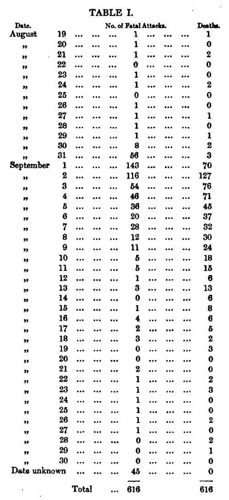
表１
上のテーブルの死亡は上に地図を説明したときの資料によっている。しかし地図では番地が判らないので省略したものが表には入れてある。罹病の月日についてはシブリー氏の好意によってミドルセックス病院で起きた80人の死亡も非常に精確に記入している。病院が受け入れた時間およびそれまでの病気の経過が病院の記録に書き入れてあるからである。他の幾つかの例において罹病の時間についての情報を得ることができたが、残りについては死亡の日時から引き算によってこの病気の経過を得た。病気の経過が12時間を越えていないときには罹病は同じ日に起きたものとした。病気が12時間を越えたが36時間以内のときには里望が前日に起きたとした。以下は同様である。病気が48時間を越えているときには病気の経過を日で示し、罹病の日から引き算をした。この計画はいつでも罹病の正確な月日を与えるわけではないが、月日だけでなく時間を表に入れるのでなければ、正確な月日が与えられたのと同じような価値が多分あるだろう。下痢が以前からあったと記載されているときには、その期間を死亡月日から差し引いた。そして患者が結核または発疹チフスに罹っていた２−３例を除いて、実際の罹病の日時は不快が始まったときと決められた。病気の期間が確かめられていなかったり登録所の記録に書き入れられていない45例が存在していて、これらの例では罹病の日時は最終的に不明であった。これらの人たちは殆ど全てが災害が高かった９月の最初の数日に死亡していて、この頃に死亡した他の人たちと同じように非常に急に死亡したことは殆ど確かである。
この表で８月31日に置かれた56人の罹病者のうちその日の夕方遅くまでに病気に罹っていた人はかなり確実に非常に少かった。患者の急増は極めて突然であり８月31日から９月１日の夜に始まったことはこの地域の中に住んでいた医師たちから聞いている。発生の最初の３日に起きた例では殆ど何の前駆的な下痢も見られなかった。そして何人かの医師たちから聞いたところでは、この日々に診た例のうちで回復したものは殆ど無かった。
１日にコレラの襲った最も多くの数は、発生が始まったすぐ後の９月１日にみられた。次の日に罹患者は143人から116人になり、次の日は54人であった。上の表を見ると、新しいコレラによる襲撃は毎日減少し続けた。９月８日すなわちポンプのハンドルが取り除かれた日には罹患者は12人であった。９日には11人、10日には５人、11日には５人であり、11日には１人だけであった。そしてこの後では１日に４人以上が罹病したことはなかった。この疫病の減衰のあいだ死者数は罹病者よりも多かった。これは数日のあいだようやっと生き長らえていた多くの人たちが続く発熱によって死亡したことによる。
前に言ったように、コレラ大発生のすぐ後で始まった人々の避難がコレラによる死亡を下げたことは疑いがない。しかし、コレラの罹患はあの水の使用を中止する前に減少していたので、あの井戸がその後でもコレラ毒を活性のある状態で含んでいるかどうか、または何かの原因であの水から無くなったかどうかを決定するのは困難である。ポンプ井戸は開かれ、あの井戸の管理者であるファレル氏は、井戸の煉瓦構造には不純物が入るような孔や裂け目が無いことを知らせてくれた。従って、この点で以前に述べた幾つかの例のような物理的な事実によって汚染が起きているのではなかった。あの井戸は28から30フィートの深さであり砂礫層を抜けてその下の粘土に達していることを理解している。井戸から数ヤード以内のところを通っている下水は表面から22フィート下にあった。前にも言ったように、コレラ発生のときの水は有機的性質の汚染物質を含んでいて、裸眼でもよく見ると小さな白っぽい羊毛状のかたまりが存在した。ハッサル博士（1817-1894）は親切にこの水を顕微鏡で観察して、これらの粒子は有機（＝細胞）構造が無く、他の物質の分解によるだろうと思っていると伝えてくれた。彼は多数の非常に小さい卵型のアニマルキュール（小動物）の居ることを見たが、水にこれらが生きるのに必要な有機物質を含む追加的な証明が無いかぎり重要性は無いとのことであった。水はまた大量の塩化物を含み、この泉が供給されている不純物であることを疑い無く示している。ブロード・ストリート37番地の雷管製造者のイーリー氏はかなり前からこの水を２日ほど置くと臭いも味も不快になることに気がついていたことを知らせてくれた。このことは私が前から気づいていたが下水で汚染した水の性質である。他の人たちは数時間おくと水の表面に膜のできることに気がついていた。
コレラ発生の頃に水の性質に変化があったかどうかを多くの人たちに尋ねたが答えは否定的であった。しかし後になって、この点について次の重要な情報が得られた。著名な鳥類学者のグールドはブロード・ストリートのポンプの近くに住んでいてこの水を飲むのを習慣としていた。コレラ発生が始まったときに彼はロンドンを離れていたが、９月２日土曜日の朝に家に帰りほとんど直ちに水を汲みにやったが、驚いたことに水は完全に透明でありポンプから汲んですぐであったが、不快な臭いがあった。彼は全く飲まなかった。グールド氏の助手のプリンス氏は水に注意し、不快な臭いを感じた。グールド氏の召使は毎日ポンプの水を飲んでいて８月31日に大量に飲んで９月１日の朝早くコレラに罹った。彼女は最終的には回復した。
この水の不純物が下水からか排水路からか汚水溜からか、この中で汚水溜はこの近所に沢山あるので、私は言うことができない。著名な技術者から聞いたことによると、粘土層の汚水溜は６月または８月ごとに空にしなければならないが、砂礫層のものは可溶性の物質が浸透によって泉に流れこむので20年も空にしないで済む、とのことであった。このコレラ大発生のすぐ前にこのポンプ井戸よりもあまり遠くないところで死亡者のあったこと、および場所が数フィート高められているので、患者の排泄物が不純物としてこの水に入るだろうこと、および他の事実から得たことおよび前に詳しく述べた考察から判断すると、このようなことがあると我々は結論しなければならないだろう。このポンプ井戸に関して重要な点は、この水が殆ど全ての人にとって完全に純粋として通っていて、実際に同じ教区にある、コレラに蔓延に関係していない他のポンプの水よりも不純物が少ないことである。このコレラ発生からコレラを起こすのに充分な病的物質の量は想像できないほど少量であり、その地区における評判はどうであっても町内の浅いポンプ井戸はあまり疑いをもって見ることはできない。
ブロード・ストリートのポンプの水がコレラ患者の排泄物で汚染された可能性は聖ジェイムズ教区におけるコレラの恐ろしい発生の正確な説明であり、この病気の本性および原因についてどのような仮説を採用するにしても、何らかの説明を提供するような他の状況は存在しない。多くの人たちはこの地域における病気の激しさを、ある人たちが同じこの病気にたいするロンドン市の比較的な免疫性、すなわち近所の排水路に障害があったが半年前に整備されたこと、の状況のせいにしようとした。しかしバザルジェット氏（1819-91）は新しい下水が作られた道路は他よりも災害が軽いと公衆衛生局長へ報告している。そして地図を見るとこのことは正しく、今年の２月に下水が修理されたのはブルワー・ストリート、リトル・パルトニー・ストリートおよびディーン・ストリート、ソーホーであったことと私は覚えている。多くの医学と関係ない人々はコレラの発生を約２世紀前にペストで死んだ人たちを埋めた孔があることによるだろうと考える傾向がある。そしてもしも問題の孔がブロード・ストリートに近かったらその考えも可能性があるだろう。しかし問題の孔はリトル・マールバラ・ストリートにあると言われ、これはコレラによる死亡者の多かった場所の外であった。街路や家々を通る下水の悪臭について言うと、これはロンドンその他の町に共通な欠点であった。コレラ発生の限られた地点において下水または排水路に特別なことはなかった。そしてサフロン・ヒルその他の場所は悪臭でもっと苦しめられていたがコレラによる襲撃は穏やかであった。
ゴールデン・スクエアのブロード・ストリートの近くでコレラの大発生があった丁度そのころに、デトフォード（テムズ川南東）で同じように激しいコレラの急増があったが、もっと限られたものであった。数日のあいだにニュー・ストリートおよび近くのフレンチズ・フィールドと呼ばれる通りの40か60の小さな家々で、約90人の死亡が起きた。デトフォードはケント水道会社によってレイヴンスボーン川の非常に良質の水が供給されていて、この発生の起きるまでは、水の無い非常に貧しい人たちがテムズ川の入江であるデトフォード・クリークから桶で水を汲んでいることによる非常に数少ないコレラ以外には無かった。しかし大発生の丁度前にニュー・ストリートおよびその近くで幾らかの病例が見られた。９月12日に現地に行って調査を行い、コレラによる死亡の起きた家々はケント会社から水の供給を受けていて他の水を使ったことが判った。しかし、数週のあいだ最初に水を出したときに非常に不快感があったと伝えてくれた。彼らの言うところでは水は汚水のような味がし石鹸のように泡立つと言っていた。彼らは最初に出た数桶の水を捨て、キレイになってからの水を利用する習慣になっていた。コレラがこのように発生していなかった周囲の通り、すなわちウエリントン・ストリート、オールド・キング・ストリート、ヒューズズ・フィールヅ、を調査して、水の変化していなかったことが判った。従って、水を出していない時に、コレラの発生した地域に供給しているパイプに漏れが起きていると結論した。しばしば石炭ガスは水道パイプが部分的に空なときに、このように水道に入って水に味を与えることが知られている。ニュー・ストリートやフレンチズ・フィールヅには下水が無く、すべての種類の廃物はしたがってパイプが埋められていた土地を飽和していた。人々が最初の部分の水を捨てた後で集めた水も近所の通りに供給されている水よりも有機物の多いことが判った。硝酸銀を加えた標品に光を当てると、ここの水は近くの水よりも濃い褐色になった。
上に述べた水を介するコレラ感染のすべての例はポンプ井戸または他の限定的な水供給の結果であった。そしてこのような汚染に関係するコレラ発生は急激に起き激しいものではあったが同時に限局的であった。しかし川の水が船の上からか汚水路または下水からかによりコレラ排泄物で汚染されると、コレラ感染はあまり突然ではなく激しくはないが、もっと広範囲に広がる。もっと顕著なのは川の水が蒸気エンジンおよびパイプによって水道会社に連結しているときである。コレラは前に指摘した理由で貧しい人たちが群がっている袋小路や路地でぐずぐずしているが、町や近所の地域社会のすべての階級に広く拡がるときに、飲料水がこの広がりの媒介物では無い例を私は知らない。ロンドンにおける各々のコレラ流行はそれぞれの地域の水供給に強く関連していて、ただいつでも伴っている貧しさ、住居密度、清潔さの欠乏、によって修飾されているだけである。
次の表２は1932年におけるロンドンの諸地域の死者数ならびにその時期における上水供給の様相である(11)。
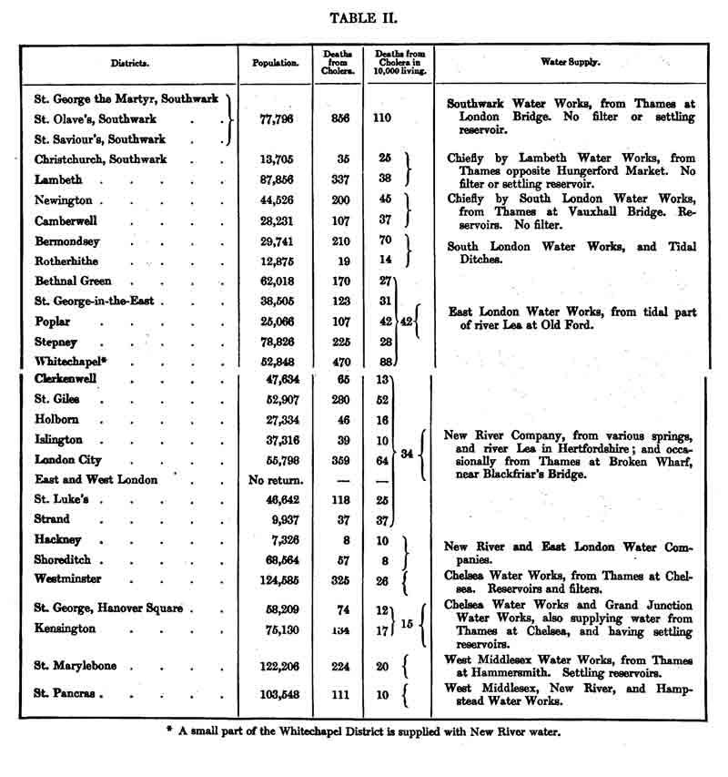
表２ コレラによる死亡数と水の供給
ロンドンのどの地域よりも悪い水を供給されているサザックの大部分においてコレラによる死亡者は他のどこよりも高いことをこの表は示している。テムズ川の上流からの水で従って不純物の少ない水を得ている他の南岸の区域ではコレラの影響が少なかった。テムズ川の北岸で東部地区はリー川（テムズ川の支流）の水をオールド・フォード（リー川最下流の渡し場）において得ており、ここでは大きな人口の下水を含んでいて、ロンドン北岸のどこよりもコレラの影響を受けた。ホワイトチャペルは他の東部地区よりも大きな影響を受けた。多分これは貧しいことおよび過密なことによるのではなく、多数の水夫、石炭運び、などが住んでいて、彼らはテムズ川上で雇われていて、働きながら水を直接に川から得ていたためと思われる。テムズ川に勤務していた人たちのあいだで139人がコレラで死亡した。コレラはニュー・リヴァー会社の大部分の供給地域を軽く通り過ぎた。聖ジャイルズは教区のうちルーキー（貧民窟）と呼ばれる部分が一般旅館で混み合っていたので例外であった。ザ・シティ・オヴ・ロンドンもまた1839年には酷い目にあった。ブロークン・ウォーフ（波止場）でテムズ川から水を汲むのに蒸気エンジンが使われたときに、この水は特にザ・シティに供給されてニュー・リヴァー会社が供給していた高台には少しも供給されなかった。もしもこのエンジンが1832年のあいだ実際に使われているとすると、このことはザ・シティでコレラによる死亡が多かったことの説明になるであろうが、この状況の正しいことを確証することはできない。しかし何年も後になってもエンジンが時には使われていたことを私は知っている。
ウェストミンスターは同じ水を使っていたハノーヴァー・スクエアの聖ジョージ教会教区およびケンジントンよりも1832年に酷い目にあった。これはその人口の一部が貧しく過密なことによっていた。水によって伝染した病例の数はどの地域も同じであるべきだった。しかし、多分ある地域では他の地域よりもヒトからヒトへの感染が多かったのであろう。
1839年と1849年のあいだにロンドンの水供給の場所を変えた。サザック水道会社は南ロンドン水道会社と合併して名前をサザック・アンド・ヴォクソール会社にした。ロンドン・ブリッジにおける取水所を廃止し、合併会社は供給を半マイル上のバターシー・フィールヅでテムズ川から受けることにした。ランベス水道会社はハンガーフォード・マーケット（現在のチャーリング・クロス駅）の向かい側から得た。しかしブリクストンに小さな貯水池を作った。
しかし、これらの変化を水道会社が行っているあいだにテムズ川にもっと大きな変化が起きていた。一部は人口増加によるものであり、もっと大きいのは汚水溜を中止してその代わりに殆ど一般に水洗便所を使うようになったことであった。テムズ川は1849年のバターシー・フィールヅにおいて1939年のロンドン・ブリッジでよりも不純であった。ランベス水道会社の２マイル以内に南ロンドン水道会社がパイプを敷くことを禁じた約款が1834年に撤回され、２つの会社は何年も活発な競争をし、その結果としてランベス水道会社とサザック・アンド・ヴォクソール会社の両会社のパイプが幾つかの南地区の街路において一緒に通るようになった。両会社の水の不純さは1849年には殆ど等しかったのでその当時にこの状況はあまり結果が違わなかったが、後に示すように非常に重要な結果となった。
テムズ川の北側で水道会社およびその地域は同じであったが、水の供給元にはあるていど変化があった。東ロンドン水道会社は水をオールド・フォードから得るのを中止してリー・ブリッジの上でアパー・クラプトンの一部を除くと下水が入らないリー川から得るようにした。グランド・ジャンクション会社は事業所（取水場）をチェルシーからブレンフォードに移し、そこに大きな沈殿池を作った。ニュー・リヴァー・コムパニーはテムズ川から蒸気エンジンで水を汲むのを中止した。他の水道会社の水供給は1832年と同じであった。
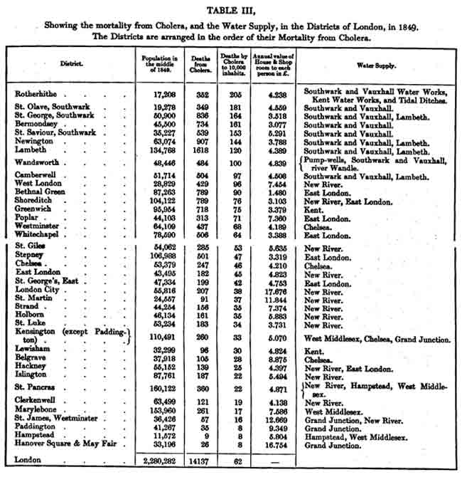
表３
この表３は1849におけるロンドンの種々の登録区域のコレラによる死亡率および上水供給を示している。
家および店の１人あたりの専有面積の年平均値も示している。これは主として過密またはその逆の状態の基準としている。コレラによる死亡数および家の部屋の数値は一般登録局へのファー博士（1807-1883）の「1849年のコレラ報告」から取っている。上水供給は単に会社の名前だけを示している。上に供給源を与えているので、これで充分であろう。ケント水道会社が水の供給をレイヴンスボーン川から得ていること、およびハムステッド会社がハムステッドの泉および貯水池から得ていることを加えるだけが必要であろう。
表を一見するとサザック・アンド・ヴォクソールまたはランベス水道会社が供給しているすべての地域は他のどんな地域よりもコレラがより致死的であったことが判る。テムズ川から水の供給を受けていて下水の内容で汚染が多い状況の唯一の他の会社はチェルシー会社である。しかし、この会社はロンドンのもっとも上流社会の部分に供給しているので給水する前の濾過に十分の注意を払っていて、それによって他のものと一緒にコレラを起こすものの大部分を除いたことは疑いない。他方、サザック・アンド・ヴォクソールおよびランベス水道会社は水を濾過していると主張しているが、彼らは水をもっとも不純な状態で供給している。次の年ですらハッサル博士が水を検査すると、その中に動物の毛や消化管を通った種々の物質を見つけた。ロンドンの上水供給一般についてハッサル博士は次のように言っている。――
「ロンドンのサリー州側（＊＝テムズ川南岸）の会社すなわちサザック、ヴォクソール、ランベスの水はテムズ川から水を得ている会社のうちで最悪なことが観察されるであろう。」(12)
ロンドンの北地区は南地区よりもコレラの災害が少なく、コレラによる死亡率は主として住民の貧困および過密によって影響を受けた。ニュー・リヴァー会社はロンドン市におけるエンジンの使用を完全に中止して、その水には下水が全く含まれていないので、コレラの蔓延には関係が無かった。イースト・ロンドン会社の水はリー・ブリッジの上で得ているのでコレラの蔓延には関係が無かった。このことはハマースミスでテムズ川から取水しているウェスト・ミドルセックスも同様であり、ブレントフォードで取水しているグランド・ジャンクション会社も同様であった。すべてこれらの水道会社は大きな沈殿貯水池を持っていた。上にも述べたようにチェルシー会社は1849年には注意深い濾過および貯水池に保留することによって水を安全な状態にしていた。
ロンドンのある部分は1849年にポンプ井戸の汚染によって苦しみ、テムズ川に住んでいる人たちが川から桶で飲み水を汲む習慣によってテムズ川に近い地域におけるコレラは増加した。さらに川に住んでいる人たちは他の人たちよりコレラで苦しんだことが示されるであろう。ベイリー博士は医学会への報告で次のように述べている(13)。
「もしも水の性質がコレラによる死亡に大きな影響があるとしたら、ベルグレイヴ（高級住宅街）地域では１万人あたり28人が死亡しウェストミンスター地域では同じようにチェルシー会社から水を供給されているのに１万人あたり68人も死亡しているのは何故だろう。そしてワンヅワース地域では死亡率は100に過ぎないのに聖オレイヴ地域では１万人あたり181人であり--両地区ともサザック会社から水を受けている、のに何故だろう。」
チェルシー会社の水については前に述べた。しかしこの水がコレラ蔓延にどのように関係するかは前にも述べたコレラの感染様式に依存していて、貧乏人が過密に住んでいるウェストミンスター地域では、広く便利な家に住んでいるベルグレイヴ地域に比べて、より拡がるであろう。コレラ毒の汚染した水を介しての影響を調べるにあたって、私がこの研究の最初に述べたようなもっと直接なコレラ毒を飲み込むことを絶えず心に置かなければならない。聖オレイヴ地域とワンヅワース地域について、ベイリー博士はこのこと、すなわち前者の地域では殆どすべての家に水道会社からパイプが引いてあるのに、ワンヅワース地域ではほんの一部にだけに水道会社のパイプが達していて大部分の家にはポンプ井戸だけしか無いことに注意していない。
1849年のコレラ流行は1948年秋に始まったものの続きでもありリバイバルでもあり、最初の例と関連した状況のあるものは顕著であり注意する必要がある。ロンドンにおける確定されたアジアコレラの最初の例は既に述べたように1848年の秋のことでハンブルクからの海員であり、次の患者は最初の患者が死んだその部屋で起きた。これらの患者はテムズに近いホースリーダウンで起きた。ホースリーダウンで２番目の患者が出た夕方にランベスのロウワー・フォア・ストリートで１人の男が病気になり、次の朝に死亡した。この例がランベスで起きたのと同時に一連の例の最初のものが川に近いチェルシーのホワイト・ハート・コート、デューク・ストリートで起きた。１−２日後にハープ・コート、フリート・ストリート３番地で患者が出た。次の例は10月２日にウリッジ（ロンドン南東部）に置かれていた廃船ユスティティアの上で起きた。次はランベスのロウワー・フォア・ストリートで前の例が起きた所から３ドア離れていた。最初の13例はすべて今述べた場所で起きた。そして10月５日にスピタルフィールヅ（イーストエンド）で２例が起きた。
さて、ランベスのロウワー・フォア・ストリートの人たちは街路に他に得るところが無いのでテムズ川に桶を下ろして飲み水を汲んでいた。チェルシーのホワイト・ハート・コートで人々はすべての水を同じような方法で得ていた。後になって
コレラ流行が1849年夏に再発したときに、サブディストリクト「ランベス；チャーチ、第１部」の最初の例は６月27日のロウワー・フォア・ストリートであった。そして今年の流行が始まるにあたって、ランベスのあらゆる場所における最初の例でロンドン市内で最も初期の１例はアパー・フォア・ストリート52番地で起きたが、ここでも住民はテムズ川から桶で水を汲む以外に方法の無いことはその家を訪ねて確かめた。この年の初期の例の多くはテムズ川の船に雇われている人たちであり、ウォンズワースおよびバタシー（テムズ川南岸）における初期の例で人々は水をテムズ川から直接に汲むかまたはテムズ川が潮とともに入り込む流れから得ていた。このことはコレラがテムズ川の水を介して蔓延するという考えに応じている。すなわち川から直接に引きこんでいる人たちは、水道会社パイプの回り道で受け取る人たちよりもどちらかと言うと直ぐに病気になるのは一般に当然なことである。
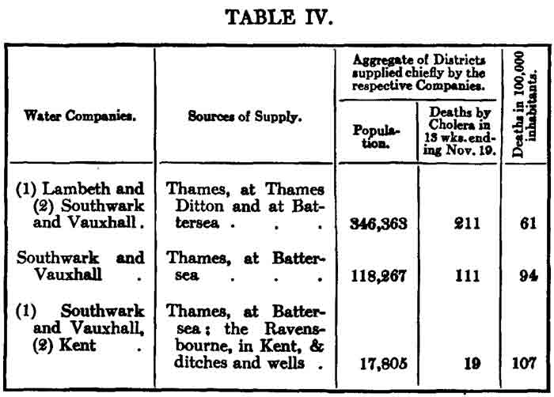
表４ ランベス社による新しい水供給
ロンドンは1849年後半から1853年の８月までコレラがなかった。この期間にロンドン南部地域の幾つかで水の供給に重要な変化が起きた。ランベス会社は1852年に水道事業所をハンガーフォード・マーケットの反対側からテムズ・ディットンに移動させ、このようにしてロンドンの下水を全く含まない水を供給するようにした。しかしランベス会社による供給区域はサザック・アンド・ヴォクソール会社によってもある程度は供給されていて、前にも述べたように両方によって供給されているところでは、両方の会社のパイプがそれぞれの街路に通っている。このように水供給が互いに行われていることによって、ランベス会社が行った変更の効果はコレラの進展にたいする効果は、通りいっぺんの観察者にとって、しかるべく明らかになっていなかった。しかしこのことは1853年11月23日の「誕生および死亡週報」を発行した戸籍本署長官の注意を惹いた。表４はロンドン南部地区に焦点をおいた抜粋である。
改良した水を部分的に供給されていた地区は他にくらべると災害の受けかたが少ないようである。1849年にランベス会社は水をハンガーフォード・マーケットの向かい側からから受けていて、サザック・アンド・ヴォクソール会社だけから供給されていた地区と同じ災害を受けていたことは、表３に示されている。ランベスの水は両会社から供給されていたグループの中に必然的に入れられている小さい部分にだけ達している。そしてこの区分をもっと詳しくディストリクトでなくサブディストリクトにすると、新しい水供給の影響は上の表よりももっと大きいであろう。ケント水道会社はロザーハイヅの少部分に供給している故に総合登録署によって表に加えられている。
ロザーハイヅのこの部分について次のような興味深い意見が1853年12月10日の「週報」に書かれている。――「ロンドン水供給――以下は総合登録署がロザーハイヅの登録者であるピット氏から受け取った手紙の抜き書きである：――
「『この教区でケント水道会社が1849年に敷設したパイプについてのモリス氏の記載は主な点で正しいと思う。この会社はこの教区に入ったが上記の年における恐ろしいコレラ襲来の時まで住民はこの水を部分的にしか受け取っていなかった。
「『現状では一般的にケント会社から供給されている地区はこの教区の他の部分よりも、1849年の死亡について間違いなくもっと多かった。災害がもっとも酷く起きたシャルロット・ロウ、ラム・アレーおよびシルヴァー・ストリートだけを述べれば充分である。
「『コレラの最近の例について言うと、ケント水道会社から供給されている地域では１例も起きていない。
「『ロザーハイヅ教区は過去の長いあいだ水の供給が悪かった。人々は古い井戸、古いポンプ、開放ドブ、およびテムズ川の汚れた流れからの水を飲んでいた。」
「1848-9にロザーハイヅにおけるコレラによる死亡率はロンドンのどの地域よりも高かった。このことはコレラの蔓延しているときに水がもっとも不純な所がもっとも致死的であるという一般原則に適合している。」
次の表５は1853年の流行においてコレラが殆ど消滅した時期までの死亡率を示したものである。
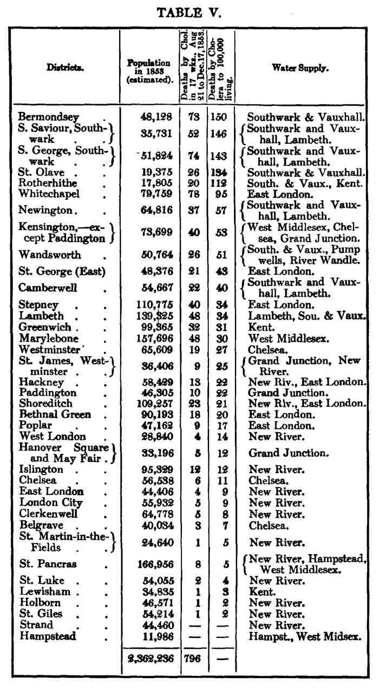
表５
地域はコレラによる死亡率の順に並べてある。
主としてランベス会社から水を供給されているランベスは上の表では1849年の死亡率を示した前の表に比べて下の部分にある。ロザーハイヅも１番目の場所から五番目に移っている。これは上に述べたように疑い無く水をケント水道会社から供給されている地域の部分によるものであり、水はドブからではないので全くコレラを含んでいないからである。
戸籍本署長官がロンドンで1853年８月における流行の初めから1854年１月の終了までのコレラで死亡したすべてのリストを刊行したので、サザック・アンド・ヴォクソール会社とランベス会社が水を供給している、テムズ川の南岸の種々のサブディストリクトにおける死亡者数を加え合わせることができるようになった。私は次の表で３つのグループにして提供する。
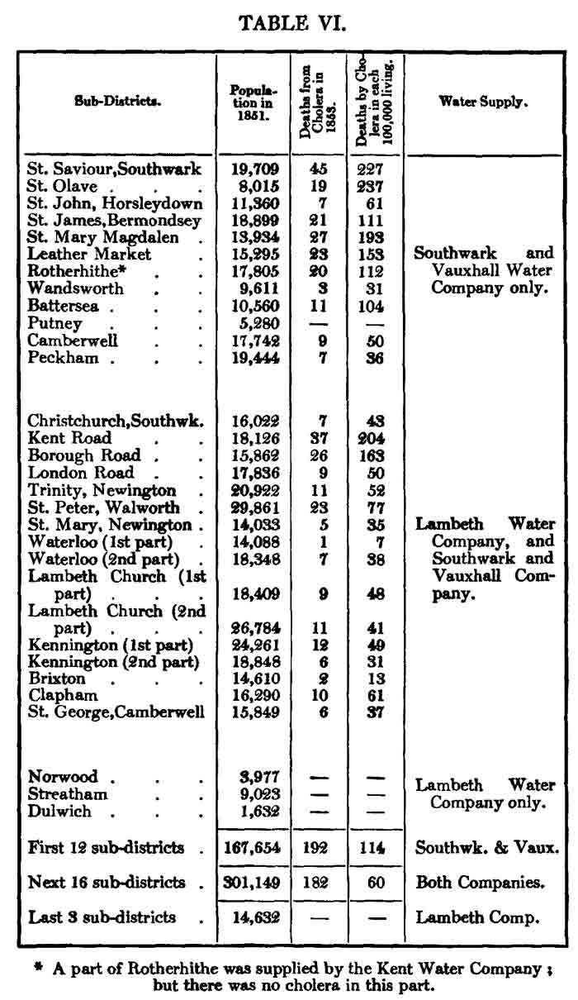
表６
表６に示した一般的な結果の他に次の特別な事実は考察する価値がある。1849年にランベス会社の水がサザック・アンド・ヴォクソール会社と同じように不純だったときにクライストチャーチ教区は近くの聖セイヴィア教区よりもコレラによる死亡率はむしろ高かった。しかし1853年に聖セイヴィア教区の死亡率は住民10万人あたり227人だったのにクライストチャーチ教区では43人に過ぎなかった。現在、聖セイヴィア教区はサザック・アンド・ヴォクソール会社だけから水を供給しているのに、クライストチャーチ教区は主としてランベス会社から受けている。クライストチャーチ教区におけるランベス会社のパイプその他の資産は約316ポンドとみなされているのにこの教区におけるサザック・アンド・ヴォクソール会社の資産は約108ポンドとしかみなされていない。ウォータールー・ロード、第一部は1849年に聖セイヴィア教区と同じように苦しめられたが、1853年には死亡者１人だけであった。ここは殆ど完全にランベス会社によって供給されている。コレラによって酷く苦しめられたケント・ロードおよびバロー・ロードのサブディストリクトは、大部分を殆ど排他的にサザック・アンド・ヴォクソール会社によって供給されている。ランベス会社はほんの一部だけ他のもう１つの会社と一緒になっている。このことは添付地図（地図２、UCLAサイト：http://www.ph.ucla.edu/epi/snow/watermap1856/watermap_1856.html）に見ることができるだろう。
ウォンヅワースおよびペカムの郊外地区にはかなりの数のポンプ井戸があり、ほんの一部だけその水道会社によって水を供給されている。従ってこの地区はバターシー・フィールヅから供給されている他のサブディストリクトよりも死亡率が低かった。この水が達していなかった３つのサブディストリクトは1853年にコレラによる死亡者がなかった。
上の表に示した事実はこの病気が存在するときには、町の下水を含む水を飲むことが、コレラの蔓延に強力な影響を与える非常に強い証拠を与えているが、問題はここには終わらない。何故かと言うと問題がどちらかの方に疑いないとの証明が認められたとしても、ロンドンの広範な部分において、サザック・アンド・ヴォクソール社の水供給がランベス社の供給と混じっているからである。上の表で両方の会社から供給されているサブディストリクトでは、供給の混ぜあわせが非常に密接である。両方の会社のパイプはすべての街路を通ってすべての袋小路や路地に入っている。２つの会社が活発に競争しているときに家の所有者または住人の決定によって、幾つかの家はある会社から供給され、幾つかは別の会社から供給される。多くの場合にある１つの家は両側の家と違った水を供給される。どちらの会社も金持ちにも貧しい人にも供給し、大きな家にも小さな家にも供給する。違う会社の水を受け取る人たちには条件も職業も違いが無い。今では次のことが明らかであるに違いない。部分的に改良された水を供給されている地域におけるコレラの減少はこの改良した水の供給に依存し、これを受け取っている家はコレラ減少の全部の利益を享受し、バターシー・フィールヅからの水を受けている家々は改良された水供給が全く存在しないのと同じ死亡率で苦しむであろう。２つの水道会社からの供給を受けている家々や人々にも、彼らの周りの物理的条件にも、全く違いが無いので、観察者の前に既設のものとして状況が置かれているこの実験以上に、コレラの進展にたいする水供給の影響をもっと完全に検査する実験を計画することは、出来ないであろう。
この実験はまた最大の規模のものであった。男性、女性の両方で、あらゆる年齢と職業で、あらゆる地位と身分で、紳士階級から非常に貧しい人々まで、各人は選択できずに、多くの場合には各人は知らないで、２つのグループに分けられた。１つのグループにはロンドンの下水を含んだ水が供給され、その中には何ものにもせよコレラ患者からのものが含まれていて、他のグループにはそのような不純物が全く含まれない水を供給されていた。
この最大規模の実験を活用するのに必要なのは、コレラの致死的な襲撃が起きるかも知れない個々の家にどの会社の水が供給されるかを、知ることだけがすべてであった。私が残念に思うことには昨年の後半にこの調査をする時間の余裕が無かった。実際、その時に２つの水道会社が供給している水の詳しい違い、すなわち必要とする調査の従って重要な本性を、完全には知らなかった。
しかし今年の７月にコレラがロンドンに戻ってきたときに、すべての状況は調査のために楽しく適応しているのに、水供給の疫病進行への正確な影響を確かめるために必要な努力をする決心が、私にはできていなかった。私は５年のあいだ主張してきた学説が正しいか誤っているかの研究を自分自身ですることを希望していた。私が持っている多数の事実から引き出した結論を疑う理由は無いが、コレラ毒が下水を通って大きな川に入り、何マイルものパイプを通って給水されてその特異的な効果を示すことは、驚くべき性質であり地域社会にとって非常な重要性があり、あまりにも硬直的に検査したり、あまりにも堅固な基礎の上に証明することは出来なかった。
従って登録本署に２つの会社の水供給が上に述べたように混じっている地区においてコレラで死亡した人たちの住所を提供してくれるように許可を願い出た。これらの住所の一部は「週報」に刊行されていて他の例についてもコピーする許可を得た。私は８月中旬にランベスの２つのサブディストリクトであるケニントン第１およびケニントン第２について調査を始めた。これらのところでは８月12日までに44人が死亡し、そしてこれらの死亡が起きた38軒の家は水をサザック・アンド・ヴォクソール社から供給され、４軒はランベス社からであり、２軒は敷地内にポンプ井戸があってどちらの会社からも供給を受けていなかった。
これらの詳細を確かめるや否や私はファール博士にこれらの結果を知らせ、彼はこの結果で大変に驚き、彼の提案によって、ロンドン南部のすべての地域の登録担当者たちは、すべてのコレラによる死亡について襲撃を受けた家の水供給を報告するように要求された。この要求は８月26日から行われ、私の調査をこの月日まで下ろすことにして、事実を疫病流行の全期間について確かめられるようにした。私は調査を２つの水道会社の水供給が混じっているランベス、サザック、ニューイントンのその他のサブディストリクトについて行った。その結果は後に述べるようにすでに述べたものと非常によく似ていた。人々が救貧院その他の場所に移動していた場合には、コレラの襲撃があったときに彼らが住んでいた家の給水を調査した。
調査は必然的に大量の不具合を伴った。必要とする情報をすぐに入手できたことは殆ど無かった。住民が水道料金を払っていた場合でも、水道会社の名前を稀にしか覚えていることはなく、受け取りを探さなければならなかった。週単位で家賃を払っている労働者たちの場合に水道料金は必ず家主かその代理人が払っていて、しばしば遠くに住んでいて住人はこのことを何も知らない。実際のところ２つの会社の水を化学テストによって区別できることを見つけなかったら、この調査を完成することは出来なかったであろう。私が使ったテストは、私が調査をしたときの２種類の水に含まれる塩化ナトリウムが大きく違ったことによっていた。ロンドン下水が届かない先のテムズ・ディットンから得たランベス会社の１ガロン（4.546リットル）の水に硝酸銀の溶液を入れると2.28グレイン（64.8mgｍｇ）の塩化銀が得られて、水のなかには0.95グレインの食塩が含まれていることが示された。サザック・アンド・ヴォクソール会社の水を同じように処理すると91グレインの塩化銀が得られ、１ガロンあたり37.9グレインの食塩の存在を示した。実際のところ、この２種類の水に硝酸銀を加えると外見の違いは大きく、それ以上なにをしないでも直ぐに区別することができた。したがって住民が水道会社についてはっきりとした決定的な事実を提供できないときに、私は少量の水を小瓶にもらって蓋に住所を書いて家に戻って検査することができた。水の単なる外見は用水桶またはタンクに入る前に出てきたところを観察すると、一般にその起源を非常に良く知ることができた。そしてどれかの街路に来ている両会社の水栓を訪ねた後で出るまでの時間は水の種類についてのある事実を与えてくれる。しかし、これらの点は化学テストや会社の料金領収書などによって裏打ちされていないと信頼することはできなかった。
２つの水道会社のそれぞれから供給されているすべての家の全部の数についての報告が議会になされたが、特定の地域において供給されている家の数は述べられていないので、供給が混ざっている地域における事実を明らかにするには、どちらかの会社が供給しているすべての地域について調査することを必要とすることが判った。私はランベス会社が供給している地域におけるすべてのこれらによる死亡を調査して回った。そして私は幸いなことに医学関係の男である薬剤師（L.A.C. : Licentiate of the Apothecaries' Company）ジョン・ジョセフ・ホワイティング氏の助けを借りて、バーモンジー（ロンドン中東部）、ロザーハイヅ、ウォンヅワース、その他のサザック・アンド・ヴォクソール会社からだけ供給されている地域の調査を行った。ホワイティング氏は非常な努力をして、担当している調査として、致死的な襲撃を受けた家がその会社の水を供給されているか、ポンプ井戸からか、他からか、を調べた。
研究のワイティング氏の部分は疫病流行の最初の４週すなわち７月８日から８月５日までのことであった。そしてこの期間におけるコレラによるすべての死亡について、どちらかの水道会社が供給しているすべての地域において調査がなされたので、この期間をまず考察するのが好ましいようであった。この４週間にサザック・アンド・ヴォクソール社とランベス社が水を供給している地域でコレラによる死亡が334人であった。これらのうちで286例では致死的なコレラによる襲撃が起きた家はサザック・アンド・ヴォクソール社によって供給され、14例だけがランベス社の水を供給された家であった。22例では水は桶をテムズ川に直接に下ろし、４例ではポンプ井戸から、４例は溝から、水を得ており、４例では旅行中に病気になったりなどしているので水供給原は判らなかった。今回の疫病流行におけるコレラによるすべての死亡の詳細は戸籍本署長官によって「ロンドンにおける誕生と死亡の週報」として刊行され、上に述べられた334人についてこの版の本の補遺に採録している。これは水供給が調査されていることを明らかにし、結果を確認する機会にしたい人々に提供するためである。調査をしようとする人は攻撃された家を見つけるのに注意しなければならない。何故かと言うと多くの街路で幾つかの家が同じ番地を持っているからである。
議会への報告によるとサザック・アンド・ヴォクソール社は1853年１月１日から12月31日のあいだ40,046軒の家、ランベス社は同じ時期に25,107軒の家に供給していた。その結果、疫病流行の最初の４週間に前の会社によって供給された家で286人の死亡があり、後の会社に供給された家では14人のみが死亡した。10,000軒あたりの死亡者はサザック・アンド・ヴォクソール社では71人、ランベス社では５人であた。従って、この時期に、サザック・アンド・ヴォクソール社からの不純な水を得た人たちは、テムズ・ディットンからの純粋な水を得た人たちに比べて、14倍も致死的であった。
特筆する価値があるのは、全ロンドンでコレラによる死亡者は563人に過ぎないのに、８月５日までの４週間でこの死亡者の半分以上はサザック・アンド・ヴォクソール社の得意先であり、残りの死亡者の大きな部分はテムズ川から飲み水をいつでも直接に川から汲んでいた乗組員たちだったことである。
サザック・アンド・ヴォクソール社がランベス水道会社と同じように手早く新しい水道事業を行って下水を含まない水を得ることができたとしたら、今年のコレラ流行はすとして海運業に雇われている人たち、およびテムズ川から直接にまたは潮水が入る溝から桶で汲む貧しい人たちに限られたであろうと、実際に確信をもって主張することができるだろう。
ロンドンの家数は最近の調査では327,391であった。もしもサザック・アンド・ヴォクソール社から水を供給されてる家およびこれらの家でコレラによる死亡を引くと、ロンドンに残る家は287,345軒であり、この中で最初の４週間に277人がコレラで死亡したことになる。これは１万人あたり死亡者９人になる。しかしランベス社から水を供給している家でこの時期には１万人あたり５人に過ぎない。従って、これらの家は死亡率が非常に大きいサザック・アンド・ヴォクソール社と密接に混じり合ってはいるが、混じり合っていないロンドンの他の地区に比べてもそんなに大きくはない。
ロンドンの今年のコレラ流行の初めに、テムズ川の水はサザック・アンド・ヴォクソール社のパイプを経由するか直接に桶により川から直接かのどちらかによって、疫病の拡がる大きな原因であった。コレラは初夏にロシアのバルト海艦隊で流行していて、戸籍本署長官が出した「週報」によるとこの病気は多分この艦隊からテムズ川に持ち込まれた。
「セイント・ジェイムズ・バーモンヅィー。マリン・ストリート、10番地、７月25日、水夫、34才、アジア・コレラ101時間、前駆の下痢16.5時間。医学従業員は次のように言っている：『この患者は貯蔵品を運んだり患者をバルト海艦隊から連れ帰る蒸気船の水夫頭であった。３週間前に病気であった士官の汚れたリネンを船室に入れて帰った。リネンは洗って返した。』」
この蒸気船が汚れたリネンをもってテムズ川についたときは、コレラの第１例がロンドンに出現する数日前であり、これらの最初の例は主としてこの川を運行する人たちに関係していた。従って、バルト海艦隊との交流で少しの単純な注意を払っていたら、ロンドンを今年のコレラから守ったであろうし、いずれにしてもその出現を大きく遅らせたであろう。
コレラの流行が進行すると、サザック・アンド・ヴォクソール社が供給している家に起きる例とランベス社の供給による例とのあいだの差がそれほど大きくは無くなったが、依然として顕著であった。疫病の最初に病例は殆ど完全に下水を経てテムズ川の水を介していた。そしてこのような水を供給されていない家に起きた少数の例は、いつでも家に居ることはなく、住んでいる家で食事をとってはいない人たちが、原因だったのであろう。しかし流行が進行するとランベス会社のお顧客の中にも、ロンドンの水に問題が無い部分でも、すべての普通の感染方法によって必然的に広がった。次の２つの表、表７および表８は、水を供給されているすべてのサブディストリクトにおける、それぞれ２つの会社によって水を供給されている家における致死的な襲撃の数を示している。表６の病例は次の表のもっと多数の例の中に含まれていた。サブディストリクトは表６と同じように３つのグループに分けて1853年の疫病流行を示している。
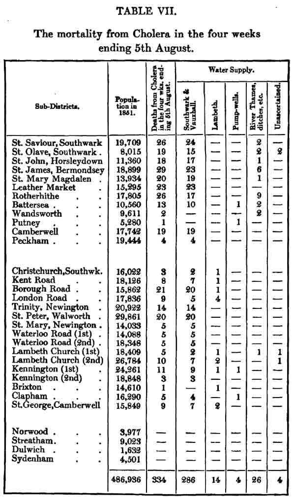
表７
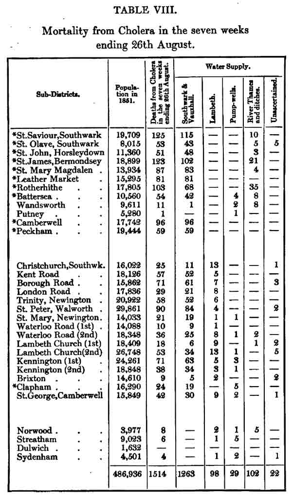
表８
流行の最初の７週間における死亡を示した表８において、水供給は私個人の調査によるものであり、ランベス社が供給しているすべてのサブディストリクトにおけるものである。しかしサザック・アンド・ヴォクソール社だけから供給されているサブディストリクトの一部はワイティング氏の調査が８月５日だけに限られていて後の３週間については会社またはポンプ井戸について最初の４週間と同じとみなしていた。この計算は完全に公正であって真理に非常に近いものに違いない。供給が部分的に計算によるものには星印をつけてある。
表８の数値はメディカル・タイムズ・アンド・ガゼットに報告した表１とは非常に少し違っている。これはその当時には知らなかった水供給のある例がその後に確かめられたものである。水供給がその後も不確かなのは救貧院に運ばれて住所が判らないものである。
次の表９は流行の最初の７週間におけるサザック・アンド・ヴォクソール社から供給された住民、ランベス社からの住民、残りのロンドン住民、における１万軒あたりの死亡の割合である。
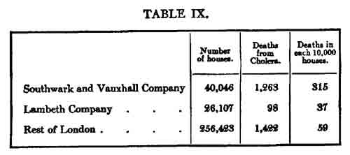
表９
サザック・アンド・ヴォクソール社から供給された家の死亡率は従ってランベス社から供給された家の８倍と９倍の間であった。ランベス社の顧客はサザック・アンド・ヴォクソール社と混ざって供給されていないロンドンの残りよりもコレラにたいする免疫を享受し続けたことが強調されるであろう。
私の調査が及んでいた８月26日以後の時期に関して、戸籍本署長官が地域の登録者たちにコレラによる死亡者のすべての例について報告するように要求したことを述べてきた。調査の最初に出会ったことを私が説明したように、登録者たちはすべての例について報告をすることはできなかった。家主やその代理者を探し出すことが出来ず、私が行ったように水の化学テストをすることが出来なかったので、幾つかの例で水供給を確かめられなかったが、彼らの行った限りにおいて数値は正しい割合を示していると考えられ、この数値は流行の初期についての私の調査結果と全く一致していた。
戸籍本署長官は８月14日まで地域記録者の得た水供給の報告を印刷した。これは表に付記されている。ロンドン南部地区全体がこの戸籍本署長官の調査に含まれているので、ケント水道会社から供給されていて私の調査には入っていなかったグリニッジおよびルイシャム（南岸の住宅地）における死亡が含まれているが、他の水道会社に関係する数には少しも影響しなかった。
さてサザック・アンド・ヴォクソール社から供給された家40,046軒に2,353人の死者であり、１万軒に573人の死者であり、ランベス社から供給された家の数は26,107であり１万軒あたり死者115人である。従って流行の第２の７週でサザック・アンド・ヴォクソール社から供給された人口はランベス社から水供給を受けた人口の殆ど５倍も災害を受けつづけた。もしも水供給が確かめられなかった795の死亡を表10における他の供給に等しく分布させるとしたら、サザック・アンド・ヴォクソール社から供給された家々の死亡は2,830になり、ランベス社から供給されたものの死亡は363になる。流行の最初の７週の死亡数を足すと、付記した表11の数値を得ることができる。ここで２つの水道会社から供給された人口数は戸籍本署長官が見積もったものである(14)。
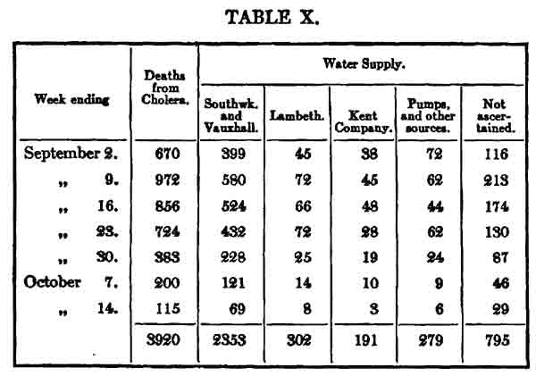
表10
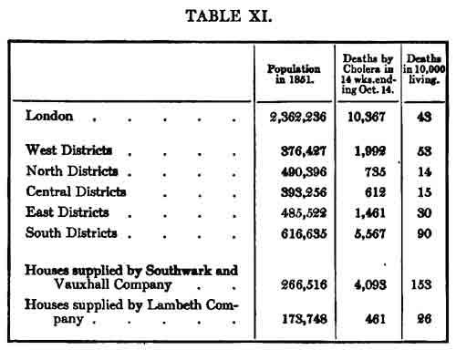
表11
上の表から、ランベス社によってテムズ・ディトンから供給された家々は流行期間を通してコレラからの免疫を享受し続け、この免疫はロンドン全体だけでなく、北および中央のグループを除く他のすべての区域グループよりも、大きい。
次の表12に、我々が特に興味を持つ２つの水道会社が供給していた種々のサブディストリクトにおける1849年および1854年の死亡率が比較されている。1854年における死亡率は10月21日までであり、10月28日発行の「出生および死亡の週間記録」から引用したものであり、1849年のものは前に引用したファー博士の「コレラ報告」からのものである。サブディストリクトは前のように３グループに配列されていて、最初のグループはサザック・アンド・ヴォクソール社からのみ供給されており、第２のグループはこの会社およびランベス社から供給され、第３のグループはランベス社からだけである。しかしランベス社の供給は1849年以降にはストレタム（地図で下右）、ノーウッド（下左）、シデナム（下中央）にまで広がったことに注意しなければならない。この年にこれら３箇所はどの水道会社からも供給を受けていなかった。種々のサブディストリクトの位置および広がりは水供給の種類とともに、添付した地図２（1856年のロンドン給水地図：http://www.ph.ucla.edu/epi/snow/watermap1856/watermap_1856.html）が示している。
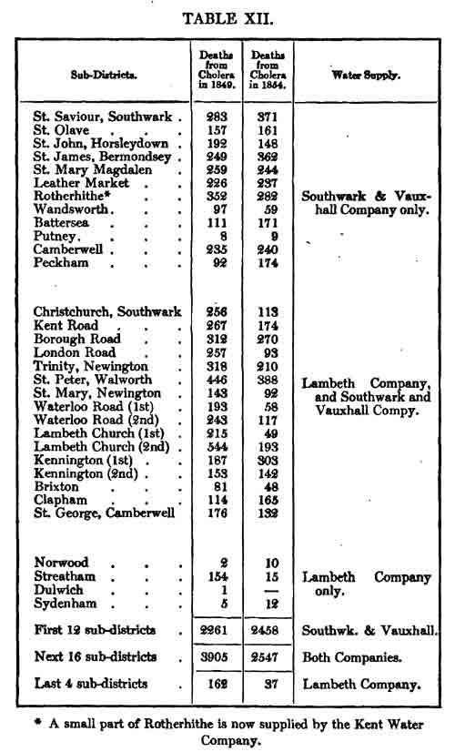
表12
この表12はサザック・アンド・ヴォクソール社からのみ供給されているサブディストリクトは1854年には1849年にくらべて死亡率が増加しているが、部分的にランベス社から供給されているサブディストリクトではかなり減少していることを示している。クライストチャーチ、ロンドン・ロード、ウォータールー・ロード第１およびランベス・チャーチ第１のようにランベス水道会社による供給が他に比べてもっと一般的なところでは、1849年にくらべての1854年の死亡率の減少は予想されるように最大である。
今年は殆ど少しだけコレラに襲われたウォータールー・ロード第１は主として非常に汚い狭い道からなっていて、非常に貧しい人たちが住んでいるコーンウォール・ロードおよびニュー・カットに近いところである。もっと災害が少なかったランベス・チャーチ第１は幾つかのスキンヤード（＊皮はぎ？）や他の工場があり、ランベス・パレスおよびヴォクソール橋の間にあり、コレラ蔓延の原因であると痛罵されていた。1849年におけるコレラ発生は前に述べた（＊トゥーティングの）貧しい子供たちのドルエ保護施設が原因であった。
ロンドン南部地区の調査を行っているあいだに、救貧院について学び、これは注目する価値のあるものだった。ニューイントン救貧院には650人の収容者がいてテムズ・ディットンからの水を受け、コレラ流行が既に大きく低下していた９月21日までで、収容者のあいだのコレラ死亡者は２人に過ぎなかった。ランベス救貧院はもしも私の記憶が正しければ約1000人の収容者で同じ水が供給されているが、私が９月の最初の週に訪ねたときには死者は１人しかなかった。聖セイヴィア救貧院はクライストチャーチの教区に属しランベス社の水を供給されていて私が９月の第１週に訪ねたときには死者はなかった。これに対してサザックの聖ジョージ救貧院にはサザック・アンド・ヴォクソール社から水が供給されていて、流行がまだ３分の１しか過ぎていない８月26日より前に約600人の収容者のうち６人が死亡していた。サザック・アンド・ヴォクソール社から水の供給を受けていた聖オレイヴズ救貧院の収容者の中でも死亡者が多かったが、何人死んだかを私は知らない。しかし、戸籍本署長官が最近の流行を調べてテムズ川の南岸の種々の救貧院や他の施設の収容者における死亡および建物の水供給を報告するであろうと信頼している。ベスリヘム病院（精神病院）、クウィーンズ・プリズン、ホースマンガー・レイン・ジェイルおよびその他の施設は構内に深い井戸があるので1849年にコレラの災害を受けていないし、私が調査を行っている最近の流行においても死亡が無かった。
最近のコレラ流行によるテムズ川の北側における死亡率は、水道会社による水供給よりも、過密の程度および人々の清潔習慣およびポンプ井戸の突発的な汚染に影響されているようである。ニュー・リヴァー社の水は私が1849年の流行を取り扱ったときに説明したようにコレラ蔓延に関与することはあり得ななかった。そしてこの会社が供給している広い区域には、上に述べた原因が影響している幾つかの地点を除いては、コレラが非常に稀にしか訪れていなかった。東ロンドン社の水もまた、コレラが非常に少ないアパー・クラプトンの近くのもの以外の下水の内容を含んでいなかった。この会社から供給されている地区には、テムズ川に近い場所で水夫、石炭運び、底荷運びとして川で雇われているものたちを除いては、コレラが軽度にしか訪れなかった。グランド・ジャンクション社は、潮が届く範囲で人口が多いブレントフォードから水を受け取っていたが、会社は水を大きな貯水池に貯め、社員が言うところによると水を濾過していた。ともかく会社はランベス社がテムズ・ディットンから得ているのと同じように純粋な水を供給していて、ゴールデン・スクエアのブロード・ストリートのポンプ井戸の汚染によって起きた大発生の場所を除いては、コレラの災害を非常に少ししか受けなかった。ウェスト・ミドルセックス社はテムズ川からの供給をハマースミスから受けているが、やはり大きな貯水池を持っていて、主としてアイルランド人である貧しい人々が過密に住んでいる、ケンシントン煉瓦地帯、スターチ・グリーン、および幾つかの他の部分、を除いてコレラの災害を少ししか受けなかった。
チェルシー社が供給している地区は最近の流行では付記した表13が示すようにロンドン全体の平均以上に大きな災害に苦しんだ。
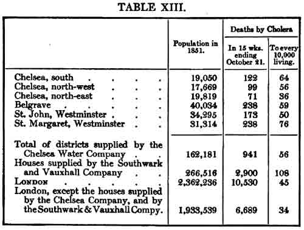
表13
しかし、この地区における死亡率は、チェルシー社が水を得ている場所の丁度反対岸でテムズから取水しているサザック・アンド・ヴォクソール社の供給している家々の、半分にしか過ぎない。チェルシー社は水を貯水池に貯めていて、濾過し、比較的に純粋な状態で供給している。しかし今年の８月と９月にこの水はサザック・アンド・ヴォクソール社が供給している状態とは違うことを充分に観察する機会があった。このチェルシー社の水を受け取っている人々はリネンまたは他の織物で水栓を覆って、大樽やタンクに入るようにする習慣を持っていて、２時間も経つとテーブルスプーン一杯のゴミがたまって種々の虫が動いていて、漉した水も充分には透明でない。この濾過器の内容をしばしば見たことがある。もちろん私はコレラがこの虫や目に見えるゴミによるとは思っていない。しかし、チェルシー社の採用している方針は、胸のわるくなる不純物を分離したりコレラ毒素を分解していると思われる。水を会社の貯水池に溜める方法によりコレラ毒素が分解されているようであり、次に述べる理由で濾過よりも有用であるように考えられる。ミルバンク・プリズンで使っている水はテムズ川からミルバンクにおいて汲んでいて、砂と炭で濾過してチェルシー社のものと同じように透明にしている。しかし、コレラ流行のたびにこのプリズンの収容者は、チェルシー社の水供給を受けている近くの住人やトットヒル・プリズンの収容者よりもコレラで苦しんでいる(15)。今年の８月からミルバンク・プリズンではテムズ川の水を使うのを完全に中止して、この監獄の医師であるベイリ博士の推奨によって、代わりにトラファルガ・スクエアの掘り抜き井戸を使うようになった。この変化の３日から４日で、恐ろしいほど広がっていたコレラは完全に終了した。
テムズ川の不純物量は今年の８月には長い乾燥気候によって大きく増加した。王立天文台の報告によると８月５日から９月12日までの５週以上の期間にグリニッジでは0.29インチの雨しか降らなかった。潮が届くより上のテムズ川の流れは非常に少なく、リッチモンド（ロンドン西郊外）より上を平底荷船の航行は困難なくらいである。ロンドンでテムズ川は非常に水量が大きく、もしも全水量が毎日海に流れるとしたら、下水を12時間のあいだに流れる液体量はほんの一部に過ぎない。しかし潮の干満に伴って海へ流れ出る水量はテディントン・ロック（リッチモンド近くの閘門）と幾つかの支流から流れる水量に等しいものに過ぎない。さらに乾燥した暑い気候でこの量はリッチモンドとグレーヴズエンド（テムズ川下流）のあいだの膨大な表面からの蒸発によって大きく減少し、テムズ川は一種の長い湖になり、同じ水が１日に２回ロンドンを行ったりきたりし、200万人かそれ以上の住民の排泄物を受け取り、雨が降るまで蓄積し続ける。コレラ流行時に患者の排泄物は他の不純物と一緒にテムズ川に蓄積する。そしてこのようにして、しばしば観察されるように、高気圧で乾燥した天気はコレラを蔓延させる。
最初に私はサザック・アンド・ヴォクソール社の水に含まれる食塩はすべて下水を通ってテムズ川に流れ込んだものと思っていた。それは海水の塩分がバターシー・フィールヅまで達しているとは思っていなかったからである。しかし、この会社の技術者であるクウィック氏が教えてくれたことによると、乾燥した天気が長く続くと潮水は遠くまで滲み込むとのことであった。乾燥した季節にはテムズ川の不純物の量を増やすとともに、他のときに比べて海水をさらに内陸に流れるようにするに違いない。私は８月および９月にテムズ川の水を検査していなかったが、11月の後半に検査を行い、この時でも海水の少量はバターシー・フィールヅにまで来ているだろうと考えるようになった。私はハンガーフォード・マーケットで11月19日の潮汐干満の中間で得た水に１ガロンあたり5.8グレインの塩化ナトリウムが含まれ、同じ場所で取った水で、11月27日に満潮の1時間半前には19.1グレインであった。ロンドン・ブリッジで11月28日に満潮のときには１ガロンあたり63.3グレインであった。
11月21日にサザック・アンド・ヴォクソール社から供給されている家から入手した水の標品は１ガロンあたり28.8グレインの食塩を含み、９月には37.9グレインだったので約４分の３であった。上の分析から明らかなように最も不純物が川の水に多い時であるにもかかわらずこの水道会社はテムズ川が満潮またはそれに近い時に水を取り込んでいた。海の水はロンドンの下水の内容と同じようにテムズ・ディットンには届かないことは全く確かなので、従ってその源は何であれ、私が検査しようとする目的、すなわち２つの会社の水を区別するためには水の中の塩化ナトリウムは全く決定的である。
サザック・アンド・ヴォクソール社の水をグレイアム、ミラー、ホフマンの諸氏が1851年１月後半に調べたときに1.99グレインの塩化ナトリウム、すなわち今年の９月の12分の１または1854年11月21日の15分の１、しか含んでいなかった(16)。
ファー博士は1849年に種々なロンドンの地区におけるコレラの死亡率とその土地の高さとの間に目覚しい関係を見つけた。それは逆比例の関係であり、高い地区は災害が最も少なく低いところはこの病気により最も苦しめられるとした。ファー博士は土のレベルがコレラの流行に直接に影響すると考えたようであった。しかし、この王国で高いところにある町、たとえばウルバーハンプトン（イングランド中西部）、ドウライス（ウェールズ）、マーサー・ティドヴィル（ウェールズ）、ニューカスル・アポン・タイン（イングランド北部）はいろいろな場合にこの病気によってひどく苦しめられたことはこの見解の反対であり、ベスレヘム・ホスピタル、クウィーンズ・プリズン、ホースマンガ・レイン・ジェイルその他の深い井戸からの水を供給されていた大きな建物が、非常に低いレベルにあり病気で囲まれていたのに、コレラに殆どまたは全く関係が無かったこともまた同じようなことであった。ブリクストン（ロンドン南部地区）はトリニティ満潮標識（THWM）よりも56フィートも高いのに１万人あたり55人の死者があったのに、テムズ川北岸の多くの地区は高さがその半分も無いのに３分の１も苦しまなかったのも同じ結論を示している。
私は1849年にロンドンの低い地区におけるコレラ蔓延は、全くその地区における水の汚染の大きさ、および昨年にテムズ・ディットンからの改良された水を受けていてこの病気に比較的な免疫のあること、に全く依存しているという意見を発表し(17)、今年はこれまでのページに示したようにこの問題についてのこの意見を確認した。この人口の多くはロンドンの最も低高度の地区に住んでいるからである。
コレラはロンドン以外の町においても水供給に強く影響されている。リヴァプール（イングランド北西部の港市）などの過密に住んでいる貧しい人たちに蔓延しているが、ここでは一般に水の供給に過失は無く、水の一般供給において排水溝や下水による汚染が無い場合を除いて、社会のすべての階級の人たちに広がっている例を知らない。そして私が知っている全ての町はこの病気からの殆ど完全な免疫を楽しんでいて、汚染の機会が全く無い水を供給されている。バーミンガム（イングランド中部：英国第２の都市）、バース（イングランド南西部の保養地）、チェルテナム（イングランド北部の保養地）、レスター（イングランド中部の商工業都市）は殆ど毎回のコレラ流行から殆ど逃れていた。起こっている幾らかの例は病気が蔓延している所から新しく来た人たちであり、他の幾らかの人たちは彼らと交際した人たちであった。すべてこれらの町は排水溝や下水と全く関係が無い水を供給されており、町を流れている小さな川はあまりに汚くて飲むことができないものであった。レスターは貧しい人々が過密に住んでいて水の供給以外には物理的な利点はなかった。
エクセター（イングランド南西のイングランド最古の都市）におけるコレラの最初の例はエクセター郊外の聖トマスズに起こり、コレラが流行しているロンドンから来たばかりの紳士の他に、同じ日に３人が罹病した。他の３人とは女性と２人の子供であった。彼女は子供１人を連れて前日にプリマス（イングランド南西部の港市）から帰ってきたところであった。彼女はそこでコレラで死んだ１人の子の看護をしていた。この時から５日のあいだに町の異なった場所で新しい７例があり、人々のあいだだけでなく、最初の例とも交際が無かった。コレラは非常に流行し、３月のあいだに1135例が起き、345人が死亡した。エクセターは川の端から150フィート高い土地に位置していた。1832年に住民は主として川の水を水運搬人から荷車と桶で供給されていた。以上のことはシャプター博士の研究(18)から判ったが、彼は親切にも下水のこととそれらの位置を示す地図を準備してくださった。エクセターの大部分の水を供給してくれている水運搬人は主として水車を回すために川から分岐した幾つかの流れから汲んでいた。そして町の主な下水は第１例のコレラが起きたノース・ストリートから来たと思われる下水を受け取り、上に述べた水車への２つの流れに分岐する川の流れに入る。この流れのある聖エドマンド教区は、過密であり川の近くの低い土地にあることで町の他の教区と同様であったが、それらに比べてコレラによる死亡は低かった。この死亡が低いのは聖エドマンドが水の流れと自由に交差しているからであるとシャプター博士は思い、私はそれが正しいと信じている。ここの人たちは、水が少なく金を払わなければならない町の部分とは違って、多分あまり水を飲まないし個人的に清潔の機会があるのであろう。その結果、殆ど同じ数の散発的な患者に曝される機会はあっても、家庭内および個人的な交際でコレラの広がることが少ないのであろう。1832年のコレラ流行の後でエクセターへの水の供給を良くする方策がとられた。シャプター博士の研究によると、水の不純なことに文句があったのではなく、水の少ないことと値段が問題であった。エクセ川に給水所が町より２マイル以上も上で潮が影響する所より２マイル以上も上に作られた。それ以来エクセターはこの水が非常に豊富に供給され、シャープター博士が伝えてくださったことによると、1849年にコレラは20例に過ぎず、そのうち約半分はこの町に来た人であり、来て２−３日で死亡した。今年の夏にはエクセターにおけるコレラによる死亡は１人に過ぎなかった。
次にハル（＝Kingston-upon-Hull：イングランド中東：漁港）の町について考えてみよう。ここで1832年以来の他の衛生対策とともに新しく豊富な水の供給はあったが、エクセターと全く違った結果になった。1832年にハルは町から３マイル離れたアンラビの泉からパイプで僅かに水を供給していた。1844年ごろにもっと水を多く供給するために新しい取水場が作られた。これらの取水場はハル川のハンバー川との合流点より２マイル４分の３離れたストウンフェリに位置していた。町の下水の約半分はこの名前の川（＝ハル川）に入り、残りはハンバー川に棄てられた。このことはハルの親切なホーナー博士が地図とともに教えて下さった。彼は町のために良質の水を得るように大きく努力していた。潮は取水場を何マイルも越えてそれとともに下水からのゴミを運んでいた。確かに水供給は干潮のときに行われたことは間違いないようだったが、川の土手は多くの部分でスゲの類が茂っており、川底は泥深く、水には何時でも下水が混じっていた。さらにストウンフェリの上流のある場所は他よりも深く、水の深いところはボートの漕ぎ手によると殆どよどんでいた。このように潮によって運ばれた水は残ってそれと混じりあい、後に下流に流れる。それとともに家族を載せたボートが川を上り１年に5000も航行した。川から汲んだ水は貯水池で24時間のあいだ沈殿させ、町に送る前に濾過されると云われていた。1832年にコレラは殆ど貧しい人たちのあいだに限られ、死亡は300人ほどであった。
1849年にハル（郊外スカルコーツを含み）における死亡は1834人であった。しかし病気による惨害を避けるために8000人から10000人が町を離れたと云われている。ホーナー博士によると死亡は地域共同体のすべての階級の人たちに起きているが、町は1849年には1832年より排水が良くなったとのことであった。
コレラが1849年７月中旬ごろにヨーク（イングランド北東部）に出現したときには、川の近くの狭い道のウォーター・レインズ（水辺道路）と呼ばれた所に主として流行した。この地点の住人は記憶の無い昔から町の主な下水が流れ込んでいる部分の川から水を汲んできていた。そして最近になり公衆便所が作られ、毎朝に彼らが水を汲んでいる地点の上で内容を川で洗っていた。短い期間にこのあたりで20人から30人が死去した。しかし医学関係者は不純な水が有害であると思い、人々は取水場からの、町の上ある程度離れた点で川から得た水を供給され、コレラは町のこの部分では殆ど完全に消滅したが、他の部分では広がり続けた。コレラはこのようにウォーター・レインズでは衰えたので無料の水供給は中止され、人々は前のように川に行った。町にはコレラ患者が残り、間もなくこの地点でも起こり初め、９月の最初の数日に川の水を直接に使っていた人たちのあいだで８人が死亡した。一般利用のための水栓が再び開かれ、川水の利用は禁止され、コレラは再び無くなり、２度と起きなかった。この状況を伝えてくれたのは私が信頼している友人であった。
ダンフリース（スコットランド南西）の住人は町を流れえいるニス川の水を飲んでいる。この川に下水が捨てられ、内容は潮とともに行ったり来たりして浮かんでいた。1832年に人口11606人のうち418人が死亡し、１万人あたり360人であり28人あたり１人であった。1848年の終わりにコレラはダンフリースに再来し、431人を連れ去った（死亡した）。人口が14000人になったので32人に１人となり、両方の場合とも死亡率は非常に高かった。
ランカシャー（イングランド北西部）の町のプレストンとオールダムは近くの丘で開放排水から水を供給されていて、1849年に殆どコレラが無かった。ペイズリー町（スコットランド中部）の大部分も同じように水を受け取っていた。私が受け取った情報によるとここで1849年に起きたコレラは水の供給を受けていない町の４分の１に限られていた。
ノッティンガム（イングランド中北部）はトレント川の町からあるていど離れた所から得た水を濾過して供給されている。1832年にこの供給は全ての住民には達しておらず、コレラは貧しい人たちの間に広がり、人口が53000人のところで289人を奪い去った。この時から水の供給は全ての住民に大量に拡大され、1849年の流行の時に死亡は13人に過ぎなかった。自治体の衛生委員会はこのコレラへの免疫の主な原因は水供給であるとしていて、私はそれが正しいと信じている。ノッティンガムで今年の夏の死亡は７人に過ぎなかった。
グラスゴー（スコットランド南西部）は本世紀の初めからクライド川の水を町よりあるていど上ではあるが潮の影響があり下水の内容と混じっている位置から取水していた。砂により不完全に濾過されていた。しかし1847年にグラスゴーの南部であるゴーバルズ教区は近くの丘から水を集めていた。そしてグラスゴーのリーチ博士はコレラの流行にたいするこの水の影響について次のように述べている。「今回のコレラについて、1839年の流行とくらべて目覚しい状態があった。前回以来にクライド川南のグラスゴーの人口は殆ど２倍になった。そしてこのことおよび軟水供給を除くと両時期における状況は同じと考えることができるであろう。１つの地区、すなわちゴーバルズ教区、は1832年のコレラ襲撃にさいしては恐ろし目にあった。クライド川の北のグラスゴーもまたひどい災難を受けた。最近の流行（1848-49）にさいしてゴーバルズ教区は比較的に患者が少なかった。ところがグラスゴーの他の地区の流行は非常に厳しかった。医者仲間の共通の意見として、この比較的な免疫は軟水の供給と考えている。(19)」
私が受けた情報によると昨年の冬にグラスゴーでコレラの流行があったが、ゴーバルス教区は再びコレラにたいする免疫を享受した。
パリの水供給についての次の文章はファー博士の「1848-49年のコレラについての戸籍本署長官への報告」からのものである。――「パリには種々の水源があるが、５分の４の水はカナル・ド・ルルク（Ourcq 川が起源）からであり、これはナポレオンの決定により船の運行も目的であった。しばらくのあいだ、および疫病流行の1832年に、運河のボートや平底船の船溜まりからも取水していた。しかし今では船溜まりの手前の運河から取水している。……パリにおけるコレラによる死亡は多く、1832年にエレガントなショセ・ダンタンやモンマルトルのような高台では１万人あたり80人であり、オテル・ド・ヴィル（市庁舎）やシテ島のように低いところでは530人および520人であった（p. lxxviii）。」
ニューカスル・アポン・タインの町は水供給がコレラ蔓延へ影響した顕著な例になっている。1831-32年にニューカスルには水道会社が無かった。水は不十分な方法で泉から運ばれた。かなりの距離を街路の「パンツ」（＊意味不明）から家に運ばれていた。流行はこの時にはかなり厳しかった。1831年11月から1832年12月のあいだに42760人の人口から801人が死亡した。コレラは主として貧しい人たちのあいだに蔓延し、川に近い町の最も低い部分において最悪であった。1832年の後に取水場がタイン川で町の少し上に作られた。しかしこれらは1848年に廃止され、10マイルほど離れたホィットル・ディーンの小川と泉から取水するようになった。1849年に人口は71847人に増えたが死者は295人に過ぎなかった。1853年７月の初めにコレラがイングランドに再出現した２月前にホイットル・ディーン水道会社はその主要な水源が人口および種々の工場の需要に不十分なことを知り、上に述べた以前の取水場を利用してタイン川から取水をすることにした。川から取水した位置はニューカスルのようやっと１マイル上であって、潮は町の６マイル上まで流れ込んで、下水の内容を一緒に運んでいた。さらに取水場の上にはタイン川の堤防の上に何千人もの炭鉱夫や
1853年８月にコレラはハンブルクおよび殆どすべてのバルト海の港で広範に広がった。そこから何隻もの船が毎日タイン川に到着していた。コレラの最初の病例は８月27日および28日にタイン川の岸にありニューカスルより３マイル下流のベル・クウェイ（波止場）で下痢によって始まった。ベル・クウェイからの患者の１人はニューカスルの母親を訪ねたときに悪化し９月２日に死亡した。母親もその夕方に病気に罹り次の日に死亡した。他の病例も９月１日および２日に起こったが上の例と関係は無かった。ブレーメンから１隻の船がベル・クウェイについていたがこの船に患者は居なかった。この例でコレラがどのように導入したかの詳細は知られていない。
すぐにこの国で他に例が無い程度にコレラが広がった。９月15日までに死者は１日あたり100人を越えた。９週間に86114人の人口あたり1533人が死亡した。これは１万人あたり178人であった。しかし数日後にはもっと多くの死者が起きた。９月の13日から23日に1001人が死亡した(20)。
タイン川のニューカスルの対岸にあるゲーツヘッドは同じ水を供給されていた。1849年にはニューカスルとほぼ同じ程度のコレラにたいする比較的な免疫を持っていたが、1853年の秋には人口26000人あたり433人が死亡した。これは住民10000人あたり166人である。
ニューカスルとゲイツヘッドの最も低い街路は高潮標識より約５フィート上であった。幾つかの街路だけがこの水準であった。タイン川の両岸とも少し離れると堤防が急に高くなるからであった。両方の町ともに大部分はタイン川より200フィートも高く場所によっては300フィートも高かった。しかしホイットル・ディーン水道会社はこれらすべての地区に水を供給し、すべてはコレラによって激しく襲撃され、この場合には地域社会に階級差が無かった。人口が過密な地区では死亡率が最高であり、１部屋からなる共同住宅が多い教区は主として１家族が専有している家からなる教区よりも死亡が多い(21)。しかし、このことは私がずっと説明に努力してきた原則に完全に従っている。このコレラの突発について行政官たちは報告してきて、ニューカスルにおける建物の整備の悪さ、排水の欠陥、屋外便所の不足、正しくも強調してきた。しかし、すべてこれらの悪はニューカスルが他の町よりもコレラの被害が少なくて済んだ1849年にも存在していたことを覚えていなければならない。1853年にはそれまで行った以上に行ってきた。この間に多くの改良がなされたからである。
コレラによる高い死亡率を飲み水の濁りと悪い味と当然に結びつける民衆の大きな叫びの結果として、会社はタイン川の水を汲むのを９月15日に全く中止した。そしてタイン川の水がパイプから完全に無くなるには１日か２日かかるのに、急速に増加していた死亡は17日には減り初め20日にはかなり減少した。下記は流行のもっとも致死的な時期におけるニューカスルの死亡率の変化である。そしてゲイツヘッドの死亡率も正確に同じ時に減少し始めた。
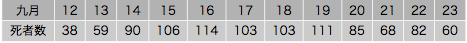
表Ａ
以前の総合保健局は、ニューカスルのコレラ流行において、純粋な泉の水を使ったときと水道会社とを比較するように、医学調査官の１人であるウォラー・ルイス博士に指示した。残念なことにこの調査は完了しなかった。ニューカスルおよびゲイツヘッド全体の調査をするのは私がランベス、ニューウィントンおよびそのバラ（自治都市）で行ったものの４分の１のものであろう。ルイス博士はこの水道会社の書記であるメイン氏を呼んで、３つの街路およびグリーンハウ・テラスをランダムに調査した。後者はコレラが激しく起きていて、この水道会社から給水されておらず、良好な泉水があると云われていた。ルイス博士は調査を諦めた。物理的条件、すなわち泉の水を供給された所と、会社が水を供給した所で、完全に似た場所が見つからなかったからである。彼は行ったことの報告を行わなかった。しかし、メイン氏は手をつけた調査をニューカスル・病理・学会に送り、メディカル・タイムズ・アンド・ガゼットにその抄録が掲載された。グリーンハウ・テラスを会社が部分的に供給した街路に加え、致死的その他のコレラの病例と単純な下痢を一緒にして、メイン氏は見たところ会社の水が良いような結果を示した。しかし、彼は御親切なことに行った限りの調査の詳細を含む彼の論文コピーを私に送ってくれた。これを熟読すると、会社から水を供給されているグリーンハウ・テラスを除外すると、会社の水を供給されていない如何なる家にも、致死的その他のコレラの例が存在しなかった。すべての死亡およびすべてのコレラは会社の水を受けた家で起きていて、ポンプの水だけの家では単純なコレラだけだった。この水道会社が水を供給している救貧院は540人の収容者で、コレラ患者またはコレラに近づいている例が12例であり７人が死亡した。ところが構内の井戸から供給している兵営には590人がいたが、害が無い下痢はかなりあったが、コレラもコレラに近付いている例も無かった。
水によるコレラ感染はモスクワの例によってよく示されているだろう。この市は1830年にコレラの厳しい襲撃を受けたが、第２の流行（＊1847年？）のときにはあまり厳しい襲撃を受けなかった。1830年以降にこの町のモスクワ川の北側に位置する大きな部分は遠くの泉からパイプで運ばれた良質の水を受けていた。そして1847年のコレラは主としてモスクワ川の南側にあり新しい水供給を受けておらず人々はまだ不純な川の水だけを飲んでいる地区に限られていた(22)。
上の諸例は飲み水の汚染がコレラ蔓延に及ぼす広範な影響を示すのにたぶん充分なものであろう。
戸籍本署長官が今年の10月14日の「週報告」でロンドン南地区における汚染水の影響について極めて結論的な研究を述べているのに続いて、殆どすべての医学雑誌(23)が社説として取り上げ、コレラによる死亡に水が影響することを完全に認めている。従って、この水の影響が医師たちによって一般にかなり認められていると結論しても安全であろう。しかし、一般的に言って水を飲むかまたはその他の方法で病的物質によって人から人へこの病気が実際に伝染すると医師たちが未だ信じていないことを、疑装されてはいけない。ある病気には３種類の原因があると医学著者たちは言う習慣があった。すなわち、素因（predisposing）、励起（exciting）、直接原因（proximate）の３つである。直接原因はこれら病気そのものなので諦められた。しかし著者たちは今でも原因を素因と励起の２つに分けている。しかし梅毒や痒みのように原因が完全に判った伝染性の病気を取り扱うにあたって素因は決して述べられない。そして天然痘、麻疹、猩紅熱を取り扱うときには稀にしか述べられないが、種々の連続性発熱を説明するときには問題にされ続ける(24)。さて多くの医師たちはコレラの蔓延における汚染水の影響を認めてはいても、これは素因または大気やどこかにある未知の病気の原因が身体に作用するための準備であると信じている。しかし、他の理由のうちで次のことが言えるであろう。意見はここで止まるものではなく、汚染した水の影響が認められると、この病気の真の特異的な原因がこの中に含まれていて作用するという結論に導かれなければならない。
ロンドン南地区の調査において、とくに女子召使や若い男で田舎からサザック・アンド・ヴォクソール社の水を受けている家に来て数日のうちにコレラで死亡した幾つかの例に出会った。ウォータールー・ロード（第２）の登録担当者はこの点について今年８月26日に次のように言った。――「これは患者が最近に田舎から来て致死的なコレラに罹った３回の続けさまの例である。同様な例は登録担当者の注目をひいている」と。これらの例が起きた家は上記の会社の水を引いていることに気がついた。前のページで話したバルト海艦隊の例（「1854年コレラ流行の最初の４週間についての調査の結果」の最後から２節目）は汚染した水が船に載せた48時間以内のことであった。そして最後に、もしも汚染した水が単に素因であったり身体が他の何かの原因によって作用されるための準備であるとしたら、それを飲んだ殆どすべての人たちが同時に襲撃されたり、ポンプ井戸またはその他の限られた供給が汚染されたときに周囲の人口に病気の増加が起きないことを、説明することは困難であろう。
コレラが水を経由して伝染する事実のすべては、私が出発した次のようなことを確認している。すなわち、貧しい人たちの過密な住居、炭坑その他において起き、患者の排泄物で汚れた手を介し、これらの排泄物の少量を食物とともに飲み込むことを介することである。これは家屋ペンキ屋が不潔な習慣によって鉛疝痛にかかるのと同じである。
私が確立しようと努力しているコレラの伝染様式へ注目する価値がある１つ２つの反対がある。ピアス氏とマーストン氏は1853年にニューカスル無料診療所で所員の１人が誤ってコメのとぎ汁様排泄物を飲んだが何の障害も無かったことについて述べている(25)。この否定的な出来事への返答として、コレラの伝染には我々がまだ知らない幾つもの条件が必要であると、答えることができよう。他の病気ついて幾つかの条件の必要なことを知っている。梅毒は初期のみに伝染することを知っているし、牛痘リンパはしかるべき効果を果たすには特定の時期に採取しなければならない。上に述べた事件では大量の排泄物を摂取したのがその作用を防いだのかも知れない。忘れてならないのは病的毒の作用は身体に最初に入ったものによるのではなく、潜伏期と呼ばれる増殖の時期に作られた収穫物というか子孫が原因になる。そして１袋の穀物または何らかの種を土地にあけた１つの孔にいれたときには収穫物が得られることは疑わしい。
最近ミュンヘンで行われた討論でティールシュ博士はコレラ排泄物が最初に病気を起こす能力は無く、その中で分解が起きて６日から９日でコレラを起こす状態になる、と言っている。彼はシロネズミに少量の排泄物を与える実験をしてこの意見を得た。コレラ毒が１人から次の人にはいる間に何かの変化または発展が起きることは、すべての類似性と矛盾するものではないが、ティールシュ博士がシロネズミに起こした致死的な腸管疾患は特異的な病気（＝コレラ）ではなく腐敗したものを食べたときの普通の結果である可能性が大きい。コレラ伝染のよく調べられた例の多くは、この著作の最初に述べたように患者は他の患者にちかづいてから24時間から48時間のあいだに罹患し、この病気の１例と次の例の間は１週間ほどかかることが多いが、これらの例では排泄物は汚れたリネンの上で固まって殆ど何の変化も受けない。
水を介するコレラの蔓延にたいして繰り返して行われる反対は、その水を飲んでいる人たちがすべて一度にコレラに罹るはずである、ということである。この反対は、コレラの伝染をそれが疑いなく属する自然史（＊博物学）の問題とみなすことなく、科学の分類を間違えて化学の問題としていることによる。しかるべき環境では同じ種類のものを増殖させる性質を持っている病毒が化学的な塩と同じように水の中で無限に希釈できると考えることはできない。そして従ってコレラ毒がすべての水の粒子に同じように入り込むことができると思うべきではない。サナダムシの卵は疑いもなく下水を通ってテムズ川に入るが、コップ１杯の水を飲んだ人はすべて卵１個を飲み込むわけではない。コレラの病物質について、流行の種々の時期において川の中にある量だけでなく、タンクその他の容器に入れられているあいだに分解したり、アニマルキュール（小動物）に食べられたり、底に沈んで留まったりすることなど、他の多くの環境によって、飲み込まれる機会は影響されるであろう。ゴールデン・スクエアのブロード・ストリートのポンプ・井戸の例において、コレラ毒が裸眼でもよく見ると見える小さい白っぽい房に存在すると、これらは容器の底にすぐに沈殿するので、人によってはそれらを取り込まないで水を飲むことがあるかも知れない。
私が説明しようと努力する理論を確立するために他の理論に反論することは必要としない。私が入った分野には居住者が殆ど居ないからである。コレラの現象を説明するのに多分これまで存在していた最良の試みは、患者が周囲の空気に出した悪臭を他の人たちが肺に吸い込むことによる感染であろう。しかしこの見解は患者に近づいてもコレラに罹らないために必要な、いわゆる素因を支持者たちに大きく要求することが必要である。この見解はまたゴールデン・スクエアの近くで起きたような突然な激しいコレラ発生を説明するのに全く失敗した。
ある程度の支持者があるもう１つの見解は、ある場所に限界していて、腐敗している動物や植物の物質から排出されたガスによって強化される、大気中の未知のあるものに、コレラが依存するという考えである。しかし、この仮説は大気の運動および風が無くてもガス状の物体の拡散を支配する法則によって不可能となる。さらに、コレラと不快な悪臭のあいだには原因と結果を示すような関係は決して存在しない。前にも述べたように、ロンドンにおいてさえ、不快な悪臭は強いがコレラは軽く通ったところもあるし、ケニントン（ランベスの一部）やクラパム（南西部郊外住宅地）のように比較的に開放的で清潔な地域が激しく襲われている。もしも調査をしたら不快な悪臭と疥癬のあいだには悪臭とコレラのあいだよりもずっと密接な関係が見つかるであろう。しかし疥癬の原因は良く知られているので、この関係が原因と結果の関係でないことを我々は知っている。
シンシナッティのジョン・リー氏は彼がコレラの地理的理論と呼んでいるものを進展させた(26)。彼は病人の周囲に存在すると信じているコレラ毒は効果を発揮するのに飲料水中のカルシウムまたはマグネシウム塩を必要とすると考えた。この考えは我々がコレラについて知っていることとは一致しないがリー氏が述べているような状況は存在し注目する価値がある。彼が言うにはアメリカ西部ではコレラは砂地の地域を迂回してカルシウム地区に猛威をふるい、カルシウムの多い水を使っている人たちには致命的な効果をもって猛襲し、砂岩や軟水を使う人たちを通り過ぎる。彼は川水を使うと激しく苦しみ、それにたいして軟水の泉水か雨水しか持たない人たちは殆ど完全に逃れている、多くの町の例を与えている。そして雨水しか使わない家族には殆どコレラの例が無いと述べている。川は排泄物で汚染するだろうことは明らかであり、雨水がそのように汚染しないであろうことは同じように明らかである。砂およびすべて砂岩の構造物について言うと、それらは酸化の効果を持ち、有機物を分解することがよく知られている。これにたいして石灰岩はこのような性質を持たないかも知れないが、私はこの点について経験が無い。リー氏が与えた説明とは非常に違う説明を認めることができるであろうが、彼の観察したコレラと水の関係は極めて興味深い。
コレラの歴史に関係する幾つかの状況を上に述べた原則に従って満足な説明を行い、それによってこれらの原則を立証する方向がある。私が気づいた最初の点は、種々の場所において流行の続く期間は伝染の様式に依存するのではなく、単にこの病気の伝染性に関係することである。ある場所におけるコレラの継続期間はふつう人口数に正比例する。コレラはむらでは２−３週間のみ続き、適当の大きさの町では１−２月、大きな主要都市ではしばしば１年かもっと長い。メリマン博士のイングランドにおける1832年のコレラについての価値ある表(27)を1849年に解析したところ、コレラが50日以下しか続かなかったところは52箇所であり、これらの平均人口は6624人であった。同じようにしてコレラが50日は続いたところは100以下であり、平均人口は12624人であった。そして流行が100日以上続いたのはロンドンを含めないで33箇所あり、平均人口は38123人であった。もしもロンドンを含めると34箇所になり平均人口は78823人になる。次の短い表はこれらの数値をもっと便利な形にしたものである。
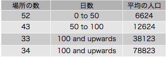
表Ｂ
コレラの継続期間とその襲った場所の人口とのあいだに1849年に同じような関係があった。この病気が患者から患者に拡がることを明らかに指摘している関係であった。もしもそれぞれの例が前のものと関係していなくて、何か未知の大気または土地の条件に依存しているとしたら、村で起きる20例が大きな町で起きる200例と同じように長いあいだ分布すべきでない理由は無い。
ある街路で起きるコレラの継続期間ですら、個々の家についての継続期間と比べると同じ結論を指し示している。ミュンヘンにおける最近のコレラについての討論において、１つの表が示された(28)。これによると数人が罹患するときに街路では流行が３−４週間も続くのに住宅では６−７日しか続かないことを示している。ペッテンコーファー博士は述べている。「もしもこの病気の直接原因がある数の街路またはある地区に一般的に拡がっていたとし、その侵入は個人の素因のみによって抵抗されるとしたら、病気の件数および死亡の例は、多くのこのようなものが同時に出現し全街路を通して同様な期間に一緒に起きるところの、単独の家々で起きることが予想されるであろう。しかしこの病気の直接原因が一般的なものではなく局地的なものであったら、個々の家で起きる病気の継続期間は街路全体に適用できるものと非常に違うであろう。」１軒の家における局地的な原因は我々の知っているところでは個人の病気であり、多くの場合にコレラが流行しているある場所から新しく到着した個人である。
コレラが秋にイングランドに入ってきたときいつでも、冬および春には盛んにならず、ほとんど進展せずにぐずぐずしていて、次の夏に徐々に増え、夏の終にクライマックスになり、秋の寒い日になるとある程度急速に減少する。スコットランドの大部分ではこれと異なり、導入されていつでもその冬に直ぐに走り初める。このようなコレラの進展についての主な特異性について私が説明になると思うものを提供しよう。イングランドの人たちは一般規則として暑い天候のときを除いて煮沸しない水を飲むことはない。彼らは一般に紅茶、コーヒー、麦芽酒、その他の人工的な飲み物を食事中に飲み、天候が暑くないときには食事と食事のあいだに飲むことはない。しかし夏にはもっと多量の飲料を要求し、寒い天候のときよりも水を飲むのがもっと普通である。従って前にも述べたように何時でも互いの排泄物を食べ合っている貧しい過密な家族や炭鉱夫たちではコレラが主として冬に限られるのにたいし、川があってそれが下水を受け取ると同時に水を供給している町の人たちにコレラは夏が進むと近づく。そしてポンプ井戸その他の限られた水供給が排水や汚水溜の内容で汚染されると、煮沸しない水をふんだんに使う時期にこの病気は拡がる機会を得る。
これにたいしてスコットランドではあらゆる時期に煮沸しない水を蒸留酒に混ぜてふんだんに使う。私が聞いたところでは、スコットランドでは２−３人が酒場に入って４分の１パイントのウィスキーを注文すると、水差しとタンブラーを持ってくるそうである。スコットランドでは麦芽酒の消費はかぎられており、彼らは蒸留酒を水無しに飲むこともしばしばであり、そのときには喉が乾き、後になって水を飲まなければならなくなる。
コレラが寒い時より暑い時に蔓延するのを助けるのは上にのべたこと以外にも他に原因がある。昆虫とくにイエバエがこの病気を広めていないとは考えられない。工夫に富む友人が私に話してくれた。イエバエを毒殺するために部屋にカシア（強壮剤、殺虫剤）の抽出液を置いたところ、１度ならず彼のパンとバターにその味があったそうである。
ファー博士はコレラ流行の異なる時期における死亡者の性別について非常に重要な情報を提供している(29)。
「強調する価値があることとして、コレラ流行の初期に男性の死亡は女性の死亡を非常に大きく上回っている。1848年の10月、11月、12月に男性の死亡者は612人であり女性は493人であり、比は100人にたいして80人であった。……
「一般法則として、コレラによる死亡が非常に高い割合になると、女性の死亡数は男性よりも高くなった。
「ロンドンにおいて流行の経過によって性別の割合が顕著に変化した。1848年10月の４週間には男性80人と女性42人の死亡が登録された。その年の最後の13週間では男性258人女性210人の死亡が登録された。そしてすべての年齢において男性が多かったが、しかし特に15−25才の10年間で顕著だった。1849年の３月で終わる四半期で男性の死亡者は250人で女性は266人であった。25才およびそれ以上では女性の死亡者はかなり多かった。６月に大発生の初めにあたり男性の死者は再び最高であった。７月の終わりに近づくと女性の死亡者は男性よりも多く月末まで続いた。死亡者が最高であったその週には男性895人、女性1131人を報告した。９月四半期で25才以下の男性死亡者は女性の死亡者を越えたが、その年令以上では比率が逆転した。」
女性人口の大部分は殆ど常に家に居て食事を家で取るのにたいして、男性のかなりの数は職業によって動きまわり、食事も飲み物も種々の場所で取る。従って、流行の初期でコレラが幾つかの場所だけに存在するときには、人口のうちで男性はコレラの病毒に接触することが多い。しかし流行の後の時期になりコレラがもっと全般的に広がると、家に留まっている者にも動きまわっている者にも同じように接触することになる。女性は男性と同じようなリスクを共有する他に、病人を看護する追加的なリスクを持っている。
ある水道会社のパイプを通ってコレラ毒が送られているときには、上の規則は成立しないで、たぶん女性は男性よりもビールを飲む習慣が少ないので従って水を飲むことが多いので、反対の規則が成立する、ということはこの考えを裏付けるものである。この論文の補遺に詳しく書かれている334人の死者のうちで147人は男性で187人は女性であった。最近の流行において最初の４週間にこの死亡が起きた。他方、この期間においてロンドンの残り全てで起きたコレラによる死亡者229人のうちで149人は男性で89人だけが女性であった。この時期におけるロンドン全体の死亡率をとると、男性の方が少しだけ多い。数値は男性287人、女性276人であり、全体が563人であった。
1949年イングランドにおけるコレラによる死亡者は53293人で、この中で14718人すなわち全体の27パーセントが15才以下の子供である。この論文の補遺に記録された334人のうちで127人、すなわち38パーセントは15才以下の子供であり、流行の最初の４週間にロンドンの残りで死亡した残りの229人のうちで61人だけ、すなわち26パーセントが15才以前であった。すなわち、1849年の全イングランドにおける割合とほとんど同じであった。テムズ川のバターシー・フィールヅの汚染した水を供給された家々の子供のあいだで死亡の割合が高いことは、たぶん子供たちが暑い時期に水を飲むのを非常に好んでいる状態によるのであろう。私はロンドン南岸地区における調査をしているあいだに、しばしば次のような発言を耳にしていた。「私の子供たちは紅茶よりも何よりも水が好きで、水桶に近づけさせないわけには行かなかった。」とか「死亡した子供はあの水を大量に飲む習慣があった。彼女は充分に背が高くて自分で桶に届いた」、と。
キングズ・カレジ病院医師のガイ博士はロンドンで1848-49年のコレラ流行で死亡した15才またはそれ以上の男子4312人の職業を示す表を作成した。死亡者者と生存者の比率を伴っていて生存者は1841年の国勢調査で確かめられたものであった。全部の表を示す場所は無いので、もっとも災害のあった職業と最小のものとを抜き出すことにした。次に示すガイ博士の表からの要約（表14）には生存者数の50分の１以上の死者があったすべての職業と、死者が生存者の250分の１以下であった職業を含んでいる。
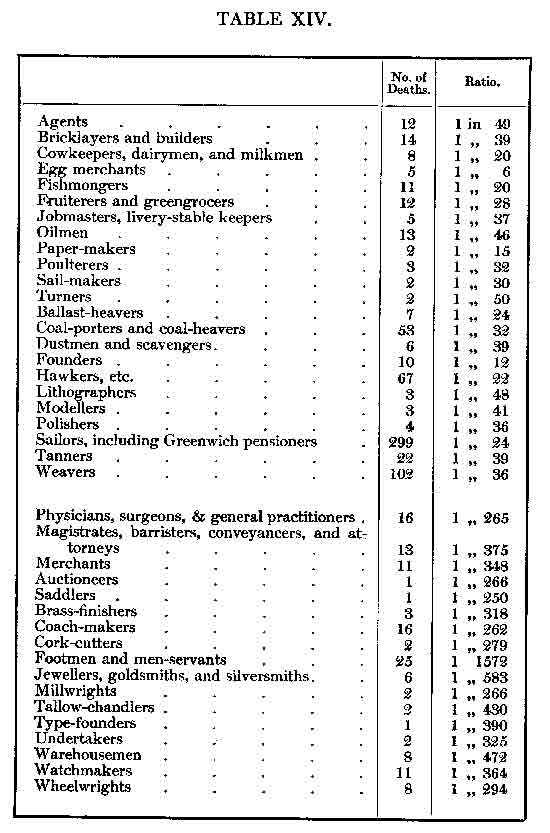
表14
死亡者の比率が高い職業で生存者があまりにも少なくて信頼できる統計結果を出すのが困難なものがあり、死亡者の相対比率はたぶん職業とは全く関係しない突発的な事情によることを示す手掛かりであろう。しかし、ある場合に数値はかなり大きくて突発事故以外の何かを示していると考えられる。例えば299人の水夫は推定されるこの職業の全員の24分の１である。７人の荷物上げ人夫はこの職業の全員にとって丁度同じ割合であり、53人の石炭運びと石炭上げの人夫はそのように雇われたものの32分の１である。さてこれらの人たちが生きていてテムズ川で雇われていたなら、船の脇から桶で水を汲んで飲む習慣だったろう。67人の行商人は全員の22分の１であった。これらの人々は絶えず動きまわり、混んだ簡易宿舎に泊り、その結果どんな伝染病にも極めて罹りやすいことであろう。皮鞣し職人はほとんどすべてバーモンジー（サザックの一部）またはランベスに住んでいて、前にも述べたように1849年には非常に汚染した水以外には供給されていなかった。織り工たちはスピタルフィールヅのアパートの過密さや不潔な習慣によって死亡率が高かったのであろう。
男性人口のうちでコレラによる災害を少ししか受けなかったのは従僕と男性召使だったろう。この病気にこれ以上に暴露されなかった階級を考えることはできない。彼らはロンドンの最高の部分に住み、彼らの主人たちに比べて家から出ることはない。医師たちと葬儀屋の死亡率の低いことにも注意しなければならない。もしもコレラの感染性を信ずる人たちの意見のように患者や死体の発生する悪臭で蔓延したり、他の人たちが感染地と呼んでいる所に潜んでいる悪臭によるものであるとしたら、どちらにしても特に医師たちや葬儀屋はこの病気に罹りやすいことになる。しかしこの本で説明した原則によると、これらの職業が特にこれらの人たちをこの病気に罹りやすくする理由は無い。
ガイ博士の表（表14参照）に関連して１つの興味深いことがある。１人の醸造者の親方がコレラで死亡した。彼は160人の同業者のうちのただ１人であった。しかし醸造者すなわち醸造下働きはこの病気で死んだとは書いていない。しかしこのような人たちはロンドンに多数いる筈である。たぶん数千人はいるだろう。実際のところ1849年の最も死亡者が多かったときの登録者の報告を見ていて、２−３人は書いてあった。しかし1949年も最近の流行のときも醸造下働きは非常に少ししか災難に会っていないようである。多分この理由は彼らは決して水を飲まないのでその媒体に入っているコレラ毒を飲まないで済んだのだろう。
コレラの大流行が川の道筋に沿って起きることは四半世紀ほどよく知られていた。そしてこのことは私が教え込んでいるコレラ伝染の様式の充分な説明によくあっている。川はいつでも岸に住んでいる人たちの廃物を受け取り、同時にそこに位置している地域共同体に飲み水を供給している。流れと同じ方向だけでなくしばしば逆らって疫病の起きることから、川の水による病気の広がりに反論があることもある。これにたいする回答は、人々が旅するのは川に逆らうこともあり同じ方向のこともあり、従って病気を村から村へ町から町へ運ぶ。それにたいして、水は病気をそれぞれの場所に住んでいる人たちのあいだに広げる媒介物として作用し、そのようにして新しい犠牲者に届かないことによって終わってしまわないようにしている。
私が主張した原則は排水が無いことが、コレラの蔓延を推進すること、およびコレラが自然のままの岩、砂岩、または砂利よりも粘土の土地で盛んになること、を促進する状況の、満足できる説明を与える。排水があると住民の廃棄物は土地に染みこみ、ポンプ井戸に入り込む。人口52863人のマーサー・ティドヴィルは全く排水系が無く、人々は水の供給をポンプ井戸に頼っている。この場所はコレラ流行の度に酷い目に会ってきた。1842年にここで1682人の死者があった。これは住民１万人あたり234人であり、コレラの病毒が水道会社の蒸気エンジンによって配られたハルやロンドン南岸のある地区と同じように高い死亡率である。自然のままの岩、砂岩、砂利、は一般に有機物を分離したり酸化することによって水を浄化するが、粘土はこのような健康に良い影響を同じように及ぼすことはない。
1848年の後半以後に、コレラの伝染様式について私の現在の結論に達したときに、ますます私は多くの他の病気も同じように蔓延すると確信するようになった。
ペストがこの国に来たときに、ロンドン、ヨーク、ウィンチェスター、その他真水の川が通っている町が最も死亡率が高かった。テムズ川の南岸は北岸にくらべて２倍も高かったことでコレラに似ていた。次の文章はストウが1633年に刊行した「概観」でペストの大流行のときのサザックの水供給を示している。「サザックは主としてテムズ川の水を使っていて、聖メアリ・オヴェリーズの大池に注ぎ、これは聖セイヴィアズ水車を回している。この水車の持ち主はガルストン氏である。これによる収入は１年あたり1300ポンドと思われる。」
ザ・シティ（ロンドンの金融中心）のある低い部分は16世紀の後半および17世紀を通じて水をテムズ川から供給されていたが、テムズ川北岸の大部分は貯水池および泉の水を遠くから引く導管によって供給されていた。ロンドンの導管についての次の風変わりではあるが詩的な記載は非常に面白いものである。「自然が、あるものは大きくあるものは小さい、静脈と動脈によって、身体のすべての部分を上がったり下がったりして、身体のすべての部分に血液を役立たせている、のと同じようなことである。血液は身体が好適で健康であるために必要なように、静脈と同じように、木や金属のパイプによって、ロンドンのために必要な健康に良い水は、この有名な市のすべての部分に運ばれる。……実際にこれらは愛らしい流れであって、あの高貴な市を活気づけ、他のものは静かに横たわっているときに１つは常に水を注ぎ出すように働いている。ロンドンのこれらの幾つかの導管は然るべき場合には、数が多い小さな堡塁として大きな敵である火事に立ち向かっていると私は思っている（methink）。ここで私は思う。この水は塹壕を掘り、守備についている、と。これらの導管の中の幾つもの水のパイプと伝達装置には、コックを捻って再び出すまですべて水が詰まっていて、ちょうどこれらの堡塁の兵隊がマスケット銃に弾丸をこめてこの場所を保持し守っているのと同じである。そして敵（＊火事）が如何にこれらの城を攻撃しているか見てごらんなさい。彼らは城を難攻不落であるとし、入り込むのを諦めている。――それで火事はこれらの小さな石の城に働きかけるが、燃やすのは容易でなく（現在でも残っていることが証明している）差し当たってのところ、水を運ぶ鉛管を融かすことによって、流れこむ通気口のある水の供給を切断して、攻撃によって負かすことのできない兵隊を、あたかも飢えさせることによって、台無しにするか殆ど台無しにした。火事と反対の元素を伝えるために、威厳および勝利のようにタンカード（ジョッキ）を肩に担っている、男の女の貧しい担い手にたいして火事が怒っているかのように、彼らの商売をダメにすることさえ敢えて行い、水によって生きているのを常としている彼らを駄目にすると脅かしている(30)。」
ファー博士は1848-49年のコレラについての報告でペストについて次のように述べている。「これはナイル川のデルタの風土病（endemic）であり、周期的にカイロおよびアレキサンドリアの人口の多くを殺している。……ナイル川の上流になると次第に致死性が低くなり、上エジプトでは下エジプトよりも、高地および砂漠では地中海海岸の低地よりも、頻度や破壊力が低い。」カイロについて彼は言っている。「その中央にはグレイト・カナル（大運河）が通っていて、その中に下水は死肉、排出物および泥の上に放出される。毎年起こるナイル川の氾濫でその水は運河を満たしてカイロ市の上に広がり哀れな住民たちはそれを飲む。」
ペストは過密および個人の清潔欠除によって促進される点でコレラに似ている。英国領インドの北西にあるガルワールにペストは最近30年も定着し、ここの先住民はペストがある場所から別の場所にギー（液体バター）のジャーのような食品によって運ばれると信じている。
Ｍ・ウィリアム博士その他が伝染病であることをはっきりと示した黄熱病はコレラおよびペストと似ていて、一般的原則として、低い沖積層の土地でよく盛んであり、そしてまた個人的な清潔が欠けているところで大きく拡がる。これはラプラタ川（＊ウルガイとアルジェンチンの間の大河：河口にブエノスアイレスがある）を遡行する船で何回も岸と何かの連絡がなされる前に出現した。このような状態は船の舷側からラプラタその他の町の患者の排泄物を含むこの川の水を汲み込んだことによるのであろう。（＊黄熱病は経口伝染病ではなく蚊により媒介される。）
かなり以前から赤痢が排泄物を含む水で蔓延するようであることが観察されていた(31)。ミルバンク・プリズンでテムズ川の水が使われていたときにこの病気がしばしば出現することはこのことの裏付けであった。最近ブライソン博士は赤痢と発熱の出現例を揚子江、珠江、その他のシナの川で関係づけた(32)。この観点を非常に裏付けているのは、ほとんど全ての患者が多くの腸管寄生虫（lumbrici）によって苦しめられていることであった。何となれば、マラリア（＊古語で毒気の意。病名の訳語はマラリア熱にした）、瘴気（miasmata）やその他のしばしば赤痢および発熱を起こすと信じられていた原因によってこれらの寄生虫が起こるとは考えられないからである。これらの寄生虫の卵は人口が過密なシナの川の水に大量に含まれていることは疑いもないからである。
少なくとも稽留熱（continued fever）の１つである小腸に潰瘍のある腸チフス（typhoid fever）もまたコレラと同じように蔓延する多くの事実がある。ジェンナー博士（W. Jenner：1815-98）がしばらく前にＮＹ州・エリー郡・ノース・ボストン村において腸チフスが幾つかの家族において彼らが使っていた井戸水から伝染したであろうことに私の注意を喚起した(33)。クロイドン（ロンドン南部）で２年前に起きた激しい流行がこれと性質を同じくすることは、サンキー、ジェンナー、Ａ・Ｐ・ステュワート博士らからなる疫学学会の委員会によって確かめられた。最近、クロイドンのカーペンター氏はこのコレラ流行が地区の保健部による下水の運営に伴う土地および多くの古い汚水溜の変化によるポンプ井戸の汚染に関係することを非常に有能に示している(34)。保健部は石灰層の深い井戸から町に良質の水を供給したが、住民たちはこれにたいして偏見をもち、浅い井戸の水に頼り続けた。昨年の秋にクロイドンでは下痢が広がり、カーペンアー氏はこれもまた（＊浅い）ポンプ井戸の不純な水によることを見つけた。クロイドンの人々の10分の９は保健部により供給された新しい水を飲んでいたが、カーペンター氏が注目した下痢になった32人の患者のうちで25人は全く井戸水を飲んでいて、５人は両方の水を飲み、他の２人は井戸水を飲まなかったと決定的に言うことは出来なかった。
間欠熱（intermittent fever：平熱と高熱が交代する熱型。マラリア熱に見られる）の類は特別な場所に固定していて風土病（endemic）と名付けられているのは当然のことである。しかし、これは時には通常に起きる場所以外にも見られるようになり、流行病（epidemic）となる。間欠熱は疑いもなくしばしば土地の沼地状態と関係する。土地を排水させるとしばしば間欠熱消失の原因になるからである。しかし間欠熱はときには数マイル以内に沼地や淀んだ水が無いのに風土病として存在することがある。17世紀の終わりに近くなって間欠熱はランチーシ（1654-1720）によって沼地から出る有害な悪臭によるものとされた。これらの想定上の悪臭は後に沼地瘴気と呼ばれるようになり植物質や動物物質の分解によって生じたものと考えられた。しかし間欠熱が分解している植物質や動物質の無い多くの場所に広がるようになって、この意見は広い範囲で認められなくなった。しかし瘴気またはある種のマラリア（古語）は間欠熱の原因として今でも非常に一般的である。しかしマラリア（古語）または瘴気が存在する直接の証明は存在せず、それらの本性はさらに知られていないことを認識しなければならない。
土地の排水によるマラリア熱の予防は大気に作用するだけでなくその地区の水に影響し、ある場合にはいずれにしても沼の水を飲むのが間欠熱の原因であることを証明する直接の事実が存在する。「大英帝国における衛生状態についての『貧困法委員会委員』の一般報告」(35)でベドフォード（イングランド中部）の外科医であるＷｍ・ブロウアー氏はベドフォードの近くのウートン村に流行していたチフス（＊腸チフス？）およびマラリア熱が幾つかの井戸を掘って良い水を得るようになってずっと減少してきたことを述べている。彼がさらに言っていることとして、近くのホートン教区においてある時にマラリア熱を免れた唯一の家族は井戸水を使っていた豊かな農場主の一家であり、すべての他の家族は溝の水だけしか無かった。
ムシュー・ブダーン(36)は間欠熱および見たところ弛張熱（１日のうちに１度以上の体温の高度差はあるが平熱には下がらない熱型）もまた沼の水を飲むことが関係すると述べている。次のようなことである。
1834年７月にすべて健康な800人の兵士が同じ日にアルジェリアのボナで３隻の輸送船に乗船し、一緒にマルセイユに到着した。彼らは同じ大気の影響のもとにあり、１つの本質的な差を除いて同じ食物を供給され、同じ規律に従っていた。１隻の輸送船に乗っていたのは120人の兵士であった。このうち13人は破壊的な熱（＊意味不明）によって途中で死亡し、その他の98人はマルセイユの検疫・軍病院に収容された。全ては沼地区域に特有の病的性質を示していた。これらの患者の顔つきをみると、全くマルセイユで普通のものではなく、メキシコ湾、ガンジス川デルタ、セネガル（アフリカ西部）およびオランダ（＊？）の沼地からの乗客のようであった。短く言うと単純な間欠熱と並んで悪性の熱が存在した。調査を行って確かめられたことに、病人が出た船に乗るにあたって兵士に供給された水は、出発を急いだためにボナ近くの沼地から汲んだものであった。これにたいして１人も病気にならなかった乗組員は健康的な水を供給されていた。さらに判ったこととして、病気にならなかった９人の兵士は乗組員用の水を購入し、その結果として沼地の水を飲んでいなかった。他の２隻の輸送船の兵士や水夫は純粋の水を供給されていて、そのうち１人も病気にならなかった。」
上記の状況をコレラ報告の補遺に書いたグレインジャー氏はまた次のようなことも言っている(37)。「ベドフォードのエヴァンス博士は同じようにはっきりとした例を話してくれた。数年前に彼は夫人とともにヴェルサイユに宿り、マラリア熱に罹ったことがあり、調査すると次のことが判ったそうである。ヴェルサイユの町は家事のための水をセーヌ川からマルリで得ていた。問題のときにある特定の地域に水を供給する大きなタンクが壊れて町長は医学当局に相談せずに沼地の性格を持つ周囲の土地の開放排水系から水の供給を受けた。ふつうの住民たちはこの汚染された水を飲むことはしなかったが、エヴァンス夫妻はホテルに居て気がつかずにこの水を飲んだ。これはまた騎兵連隊も使った。その結果としてこの水を飲んだものは激しい間欠熱にかかり、その結果、兵士のうちの７人か８人の優秀な若者が1845年９月１日に死亡した。注意深い調査によって、沼地の水を飲んだ兵士だけが病気に罹ったことが判った。他のものは同じ空気を呼吸していても罹らなかったし、町の人たちも同様であった。」
私が引用したばかりのすべての例において、マラリア熱の原因は何であるかは別として水とともに飲み込んだものであって空気とともに吸い込んものではない。そして、ケント（イングランド南東部）で収穫を終えた後でこの病気に罹った２人に聖ジョージ病院で質問したときに、彼らは水路から水を飲まなければならないことがあると話してくれた。間欠熱の後で２人が罹っている肝臓と脾臓の病気もまた、病毒が入ったのは消化管からであって肺からでないことを立証している。そして、澱んでいる水を飲むと脾臓が固く腫れるとヒポクラテスの言ったことは強調する重要性がある(38)。
マラリア熱の未知の原因が天然痘の膿やサナダムシの卵のように前の患者の体内で作られるか、それとも外で作られるかは、現在のところ充分な事実を示すことができない。最初に考えた例では病気は伝染性のものであろうし、次のは違うだろう。
間欠熱の特異的な原因が患者の体内で発達または増殖していることを示しているように見える状況が存在する。これは、潜伏または
マラリア熱が人から人に伝染することは観察されていないし、この病気が伝染性であるとしたら、間接に伝染するのであろう。何故かというとある患者から取り除かれた病物質（materies morbi）は他の患者に入る前に身体の外で発達するか増殖する必要があるからである。これはある種のサナダムシがある種の下等動物ではびこり、別の世代によって増殖するのと同じである。
コレラおよびコレラと同じように伝染するすべての病気を予防するのに必要な方策は非常に簡単なものである。その予防法は、流行が起きているときに行うべきものと、時間がかかるので前もって行うべきもの、に分けられる。
コレラが存在するときに採用すべき方策は次の通りである。――
第１。病人について最高の清潔状態にする。コレラ患者がいるすべての部屋に手洗い盤、水、タオルを起き、看護婦その他の付き添いはしばしば使うようにし、特に何らかの食べ物に触れる前に使うことにする。
第２。患者のベッドや衣類の汚れたリネンは取り除いたら直ぐに洗うまでに水につけて、排泄物が乾いて細かいゴミとして漂うことがないようにする。ベッドや衣類の洗うことができないものは212度（沸騰点）またはそれ以上にさらすようにする。
第３。飲んだり食物を調理するのに使う水（ポンプ井戸からのもの、またはパイプで送られたもののどちらにしろ）は汚水溜、家の排水、または下水で汚れていないように注意し、もしも疑いのある水しか得られなかったら、よく沸騰させ、可能なら濾過する。
ランベス社のようにテディントン閘門の上でテムズ川の水をロンドンの多くの部分に供給する工事が進行している。これは大きな町に可能な限り最良の水の供給源ではないが、多くの水道会社が実行することとして大きな改良である。そしてこの水は濾過および特に大きな貯水池に留めておくことによって、多分全く健康的になるであろう。ともかく、この水は非常に汚染した水源から供給されている浅いポンプ井戸よりもずっと安全であろう。ロンドンその他の大きな町の街路ポンプのハンドルには鍵をかけて道に水を撒くような目的だけに使うのが望ましい。テムズ川を航行する船への適当な水供給が必要である。水は煮沸すると味が無くなる。しかし冷えてから濾過すると空気が入り込み、味のないような気の抜けた味は完全に取り去られる。
第４。コレラが近所に大いに広がったら、家に持ち込む全ての食品はきれいな水で良く洗い、華氏212度の温度に曝す。または少なくともこれらの過程のどちらか、水か火によって浄化する。手を注意深く洗い、食物について充分な注意をはらうことによって、人は何の危険にさらされることなくコレラ患者のあいだで過ごすことが出来ると私は考えている。
第５。密集した部屋に住んでいる人たちのあいだでコレラまたは他の伝染病が起きたら、健康者は他の部屋に移して可能な限り病人の世話をする人だけを残すようにするべきである。
第６。炭坑を綺麗にし中に便所や手洗い場を作るのは困難であり、常識的に上品に食事をする方法を準備することはさらに出来ないだろうから、労働時間を８時間ではなく４時間を２回にして、坑夫が食事をとるために家に帰れることにして、坑内で食べ物をとらないようにする。
第７。コレラの伝染性の知識がパニックの原因になったり病人を見捨てたりしないようにといって、これを人々に隠すべきではない。
英国人たちは患者の世話をすると危険であるからといって、病気の友達や親戚を見捨てることはしない。しかし本当のことを言うと、コレラが「伝染性」の病気であって、幾つかの簡単な用心をすると我々すべてが漬かっていて呼吸しなければならない大気のある不思議な状態によると考えるのに比べると、ずっと落胆させることが無い学説である。
前もってコレラおよび同じように伝染する他の伝染病にたいして次のように準備することができる。――
第８。最良で完全な排水をすること。
第９。下水、汚水溜、家の排水、または川を航行している人たちの廃棄物で全く汚染されていない水を充分に供給すること。
第10。放浪者たちのための模範的な簡易宿泊所や一般に貧しい人たちのための充分な家の部屋を準備すること。
標準的な簡易宿泊所が大きく役に立つことは、調理、食事、睡眠のための部屋がはっきりしていることであり、清潔および体面のために必要なしかるべき家事室のすべてが準備されていることである。これらの施設を使う非常に貧しい人たちは最も富裕な階級と同じように低い死亡率になる。貧しい人たちが家族の個人皿や盛り皿や食品と一緒ではなく、病人や健康者の汚れたリネンを洗うことができる公衆洗濯場は、病気の広がりを防ぐようによく計画されている。
第11。至る所の人たちに個人的および家庭的な清潔の習慣を教え込むこと。
第12。病人を健康者から隔離するために、感染地からの人たちと特に船に特別な注意を疑い無く払うべきである。コレラの場合には一般に管理が長期間に及ぶ必要はない。
1853年の秋にあるドイツ人の移住者がアメリカに行く途中でコレラが流行しているハンブルクとロッテルダムから海を渡ってハルの港に着いて、そこから鉄道でリヴァプールに行き、この町で（あるものは致死的な）コレラに罹った。そして、この例が起きたのはその頃にリヴァプールがコレラに苦しめられなかったことに貢献したよく整備された移住者ホームにおいてのことであった。ある程度の医学的管理および移住者の一部を乗船の前にリヴァプールに留めておくことによって、幾つかの移民船がアメリカへの航海の途中で起きたことのある多数の死亡を防いだことであろう。
病気を防ぐための方策はその原因の正しい知識に基づかなければならない。この知識が無いとコレラに対抗するために行った努力がしばしば逆の効果を持つことになる。例えば1849年にロンドンの下水はしばしば水で押し流していた。この方策はコレラを次の２つの点で強めていた。すなわち、第１にコレラ毒を分解によって無毒にする前にコレラ排泄物をテムズ川に押し出すことにより、そして第２には下水に押し流すために種々の会社に水の要求を増やすことによって、諸会社が顧客に送る水を供給する前に短い時間しか貯水池に留めることが出来ないことになった。さらに強調しなければならないことは、干潮のときに下水の内容をテムズ川に押し出すと、４−５時間後に流れを上がり続けることである。最近のコレラ流行にさいして下水を水で押し出すことは繰り返して行われてはいないが、諸会社のあるものはしばしば水の量を増加させて、水タンクを何時間も溢れさせて排水に流して下水を押し出すのと殆ど同じ効果を果たしている。これに加えてサザック・アンド・ヴォクソール社の顧客の桶の水は稀にしか攪拌されたときと違って、異物の沈殿するときが無いことになる。
しかしコレラの原因についての正しい知識に基づく上に述べたような注意によって、この病気は文明国家から完全に無くならないにしても非常に稀になることを私は確信している。死亡率が下がるのはコレラだけに限るべきではない。チフスの名前で登録された死亡は主として前に述べた腸チフスである。これの犠牲者は主として成人であり、家族および関連ある人たちから取り去られる。1847年に20000人以上の死亡がイングランドでチフスとして登録され、1848年には30000人以上が死亡した。コレラがイギリスに最初に来たのは1831年のことなので、チフスによる死者は多分コレラによる死者の７倍ではないかと考えられる。そして、チフスの伝染様式の正しい知識に基づくしかるべき注意が払われることによって将来はこの死亡を防ぐことができると希望する大きな理由がある。
終わり
サザック・アンド・ヴォクソール社またはランベス社のどちらかの水供給があったすべてのサブディストリクトにおける、1854年８月５日に終わる４週間に登録されたコレラによる死亡者、および致死的な襲撃が起きた家への水供給、を含んでいる。死亡の記録は戸籍本署長官による週報告からコピーしたものである。
［＊全体で25ページに及ぶ死者のリストを本ファイルでは省略した：訳者］
(1) Report on the Epidemic Cholera, 1824, p.5
(2) On the Infectious Origin and Propogation of Cholera.
(3) See "London Journal of Medicine," May, 1849.
(4) London Journal of Medicine, loc. cit.
(5) In the so-called secondary fever there is toxicohemia, arising from suppressed excretion by the kidneys.
［いわゆる２次熱には腎臓による排泄障害による毒血症が含まれる］
(6) See "London Gazette", 18th Sept. 1849.
(7) See Report in "Med. Gaz.", vol. ii, 1849, p. 429.
(8) Edin. Med. and Sur. Journ., vol. xxxvii.
(9) Scot, "Report on the Epidemic Cholera", p. 237.
(10) The particulars of each death connected with this outbreak were published in the "Weekly Returns" of the Registrar-General to 16th September, and I procured the remainder through the kindness of the Registrar-General and the District Registrars.
(11) The deaths are obtained from the "First Report of the Metropolitan Sanitary Commission", 1847: and the water-supply, chiefly from a work entitled "Hydraulia", by William Matthews, 1835.
(12) A Microscopic Examination of the Water supplied to London. London: 1850.
(13) P. 207. In the table at page 206, Dr. Baly has fallen into the mistake of supposing that the Lambeth Water Company obtained their supply from Thames Ditton in 1849. It was not till 1852 that their works were removed to that place. Dr. Baly has also mistaken the name and identity of all the three Companies which supply the south districts of London with water.
［ページ206の表でベイリー博士はランベス水道会社が1849年にテムズ・ディットンから水を得ているとする間違いを犯した。会社の取水場は1852年までその場所には移っていない。ベイリー博士はまたロンドンの南地区に水を供給している３会社すべての名前と性質についても誤りをしている］
(14) Weekly Return, Oct. 14, p. 433.
(15) In 1849, there were forty-eight deaths from cholera in Millbank prison, amounting to 4.3 percent of the average number prisoners. In Tothill Fields prison there were thirteen deaths among eight hundred prisoners, or 1.6 per cent. The other prisons on the north side of the Thames are supplied either by the New River Company, or from pump-wells, and there was but one death from cholera in all of them; that death took place in Newgate.
［1849年にミルバンク・プリズンで48人の死亡があり、囚人の平均数の4.3%に相当する。トトヒル・フィールヅ監獄では800人の囚人中で13人死亡で1.6パーセントであった。テムズ川北岸の他の監獄はニュー・リヴァー会社、またはポンプ井戸から供給されていた。これらすべてにおいてコレラによる死亡は１人であった。この死亡はニューゲートで起きた。］
(16) Report by the Government Commission on the Chemical Quality of the Supply of Water to the Metropolis. (177.)
(17) Medical Gazette, vol. xiiv, p. 749.
(18) History of the Cholera in Exeter in 1832.
(19) Report of the General Board of Health on the supply of Water to the Metropolis, 1850, p. 55.
(20) See Report of Commissioners on the Cholera at Newcastle, etc., p. 474.
(21) Opus cit., p. xxv.
(22) Report of Swedish Commissioners, quoted in the Second Report of the Metropolitan Sanitary Commission, 1848.
(23) Medical Times and Gazette, Lancet, and Association Journal.
(24) Various conditions are requisite for the production of a disease, as they are for the production of a crop of wheat or turnips; but it is not necessary to dignify these conditions with the name of causes.
［病気が起きるのには、小麦やカブができるのと同じように、種々の条件が必要である。しかし、これらの条件に原因という名前をつけて神格化する必要は無い］
(25) Medical Times and Gazette, 1854, vol. i, p. 182.
(26) Cholera, with Reference to the Geological Theory. Cincinnati, 1850.
(27) Trans. Of Roy. Med. and Chir. Soc., 1844.
(28) Med. Times and Gazette, Nov. 25th, 1854.
(29) Report on the Cholera of 1848-49, p. xl.
(30) Rolle's Account of the Burning of London in 1666.
(31) Dr. Cheyne on Dysentery, Dublin Hospital Reports, vol.iii.
(32) Statistical Reports on the Health of the Navy. Part II. 1853.
(33) See Clinical Report of Continued Feveral, by Austin Flint, M.D.: Buffalo, 1852, p. 380. Also Med. Times and Gazette, March 12, 1853, p. 261.
(34) Association Journal, October 6, 1854.
(35) 8vo., 1842, p. 66.
(36) Essai de G ographi Mdicale, p. 52.
ographi Mdicale, p. 52.
ographi Mdicale, p. 52.(37) Page 94.
(38) De Aere, Aquis, et Locis.
「あ行」
アパー・クラプトン Upper Clapton バラ ハクニー
アルジェリア Algeria
アルビオン・テラス Albion Terrace
アンラビの泉 Anlaby
イズリントン Islington 大ロンドンの中部 バラ
イルフォード Ilford 大ロンドンの北東 バラ レッドブリッジ
インヴァーロキ Inveralochy スコットランドの港町
ヴェルサイユ Versailles
ヴォクソール Vauxhall テムズ川南岸 バラ ランベス
ウィンチェスター Winchester イングランド中部の都市、中世イングランドの首都
ウェストミンスター Westminster バラ
ウェスト・エンド West End シティの西側、ハイド・パークまで
ウエリントン・ストリート Wellington Street
ウォンズワース Wandsworth バラ
ウォーダー・ストリート Wardour Street
ウォータールー・ロード Waterloo Road
ウォーター・レインズ Water Lanes
ウリッジ Woolwich バラ グリニッジ
ウルバーハンプトン Wolverhampton イングランド中西部
エヴァートン Everton
エクセター Exeter イングランド南西のイングランド最古の都市
エクセ川 the Exe
エンジェル・コート Angel Court
オクスフォード・ストリート Oxford Street
オテル・ド・ヴィル（市庁舎） H tel de Ville
tel de Ville
tel de Villeオランダ Holland
オークリー・スクエア Oakley Square ロンドンの北郊外
オールダム Oldham
オールド・キング・ストリート Old King Street
オールド・フォード Old Ford リー川最下流の渡し場 バラ タワー・ハムレッツ
「か行」
ガルワール Gurhwal
ガンジス川 the Ganges
ガードン Gourdon スコットランドの港町
カナトア Cunnatore
カナル・ド・ルルク Canal de l'Ourque Ourcq 川が起源
カーナビ・ストリート Carnaby Street
グラスゴー Glasgow スコットランド南西部
グランド・ジャンクション Grand Junction
グリニッジ Greenwich バラ
グリーク・ストリート Greek Street
グリーンハウ・テラス Greenhow Terrace
グレイヴズエンド Gravesend テムズ川下流
グレイト・ウィンドミル・ストリート Great Windmill Street
グレイト・チャペル・ストリート Great Chapel Street
グレイト・パルトニー・ストリート Great Pulteney Street
グレート・ハワード・ストリート Great Howard Street
クライストチャーチ教区 Christchurch
クライド川 the Clyde
クラパム Clapham 南西部郊外住宅地 バラ ランベス
ゲインスフォード・ストリート Gainsford Street
ゲーツヘッド Gateshead
ケアリズブルック Carisbrook
ケアンバラ Cairnbulgh スコットランドの港町
ケニントン Kennington バラ ランベス
ケンシントン Kensington バラ ケンシントン＆チェルシー
ケント Kent イングランド南東部
ケント・ロード Kent Road
ケンブリッジ・ストリート Cambridge Street
ゴーバルズ教区 parish of Gorbals
ゴールデン・スクエア Golden Square バラ ウェストミンスター
コステニー Kostenie
「さ行」
サザック Southwark バラ
サフロン・ヒル Saffron Hill 大ロンドンの北東部 バラ カムデン
サリー・ビルディングズ Surrey Buildings
サルフォード Salford 大マンチェスターのバラ
シデナム Sydenham バラ ルイシャム
ジョールナ Jaulnah 西インド
シテ島 Cit パリ
パリシャルロット・ロウ Charlotte Row
ショセ・ダンタン Chausse d'Antin パリ
e d'Antin パリシルヴァー・ストリート Silver Street
シンシナッティ Cincinnati, US
スカルコーツ Sculcoates
ステインズ Staines ロンドンの西 テムズ川辺の町
ストウンゲイト Stonegate
ストウンフェリ Stoneferry
ストックポート Stockport
ストレタム Streatham バラ ランベス
スピタルフィールヅ Spitalfields バラ タワー・ハムレッツ
セネガル アフリカ西部 Senegal
ソーホー Soho バラ ウェストミンスター
ソーントン・ストリート Thornton Street
「た行」
ダンフリース Dumfries スコットランド南西
チェルシー Chelsea ロンドンのテムズ川北岸の住宅地 バラ ケンシントン＆チェルシー
チェルテナム Cheltenham イングランド北部の保養地
チャーリング・クロス Charing Cross ロンドンの中心からの距離を示す定点
ディーン・ストリート Dean Street
デトフォード Deptford ロンドン南岸の東 バラ ルイシャム グリニッジ
テディントン・ロック Teddington Lock テムズ上流の閘門
デトフォード・クリーク Deptford Creek（英では入江）
デュフールズ・プレイス Dufour's Place
デューク・ストリート Duke Street
ティチフィールド・ストリート Titchfield Street
テムズ・ディットン Thames Ditton 大ロンドン西隣の村
ドウライス Dowlais ウェールズ
トゥーティング Tooting ロンドンの南 バラ ウオンズワース
トゥーリー・ストリート Tooley Street バラ サザックの街路
トックウィズ Tockwith ヨークの南西
トトヒル・フィールヅ監獄 Tothill Fields Prison ウェストミンスターにあった。
トラスコッツ・コート Trusscott's Court
トリチノポリー Trichinopoly 南インド
トリニティ Trinity（THWMは灯台を管轄したトリニティ・ハウスが関係したと思われる）
トレント川 the Trent
「な行」
ニューイントン Newington バラ サザック
ニューカスル =Newcastle-upon-Tyne
ニューカスル・アポン・タイン Newcastle-upon-Tyne イングランド北部
ニューバーン Newburn
ニューポート Newport ワイト島の都市
ニュー・ストリート New Street
ニュー・ライアーン・ロード New Leigharn Road
ニュー・リヴァー New River
ネイラーズ・ヤード Naylor's Yard
ノエル・ストリート Noel Street
ノッティンガム Nottingham イングランド中北部
ノーウッド Norwood ロンドン郊外 バラ クロイドン
ノーサンバーランド州 Northumberland イングランド北東部 州都ニューカスル
ノース・ストリート North Street
「は行」
バタシー Battersea テムズ川南岸 バラ ワンヅワース
バターシー・フィールヅ Battersea Fields テムズ川南岸 現在は公園
バルジク Baljik ブルガリア
バルト海艦隊 Baltic Fleet
バーウィック・ストリート Berwick Street
バース Bath イングランド南西部の温泉保養地
バーミンガム Birmingham イングランド中部 英国第２の都市
バーモンジー Bermondsey バラ サザック
ハスバンド・ストリート Husband Street
ハノーヴァー・スクエア Hanover Square バラ ウェストミンスター
ハマースミス Hammersmith 西の郊外 バラ ハマースミス＆フラム
ハムステッド Hampstead ロンドン北部高級住宅地 バラ カムデン
ハム・ヤード Ham Yard
バラ・ロード Borough Road
ハル Kingston-upon-Hull イングランド中東 漁港
ハル川 the Hull
ハンガーフォード・マーケット Hungerford Market 現在のチャーリング・クロス駅の場所
ハンバー川 the Humber
ハンプステッド・ヒース Hampstead Heath
ハンブルク Hamburgh
ハープ・コート Harp Court
ピーター・ストリート Peter Street
ヒューズズ・フィールヅ Hughes's Fields
ヒードン Hedon
プリマス Plymouth イングランド南西部の港市
プレストン Preston
ブライトン Brighton 英仏海峡に面した海浜保養地
ブリクストン Brixton ロンドン南郊外 バラ ランベス
ブルボン島 Bourbon インド洋上のフランス領
ブルーワー・ストリート Brewer Street
ブレントフォード Brentford ロンドン西郊外 バラ ハウンズロウ
ブレーメン Bremen
ブロークン・ウォーフ Broken Wharf テムズ川北岸東部にある波止場
ブロード・ストリート Broad Street 現在の名前は Broadwick Street
ファリンドン・ストリート Farringdon Street
フィリップズ・コート Philip's Court
フリート・ストリート Fleet Street
フレンチズ・フィールヅ French's Fields
フレーザバラ Fraserburgh スコットランドの港町
ペイズリー町 Paisley スコットランド中部
ペカム Peckham バラ サザック
ペントンビル Pentonville ロンドン北部 バラ イズリントン
ベスナル・グリーン Bethnal Green イーストエンド、バラ タワー・ハムレッツ
ベスリヘム病院 Bethlehem (Royal) Hospital 世界最初の精神科病院
ベドフォード Bedford イングランド中部
ベルグレイヴ Belgrave ロンドン高級住宅街
ベル・クウェイ（波止場） Bell Quay
ベンティンク・ストリート Bentinck Street 現在は無い
ヘッドン・コート Heddon Court
ボナ Bona
ポックリントン Pocklington ヨークの西
ポーランド・ストリート Poland Street
ポール Paul
ボンド・ストリート Bond Street
ホィットル・ディーン Whittle Dean
ホウプ・ストリート Hope Street
ホワイトチャペル Whitechapel テムズ川北岸東部 バラ タワーハムレッツ
ホワイト・ハート・コート White Hart Court
ホースマンガー・レイン・ジェイル Horsemonger Lane Gaol バラ サザック
ホースリーダウン Horsleydown ロンドンの南岸東部
ホートン教区 Houghton
「ま行」
マドラス Madras インド南部の港
マルセイユ Marseilles
マルリ Marli
マーサー・ティドヴィル Merthyr Tydvil =Tydfil ウェールズ
マーシャル・ストリート Marshall Street
マールバラ・ストリート (Great) Marlborough Street
ミドルセックス・ホスピタル Middlesex Hospital
ミュンヘン Munich
ミルバンク・プリズン Millbank Prison テムズ川北岸堤防上。特異な設計。現在は無い。
ムア・モンクトン（湿原） Moor Monkton
メアリルボーン・ストリート Marylebone Street
モスクワ Moscow
モントローズ Montrose スコットランドの港町
モンマルトル Montmartre
モーリシャス Mauritius
「や行」
ヨーク York イングランド北東部
「ら行」
ラプラタ川 the Plate ウルガイとアルジェンチンの間の大河 河口にブエノスアイレスがある
ラム・アレー Ram Alley
ランカシャー Lancashire イングランド北西部
ランベス Lambeth バラ
リヴァプール Liverpool
リッチモンド Richmond 西郊外 バラ
リージェント・ストリート Regent Street
リーヅ Leeds 北イングランドの工業都市
リー川 the river Lea テムズ川の支流
ルイシャム Lewisham バラ
ルパート・ストリート Rupert Street
レイヴンスボーン川 the Ravensbourne
レスター Leicester イングランド中部の商工業都市
レッドハウス Redhouse
ロウアー・トゥーティング Lower Tooting ロンドン郊外 バラ ウオンズワース
ロウワー・フォア・ストリート Lower Fore Street
ロザハイヅ Rotherhithe テムズ川の南岸東 バラ サザック
ロッテルダム Rotterdam
ロンドン・ブリッジ London Bridgeザ・シティとサザックの間の橋
「わ行」
ワイト島 Wight 英仏海峡岸のイングランド最大の島
揚子江 the Yangtse-Kiang
珠江 the Canton river
聖アンズ St. Ann's
聖エドマンド St. Edmund
聖オレイヴ St.Olave
聖ジャイルズ St Giles'
聖ジョージ St. George
聖セイヴィア St. Saviour
聖ブライヅ St. Bride's
ジョン・スノウは貧しい炭鉱地帯に生まれ14才のときに外科医および内科医の見習いになり炭坑外科医になり、ロンドン大学を卒業してロンドンで開業した。彼はエーテルおよびクロロフォルム麻酔を研究して世界最初の麻酔専門医になり、1853年および57年にビクトリア女王にクロロフォルム麻酔をかけて無痛分娩に成功した。彼は炭坑医のときからコレラ流行について考えをめぐらしていたが、1848年のコレラ大流行にさいしては「コレラの伝染様式について」（初版、1849）を自費で出版した。次に1854年のロンドンにおけるコレラ大流行にさいして、彼は史上最初の疫学的研究を行って、市中ブロードストリートの井戸が原因であることを示した。この結果が「コレラの伝染様式について」（第２版、1855）である。麻酔の研究もコレラの研究も認められるようになったが、1858年６月10日に診療所で卒中により45才の若さで死去した。彼は一生の大部分を菜食主義で過ごしアルコールはほとんど飲まなかったと言われ、独身を続けていた。食品混ぜ物の告発者ハッサルとも知り合い「くる病の原因としてのパンの混ぜ物」の論文を刊行した。疫学およびスノウの研究についての紹介は日本語ウィキペディアの「疫学」（http://ja.wikipedia.org/wiki/%E7%96%AB%E5%AD%A6）が簡潔で判りやすい。「MSUサイト」（http://johnsnow.matrix.msu.edu/index.php）、「UCLAサイト」（http://www.ph.ucla.edu/epi/snow/snowbook.html）、John Snow（英文ウィキ）（http://en.wikipedia.org/wiki/John_Snow_%28physician%29）、「医学探偵ジョン・スノウ コレラとブロード・ストリート井戸の謎」（日本評論社、2009）は内容が豊富で参考になる。
1) 地図１ 1854年のブロード・ストリート周辺のコレラ発生地図（from Wikimedia commons）
2) 地図２ 1856年のロンドン給水地図（UCLA サイトにリンク：http://www.ph.ucla.edu/epi/snow/watermap1856/watermap_1856.html）
3) 1856年のイングランド地図（UCLA サイトにリンク：http://www.ph.ucla.edu/epi/snow/1856emap/1856emap.htm）
4) 1850年のロンドン地図（http://london1850.com/cross18.htm#image）
5) 現在のロンドン地図（英国各地の地名と位置を調べられる：http://www.mylondonmap.com/）
注 大ロンドン内の場所を Borough（英では普通バラと発音。米ではボロウ）で示した。ロンドンの特別区（http://ja.wikipedia.org/wiki/ロンドンの特別区）参照のこと。地名の検索には 5) および英文Wiki（http://www.mylondonmap.com/）の使用が便利。